| 彼女たちのメシがマズい１００の理由４ (角川スニーカー文庫) | |
| 高野 小鹿 | |
| KADOKAWA / 角川書店 (2013) | |
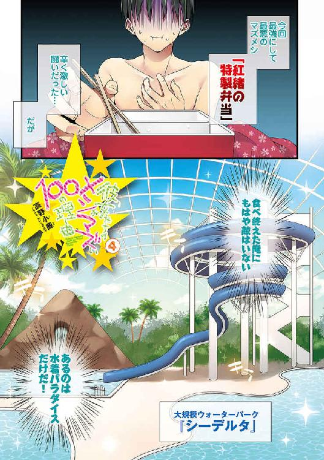
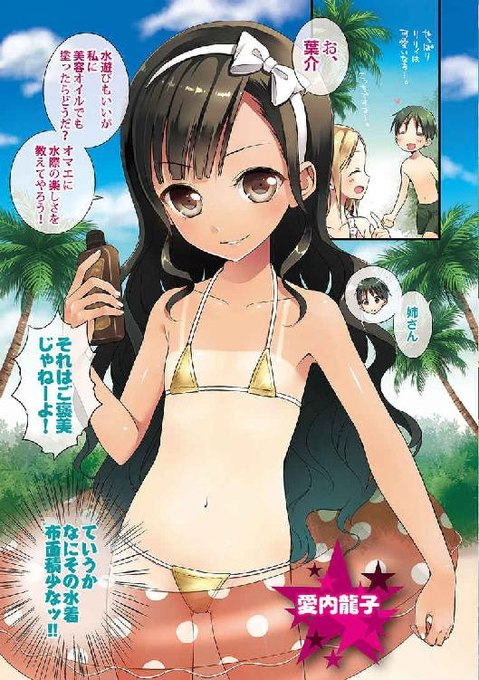
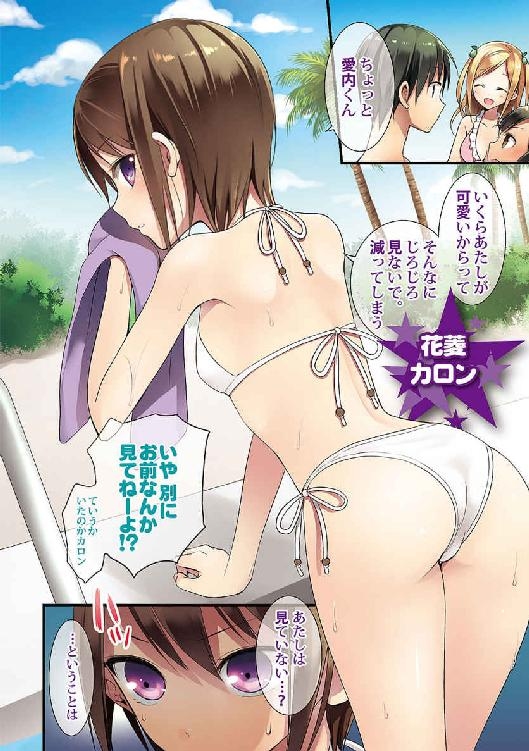
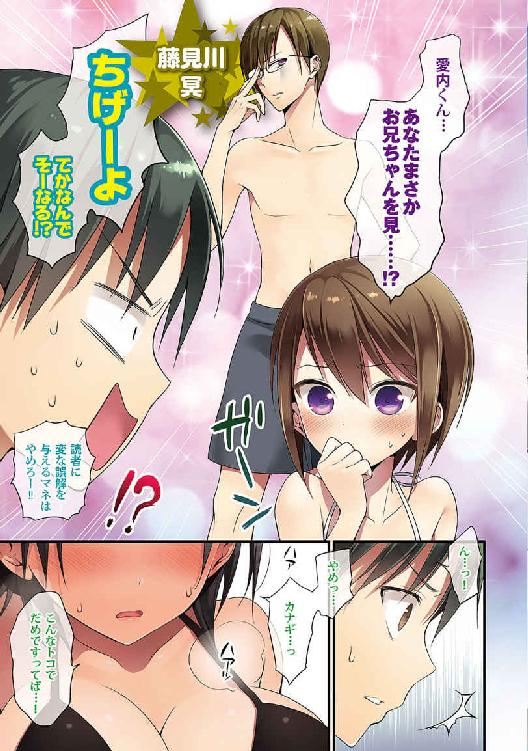
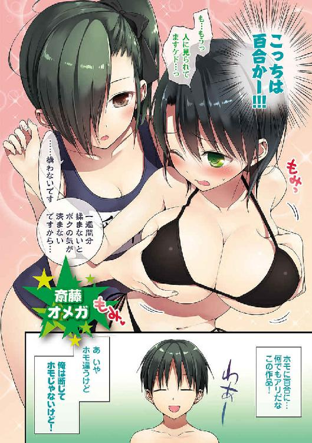
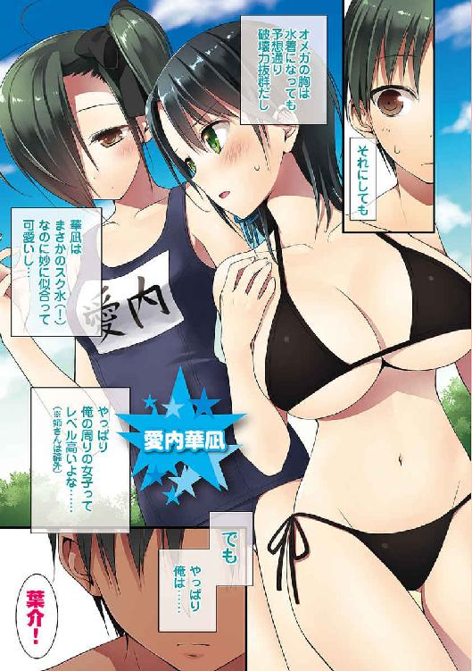
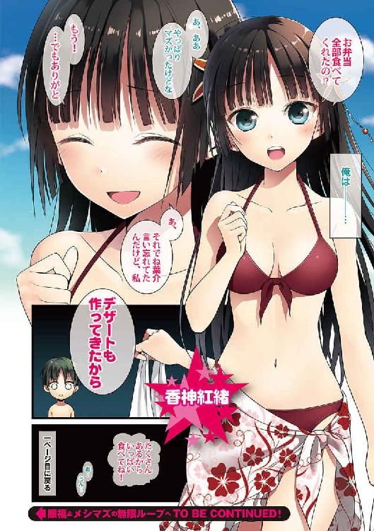
彼女たちのメシがマズい100の理由4
高野小鹿

角川スニーカー文庫
本作品の全部または一部を無断で複製、転載、配信、送信したり、ホームページ上に転載したりすることを禁止します。また、本作品の内容を無断で改変、改ざん等を行うことも禁止します。
本作品購入時にご承諾いただいた規約により、有償・無償にかかわらず本作品を第三者に譲渡することはできません。
本作品を示すサムネイルなどのイメージ画像は、再ダウンロード時に予告なく変更される場合があります。
本作品の内容は、底本発行時の取材・執筆内容に基づきます。
本作品は縦書きでレイアウトされています。
また、ご覧になるリーディングシステムにより、表示の差が認められることがあります。
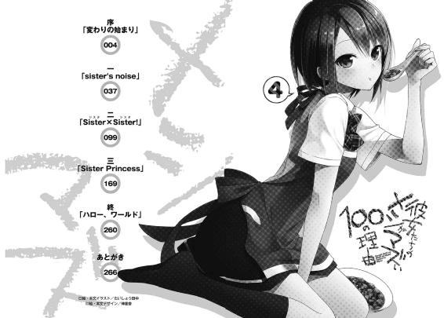
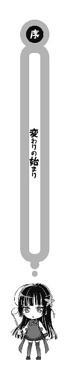
「げ──!?」
起きてみると、既にとんでもない時間になっていた。
寝惚け眼に映る電子クロックの「７:45」という、あまりにも無慈悲な蛍光グリーンのゴシック体が俺の意識を覚醒させる。
九月一日。
もはや説明する必要もないが、日本中の多くの学校が二学期を迎える日だ。それこそ九月一日が土日とバッティングして、夏休みが微妙に延長でもされない限りは。
「やっべ！」
コンマ数秒でその切迫した状況を理解した俺の身体は既に動作を開始していた。
頭の中はプロ棋士にだって勝てそうなくらいの電王っぷりを発揮していて、予鈴の時間と自宅から学校への所有時間を演算し始めている。
計算結果が出る。
──幸いにもデッドラインは越えていない。
通学路を早足で進み、それ以外の何もかもを迅速に行動したとすれば、校門に着く辺りでは携帯の一つも弄る余裕が出て来る時間だ。
つまり、思ったよりも、絶体絶命ではない。
「ふぅ」
そんな事実に気付き、安堵のため息を一つ。
けれど、余裕を持って遊んでいられるほどの猶予がないのは明白だった。
寝癖で僅かにごわついた髪に指を通し、ハンガーに掛けた制服へと近付き、手早く着替えを済ませる。そして鞄を引っ摑み、階段を降りて洗面所へと向かって、顔を洗う。
オーケー。準備万端だ。
起床から五分も経たずに、俺は出発の準備を完了させた。今すぐにでも家を飛び出すことが出来るだろう。
ちなみに基本的に俺は朝メシは抜くタイプだ。もちろん、このことに深い意味などはなくて、お袋が渡英する前から平日の朝は食べないことがほとんどだったわけだが。
「へ？」
と、鞄を手に玄関へと向かおうとした俺は奇妙なことに気付いた。
リビング。
ソファ。
──金色の髪。
「リ、リリィ......？」
「オゥ？ ヨースケ！ オハヨーございます！」
妖精のように可憐で、女神のように優しくて──基本的にがさつで物騒な人間ばかりの愛内家に突如として舞い降りた天使的存在。それがイギリスから日本にホームステイに来ている俺の従姉妹リリィ＝アップルガース。
なんと、普段ならばとっくに学校へと行っているはずのそんなリリィが、吞気にリビングでテレビを見ていた。
俺は眼を見開き、次に壁に掛かったアナログの丸時計を凝視した──普段のリリィならば確実に家には居ない時間だ。更に疑問が積もっていく。
「あ、ああ。おはよう......あ、あれ、珍しいね。リリィっていつもは──」
「そうですネー。ベニオと一緒にいきます。けれど、今日は特別な日なので！」
「特別......？」
普段、リリィは隣に住んでいる紅緒と一緒に学校へ行く。どうしてそんな早朝から登校するのか真面目に意味不明なほど健康的な時間に、だ。
だから、この時間にまだリリィが普通に家にいるのはイレギュラーな事態に当たる。しかも、バッチリ制服姿である。学校を休むつもりでもないわけだ。
となれば特別というのは、どういう意味だろう。
──もしかして、寝惚けて俺は何か大切なことを忘れている？
「葉介。オマエ、何を寝惚けたことを言っているのだ。だらしない奴だな」
窘める声。
リビングと接続した更に奥、台所の方へと目線をやると、そこには朝食を取っている俺の姉、愛内龍子の姿があった。
小中学生と見間違うかのような体軀、日に焼けた肌。強い眼差しにウェーブ掛かった黒髪。両親が渡英している今、この愛内家における最高権力者たる小さな暴君だ。
俺は龍子姉さんの方を見て、正直呆れながら、
「......姉さんは朝から元気過ぎんだよ」
うちの女性陣は朝から皆元気いっぱいだ。そしてそれは寝起きの良さもあるけれど、胃腸の活動に関しても同じことが言えるわけで。
──テーブルの上に所狭しと並べられた豪勢というよりも豪快な量の朝食（一人分）。
今日の姉さんの朝メシは洋食だった。
中央にはカルボナーラの入った大皿。十分に焦がしたパンチェッタと香り付けのガーリック、そしてパルミジャーノの濃厚過ぎる香りが朝は基本食べない俺に攻撃を加える。量は四百グラムはあるだろう。成人男性の一食分に換算すると三人前だ。
その脇にはボウルごと置かれたスクランブルエッグ、そしてマッシュポテト。量はどちらも驚くなかれボウル一杯分。もちろん栄養も考えて野菜も摂る。レタスとキャベツをシーザードレッシングで、これまた一皿分ドサリ。穀物担当はコーンフレークだ。健康にも気を遣う姉さんは牛乳でなくて、これに豆乳をたっぷりと掛けて食べる。また、別口で飲み物として果汁百パーセントのフレッシュオレンジジュースも用意されている。
大食。
まるで、ラージサイズのピザとダイエットコーラをテーブルに並べて満面の笑みを浮かべて親指を立てているファットマン御用達のような食事である。
気分次第で食事量が大幅に変化する姉さんは、時々思い立ったように朝からこんな食事をすることがある。いつも、ではない。毎度こんな食べていたら、愛内家の家計はとんでもないことになってしまう。
「何を言う。朝食は毎日の基本だ。私は朝からしっかりと食べているからこそ活力を保っていられるのさ。時間がなくても、少しぐらい何か口にするべきだと思うがな」
「姉さんの場合、しっかりとかいうレベルじゃねぇだろ......」
というか、だ。
姉さんの朝メシのことなんてどうでもいいのだ。こんなのは何も「特別」ではないのだから。俺が今気になっているのは──
「あ......そうか、もしかして......今日が特別ってのは......！」
そこまで言った時だった。
ぎしり、と一階と二階を繫ぐ階段が僅かに軋んだ音を立てた。
──誰かが、いる。
となれば、その「誰か」というのは彼女のことに他ならないはずだ。現在、我が家で暮らしている人間の数は四人。その内の三人が既にこの場にいる以上、階上にいるのは──
「............準備、終わりました」
魔法の力を秘めているかのように、透明な声が突き刺さった。
階段から降りてきたのは、一人の女の子だった。
右目を前髪で隠してサイドテールに結った髪型、お世辞にもあまり健康的には見えない青白い肌、いつでも泣き出してしまいそうな自信なさげな表情、そして一七四センチという女の子としては相当に珍しい高身長──愛内家次女、愛内華凪。
なんてこったい。
兄である俺が、寝惚けている場合かよ。特別も特別、超特別じゃねぇか!?
今日から新しい高校へと転入することになる華凪からすれば、今日はあまりにも「特別な日」に違いないのだ。
当然──初めて袖を通すことになった、その衣服も含めて。
「カナ！ とっても可愛いです！」
「うむ、サイズもピッタリだな。オーダーが間に合って良かったよ」
「そ、そんな......ことは......」
「華凪、自信を持て。とても似合っているぞ？」
リリィと姉さんが口々にはやし立てた。
すると、あまり褒められることに慣れていないのだろう、華凪は顔を真っ赤にして大きな身体を自ら抱き締めるように俯いてしまう。
「あ、あの......その......に、兄さんは......どう、思いますか......？」
けれど、そのまま沈黙してしまうようなことはなかった。
華凪は僅かに目線だけを上げて、震える声を弓の弦のように引き絞り、俺に尋ねた。
華凪は制服姿だった。
もちろん──私立木々津高校の制服だ。
時季は九月なので、まだ装いは夏服だった。半袖のブラウスと裾に白いラインの入ったプリーツスカート、控えめな胸元には一年生を象徴する青色のチェックリボン。
至って標準的な女子高生の制服。
けれど、俺としてはむしろお嬢様然としたセーラーワンピ型の制服を着ていた華凪の姿が印象的だったため、その姿はとても新鮮に映った。着慣れた向こうの制服もピッタリと似合っていたが、色の白さが余計に映える真白いブラウスやスカートからスラリと伸びた黒タイツを穿き込んだ両脚も格別だ。
結果、俺はぽろり、と思うがままの感想を漏らした。
「すっげぇ可愛いな......」
「ふぇっ!?」
華凪の肩がビクンと跳ねる。その動作が想像以上に大きかったものだから、言葉の選択を間違えてしまったのかと俺の心臓が勝手にドクンと一度、大きな音で鼓動した。
............もう少し練った言葉を使っても良かったのでは？
だって、これって結局はリリィの言ったことと、ほとんど同じではないか。本来ならもっと気を利かせて、言葉にバリエーションを出すべきだったに違いないのだ。
ただ褒めればいいわけではない。
女の子相手なら、もっと内容を吟味して──
「に、兄さんは、女の子に結構簡単に可愛いって言ってしまう人なんですか......？」
「えーと......」
華凪の追及の言葉に少し考えてから答えを出した。「さすがに滅多に言わねぇんじゃないか？ 有り難みが薄れるじゃん。あ、でもリリィにはよく言うかも」
「な、なるほど......でもリリィちゃんに言いたくなるのは、その、わ、わかります......あの、だったら、べ、紅緒ちゃんには？」
「............多分、言ったことねぇな」
さすがに自分の発言全てを記録に取っているわけもないが、紅緒にそんなことを言ってしまったらちゃんと覚えているはずだから、多分これは合っているはずだ。
「そ、そうなんですか、」
俺の返事を聞いて、華凪の口元が僅かに緩んだ。「だったら......その......す、すごく嬉しい......です......えへへ......」
挙動不審になりながら華凪が頰を赤らめ、俺の方を上目遣いで見つめて、視線をまた伏せた。そして、それっきり華凪は口を噤んでしまった。
とても、恥ずかしそうな様子で──けれど、自然と緩む口端を隠すことが出来ずに。
「「「......」」」
残った年上三人は顔を見合わせ、何故だか揃って笑い合った。ここで俺達の口元に浮かび上がっていた笑みもまた、自然と発生したものだった。
「............姉さん、」
そしてスッと顔を上げて、華凪が姉さんに向けて言い放つ。
「──学校、行ってきますね」
「......」
僅かに黙り込んだ後、姉さんが小さく頷いた。
「ああ。色々と大変だと思うが、しっかりやって来い──葉介、リリィ。華凪のことをよろしく頼むぞ」
「了解。まぁ、大して心配いらねーと思うけどよ」
「わかりました！」
いくつもの笑顔に見送られて、華凪の第二の高校生活が、今日始まろうとしていた。
◇ ◇ ◇ ◇ ◇ ◇
が、しかし。
「ひ、ぅ......な、なんですか、これ......なんで、こんな......！」
華凪が今にも泣きそうな顔で全身を緊張させる。大きな身体を丸めて俺の背後に隠れるようにして歩き、指先はひっしと俺のワイシャツの裾を握り締めている。
華凪は、怯えまくっていた。
ガクガクブルブルと身体を震えさせ、既に目尻には大きな涙の粒が滲んでいる。
「ものすごく、みられていますネ......ワタシ達......」
リリィが、苦笑交じりに言った。俺も頷いて、
「ああ......大体、皆、こっち見てるよな」
「ハイ。ワタシがこちらの学校にかよいはじめた頃をおもいだします」
姉さんに見送られた後、俺達三人はそのまま学校へと向かった。
少し家を出るのが遅くなった俺達だったが、早足で進んだおかげで通学路の半分を過ぎる頃には意外と時間に余裕が出来始めていた。
結果、歩を進める度に散見される学生の数も増加して行ったわけだ。
しかし、ここで問題が起こった。
最初は「妙だな」と僅かに感じる程度だったのだ。けれど、周囲に人が増えれば増えるほど、その疑惑は確信へと変わった。
──集中する、視線。
複数のルートから生徒が合流してくる関係上、校門に近付けば近付くほど人間の数が増えるのは道理だ。そして新たに現れた人間達は尽く、ギョッとした表情を浮かべて、再度俺達の方を凝視するのである！ もちろん、男女問わずにだ！
「......随分と目立ってるみてぇだな」
見られている──逆にこちらから視線を飛ばしてみると、波が引くようにこぞって顔を背けるのだから参ってしまう。これは......？
「異様に背が大きい人を見かけたりすると、ついつい見てしまうとか......珍しいことじゃありませんよね......あはは......」
すると華凪が掠れた声で、言った。
数分程前の頼もしさはどこへ行ってしまったというのか。一瞬で、普段以上のネガティヴモードに戻ってしまった華凪は絶望に染まり切った表情を浮かべると、
「こ、これってやっぱり......ボクがデカいから......ですよね......」
あまりにも自嘲の過ぎた言葉を吐き出した。
そもそも華凪にとって「大きい」とか「デカい」という単語は大地雷である。これらの単語は大概の場合において、元からプリン並みにグニャグニャな華凪のハートを、木端微塵に爆破する絶対的攻撃力を秘めている。
そんな言葉を、華凪は自ら進んで口にしたわけだ。
これは、華凪が相当追い詰められていることに他ならない！
「っ......！（リ、リリィ！）」
「......！（こくこく）」
糸を手繰るように俺と視線を交わらせるや否や、リリィも続いて頷いた。
『なんとかして、ここは否定しなければ！』
リリィの碧色の瞳も、間違いなく、そう語っていた。
「いやいや！ そんな......そんなことないよなぁ、リリィ!?」
「エ、エエ！ もちろんです！」
心強い仲間を得た俺は、華凪のダウナーオーラが空気に伝播する前に、状況を何とかしようと声を強めた。場を察してくれたリリィもすかさず同調してくれる。
が、しかし。
「では......どうして、こんなにボクを見る人が多いんですか......？」
「えっ」
「そんなことがないならば......見られる理由があるはずです......」
華凪は、そう簡単に引き下がらなかった。ネガティヴに強情だった。俺は若干たじろぎながら、
「......まぁ、背の高さが全く関係ない、とは言わねぇけどさ」
「や、やっぱり......！」
「いや、だからソレだけじゃねぇんだって！ そりゃあ女の子でソレだけ体格が良ければ目立つってのはあるさ。けど、他にも理由があるはずなんだ。それ以外にも華凪がなんつーか、その、なんだ............可愛いから、皆も興味津々だと思うわけ！」
「オゥ、ヨースケはいいことをいいますネ！ ワタシも同じことをおもいます！」
「............可愛い、から？」
言われて、華凪がきょとんとした表情を浮かべる。しかし、すぐさまブンブンと首を物凄い勢いで横に振ると。
「ち、違います！ ボクが見られてるのはボクの背が大き過ぎるからに決まってます！」
「え、いや、だって......さっき俺が褒めた時は、素直に嬉しいって......？」
「そ、それはあくまで兄さん達だからで......ボクのことを初めて見た人は、身長のことで頭がいっぱいになって、他のことなんて目に入らないはずです......！」
「うーん......そ、そうかなぁ......？」
我がネガティヴな妹はこう言うが、俺はどうにも腑に落ちない気分だった。
──別に馴染みの関係だろうと初めて見掛けた関係だろうと、可愛い女の子が注目を集めてしまうのは人類共通ではなかろうか、って思うんだけど。
背が大きいのも勿論あるだろうけど、何よりも華凪がとっても可愛いからこそ、こんなことになっているんじゃねーの？
もしもこれが背がデカくて、強そうで、ガッツのありそうなゴツい女の子だったとしたら、むしろ皆視線を逸らしまくるのではないか。
「そうです、そうに決まっています......！ 今だって、ほら......！」
華凪へと向けられる視線が重なり、そこにヒソヒソ話が加わり、次第に華凪の声が高くなっていく。が、よく聞くと、その噂話にしても『あの凄い背が高くて可愛い子はいったい誰!?』という明確に肯定のニュアンスを帯びた話が展開されているのだが、自分にまるで自信のない華凪は自然とその声をシャットアウトしてしまっているのだ。
............どうしたモノだろう。
どうも身内である俺とリリィは自ずと華凪のことを気遣った発言をするため華凪から公平性に欠けると認識されているらしい。
つまり、だ。遠慮と無縁で常にズバズバと正直な感想ばかりを吐き出す知り合いが、この場に現れたとしたら、事態は上手いこと進展するような気が──
「ッ......！」
その時、だった。
俺達が歩いていた道路の右手側......Ｔ字路になっている方面から非常に慌ただしい勢いで、一人の少女が飛び出して来たのは。
「ぜー......はー......こ、ここまで来れば......間に合う......はず......」
信号を無視して交差点を爆走するトラックのような勢いで現れた少女は肩で息をしながら独りごちる。相当に見慣れた人物──ただ、かれこれ一ヶ月半は会っていなかったせいか、顔を見るのはかなり久しぶりな気がするわけだが。
茶味を帯びたショートヘアー、恐ろしく悪い目付き、クールなように見えて実は全然そんなことのない困った性格──花菱カロン、その人だった。
「ワッ、カロンです！ おはようございます！」
「............え。リ、リリィ......？ なんでこんな時間に......紅緒と一緒じゃ......？」
「今日は一緒ではありません。どちらも都合があわなかったのです！」
「そ、そうなんだ......ひぅ......お、おはよう......はふ......ぜー......」
額を玉の汗で濡らし、息も絶え絶えといった様子で花菱が挨拶を返した。どうも察するに家からかなりの勢いでここまで走って来たらしい。
「随分とお疲れみたいだな、花菱。なんかあったのか？」
挨拶も兼ねて、試しに声を掛けてみる。いつものパターンなら、罵り率九十八パーセントの言葉が打ち返されてくるはずで──
「......」
「......ん？」
返事が、ない。
ただの屍でもあるまいに。
「............花菱？」
「愛内君に構ってる......はひ......暇......ぜー......ない......」
「オマエ、どんだけバテバテなんだよ......言うほどオマエん家って遠くねぇじゃん......ここからだと、歩いて十分掛かんねぇじゃん......」
「あたしは......体力テストの持久走で十分を切ったことが......ない女だから......」
「オマエってランニングが趣味じゃなかったのかよ」
「好きなことと得意なことが一致するほど、この世は幸せに出来ていない......」
訂正しよう。
今の花菱は、むしろ屍の方が近かった！
コイツが驚くほど体力のないひ弱っ子なのは承知の上だが、新学期早々こんな調子で大丈夫なのだろうか......って、そうだ、完全にウッカリしてたぞ。
──華凪と花菱って面識ないじゃん。
「............うん？ 二人とも、その子は......？」
と、俺が動くより先に花菱がこちらの同行者の存在に気付いた。
少しは体力が回復したのか、膝に手をついた体勢から身体を起こし、目線を上げた花菱が、俺の後ろの方をじぃっと見つめる。そこには俺の背中に隠れた、華凪の姿がある。
「ぅ......！」
華凪はぴょこんと肩を跳ね上げると、それでも俺達の知り合いということで人見知りっぷりが少しは緩和されたのか、声を震わせながら、
「......え、と、は、はじめまして......愛内......華凪といいます......」
まるで樹木に隠れて顔だけを覗かせた森の妖精的動作ではあったものの（そう言うには体格が良過ぎるが）、何とか花菱に対して挨拶の言葉を投げ掛けた。
「............」
僅かな空白。静止する空気。
たっぷりと五秒間、華凪の顔を見つめていた花菱は、おもむろに俺の方を見上げて、
「愛内君。教えて欲しいのだけれど、」
──物の見事に、見たままの感想でもって尋ねた。
「この途轍もなく背の高い子が、噂の妹さんということでいいの？」
まさに地雷がドカーンだった。
俺とリリィは何も答えることが出来ず、パキーンと凍りつく。瞬間、
「......ひぐっ、」
ポロリと華凪の瞳から、涙がこぼれ落ちた。
「や、やっぱり......ボ、ボクの第一印象は身長のこと......なんですね......！ わ、分かってました......そうですよね......他のことなんて目に入らないですよね......！」
「えっ......!? な、なんで泣いて......!?」
顔を手で覆い──泣き始めたのだった。
華凪のネガティヴ思考を必死でフォローしようとしていた俺達の頑張りは一瞬で水泡に帰した。天を仰ぐ俺とリリィ。更にガンガン泣き始める華凪。そのせいで更にザクザクと全方位から突き刺さる視線の嵐。
「あ、あたしは別に、悪いことはしてない......」
ただ一人、全く事情を知らない花菱だけが、オロオロと所在なさげに周囲を見回すのだった。
「なるほど。そういう事情があったというわけ」
「はい......すいません。ボク、すぐ泣いちゃう癖が全然抜けなくて......こんなに身体は大きいのに、情けないですよね......」
「身体の大きさは関係ない」
「そ、そうですか？」
「そう。あなたはもう少し自分に自信を持つべき。あたしみたいに」
「でも、ボクは全然で......」
「そういうのが良くないと言っている」
グズついていた華凪もようやく泣き止み、明らかに人通りが少なくなった道を俺達四人は更に足早に移動していた。
さすがに四人ともなれば、横一列に並ぶのは他の通行者に迷惑だ。そんなわけで、自然と前に華凪と花菱、後ろに俺とリリィという二列二人ずつの形に落ち着いていた。
「......カロンとカナ、相性がいいのでしょうか？ 二人とも普通にはなせていて、びっくりです」
リリィが俺にだけ聞こえる小さな声で言った。
その意見には俺も同意だ──実際、何とも意外な並びではないだろうか、コレ？
なにしろ花菱と華凪はお互い数分前に出会ったばかりで（花菱は紅緒達から華凪について少しは話を聞いていたようだが）、面識はなかったのだ。
だというのに華凪と普通に会話が成立しているのは結構な驚きだった。ただ、この二人といえば──
「だよな......でも、アレじゃねぇの。二人とも、なんだ。兄貴に対して、な。うん」
「オオ......、」リリィが頷く。「ナルホド、そーいうことですか」
「だろ？ だから、波長が合うのかも。実際どうなのかは分かんねーけど」
自分の妹のことを兄自らそういう風に扱うのはどうかとも思うけれど。
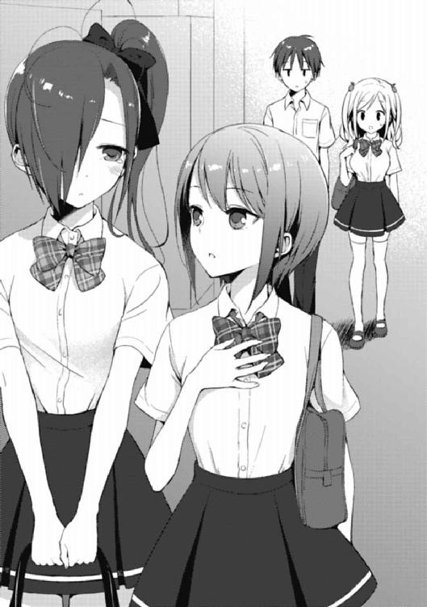
ただ実際、とにかくネガティヴな華凪に対して、いったいどこからその無駄な自信が湧いて来るのかと首を傾げるくらいポジティヴな花菱は、同じ兄好きな妹としても随分と対照的な存在だな、と思うのである。
この前向きさが半分ぐらい......いや、そんなに要らん......正直、華凪には花菱みたいになって欲しくない......そうだな、二割増しくらいでいい。
それぐらい、自信を持って貰いたいのだが。
そうすれば、今のようにあらゆるものに怯えて、背中を丸める必要もなくなる。しゃんと背筋を伸ばした時にだけ、見えるものを知って欲しかった。だって本来の華凪は誰よりも高いところから、世界を眺めることが出来るはずなんだから......。
「っと、何だかんだで間に合ったな」
などと考えながら歩いていたが、ようやく校舎の姿が見えて来る。さすがに初日から遅刻という惨事は避けられそうなことに、俺は安堵のため息をついた。
が、しかし。
「おはようございまーす！ もうすぐ始業式が始まるので、急いで教室に行って学級委員の誘導に従ってくださーい」
校門の前で、何名かの生徒が挨拶活動を行っている姿が目に入ったのだ。
学級委員？
そうだ。うちの学校は風紀委員会が存在しないため、朝の挨拶運動は持ち回りで学級委員が担当することになっている。だから──俺のクラスの学級委員である彼女が、朝、校門の前に立っていることは何も不思議ではなくて。
「げっ......！」
「あ、まだベニオはいたんですネー。とても遅い時間になってしまったので、もう体育館にはいってしまっているのかとおもっていました」
のほほん、とリリィが言う。どうもリリィはこの事態の深刻さにまるで気付いていないらしい。これは──相当に大変なシチュエーションだぞ！
「べ、紅緒ちゃん......!?」
「ん。あ、みんな。おはよ──」
紅緒の視線がようやく登校して来た俺達の方へと向けられる。
が、こちらにも大いに心を乱している者がいるように、紅緒の方も平然と俺達に笑顔を向けて来た──というわけではなくて。
「あ......華凪ちゃんも......！」
ごくり、と紅緒の細い喉が唾を吞み込む。そんな仕草がまるでテレビのスローモーション映像のように、奇妙な具合に印象的なワンシーンとして視界に残った。
「「......！」」
「............どうして二人ともいきなり黙ってしまったの？」
紅緒と華凪が向かい合い、それぞれ微妙な感情のこもった皺を顔に刻む。
ただ一人、この両者の「因縁」を詳しく知らない花菱だけが怪訝そうな様子で、実に真っ当な疑問を溢した。
この二人の関係を端的な言葉で表すとしたら、それはきっと「劣等感」という言葉が最も相応しいように思える。
俺のことが大好きだった華凪と、昔からずっと俺の側に居て、常に華凪よりもありとあらゆることにおいて優れた能力を持っていた紅緒。
華凪は俺の幼馴染みである紅緒にずっとモヤモヤした感情を抱えていて、その思いがついに爆発したのが七月に長野の山茶花女学院で起こった一件だったわけだ。
確かに、あの事件は解決した。
かといって、華凪が心の中で十何年にも及んで紅緒に対して築き上げて来た劣等感の城が完璧に崩落してしまったかといえば、そういうわけでもなくて。
「ちょっと、愛内君。意味が分からないのだけど。説明して」
誰も疑問に答えてくれなかったためか、業を煮やした花菱は俺の肩をトントンと気楽に叩き、回答を促した。が俺は短い息だけで「しっ」と花菱の発言を制止して、
「ちょい黙っててくれ花菱。大事なとこなんだ」
「......」
「理由はあとで話すから」
言いながら、紅緒達の方へと視線を戻す。花菱は露骨に唇を尖らせていたようだが、今の俺はそんな激おこな仕草も堂々とスルーしてしまうのだった。
花菱に構っている暇はなかった。
「ひ、久しぶりだね、華凪ちゃん」
先に口を開いたのは紅緒だった。これに華凪も応じて、
「............そ、そうですね」
「一ヶ月くらい、かな......？ 最後に会ったのは長野だったもんね」
「............そ、そうですね」
ぎこちないにも程がある会話だった。けれど、それも無理はないのだ。
なにしろ二人が顔を合わせるのは、紅緒が言っているように約一ヶ月ぶり──というのも、華凪が長野から東京へと正式に引っ越して来たのが昨日の夜で、それまで華凪は長野の山茶花女学院で普通に授業を受けていたのだから。
この性急過ぎる引っ越しの理由は、俺達の通う木々津高校と山茶花女学院の採用している学校過程制度の違い、つまり「三学期制」と「二学期制」の違いにある。
最近増えているという二学期制の学校の場合、実は夏休みが非常に短い。七月末から夏期休暇が始まり、八月中旬には授業が再開してしまう。日程的には一般的な高校のイメージよりも、大学の「セメスター制」と非常に近いシステムなのだ。
華凪も八月中に何度か東京に来たりはしていたのだが、丁度運が良くか悪くかは分からないが、紅緒と鉢合わせすることはなかった。
とはいえ、そのせいでこうして校門の前で予期せぬバッティングをしてしまったわけだが──
『～～～♪』
「なっ......!?」
と、ここで予想外の事態が起こった。この絶妙過ぎるタイミングで、だ。しかも、この通知音はメールでもなければトークアプリの受信通知でもない。
着信、だった。
おいおい、こんな朝っぱらから何で見計らったように電話が──
『素晴らしいシチュエーションだな、葉介。ナイス修羅場だ』
「死ねよ」
プツッ。
速攻で通話を終了する。しかし、俺が電話を叩き切ったのと同じくらいの俊敏さで、向こうからは二の矢が飛んで来る（こちらが電話を切るのを予測していたということだ）。
俺は着信画面の通話者名を一瞬睨みつけた後、もう一度電話に出た。
「......まだなんかあんのか。つーか、教室から見てんのかよ、お前......」
『そうだ。だが、もう言うべきことは言ったのだ。ただの嫌がらせだ』
「じゃあ掛けてくんじゃねーよ！」
声を荒げ、またしても電話をブッタ切る俺。しかし怒りのあまり、ついつい声量が大きくなり過ぎてしまったらしくて、
「ヨースケ、声が大きいです！ あそんでいる場合ではありません！」
「ご、ごめん......そうだよね......いや、でも実は電話を掛けてきたのは......」
「いいわけはダメです！」
「はい......」
紅緒と華凪の成り行きを見守っていたリリィが眉を顰め、俺のまるで空気を読まない行動を窘めた。俺はリリィに怒られてしまったショックでガックリと肩を落とす（心優しいリリィが他人にお説教をするなんて、本当に滅多にないことなのだ！）。
隣では花菱の奴がそんな光景を見て、事情をよく知らないくせに「愛内君はやっぱり愚かとしか言いようがない」などと呟き、プププッと吹き出していた。
「「っ......」」
──ただ、リリィが怒るのも無理はない状況のようで。
先程までは錆付いた歯車が嚙み合うようなぎこちなさではあるものの一応は会話が続いていた紅緒と華凪だったのだが、なんと俺が冥からの電話で右往左往しているうちに、両者の言葉のキャッチボールはどちらともなしに止まってしまったらしい。
つまり、沈黙だ。
紅緒が困り果ててしまっているのが見て取れた。相手を強く意識しているのは華凪の方なので、今回のケースだと紅緒の方が主導権を握るのは難しい。重要なのは──紅緒に対して、華凪がどのような態度で臨むのか、という一点なのだから。
「べ、紅緒ちゃん！ ボ、ボクは......紅緒ちゃんに言いたいことが......あ、あります......」
「っ──は、はい！」
ついに、華凪が動いた。
ねじ曲がり、アクセントの狂った声で、華凪が紅緒の名前を呼ぶ。「あの」だとか「その」だとか、要領を得ない吃音混じりの掠れた声で。
「ボ、ボクは、今日、兄さんに『可愛い』と言ってもらいました......！ 紅緒ちゃんが兄さんに言われたことのない言葉です......と、特別な言葉なんです......」
「た、確かに私は言われた記憶はないかも......！」
「そうなんです。だ、だから、」
華凪がゴクリと唾を飲み、意を決して言い放つ。
「ボ、ボクは.........べ、紅緒ちゃんに何もかも負けているわけじゃありません......！ 勝っているところだって、あるんです......！ 今までとは違います......！」
それは華凪の心の中にある紅緒に対する劣等感を消し飛ばそうとする言葉だった。
華凪は頑張っているのだ。
堅く暗い蛹の中に閉じこもった自分自身を、どうにかして成虫へと羽化させようと必死になっていた。
さっきまでベソをかいていたのに、紅緒を前にしたらコレだ。覚悟が、あるのだ。華凪の中にも今までの自分を何とかして変えていこうと願う強い心が──
「い、以上です──あ、そ、それと......紅緒ちゃんも来たくなったらいつでも家に来て家事をやっていいです......ボクは紅緒ちゃんのマッズイ料理に文句を付けることを楽しみにしてるので......あまり調子に乗って批判すると姉さんに蹴られるのでやりませんが......で、では、し、失礼します......！」
「あ......」
一方的に言いたい放題言いまくった華凪は、俺達に脇目も振らずダッシュで校舎の方へと駆けていった。何か言いたげだった紅緒が追い縋る暇もない。が、しかし。
「............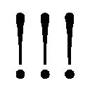」
十秒ほど経った後、顔を真っ赤にして何故か華凪は引き返して来たのである。そして俺の前までバタバタと息を切らして走って来ると、物凄く恥ずかしそうな表情で、
「に、ににに兄さん......始業式の前に職員室に行かないといけないんですが......ば、場所が分かりません......連れていってください......」
紅緒やさっきまでのやり取りを見ていた生徒達にチラチラと視線を投げ、ソワソワしまくりながら俺の袖をクイッと引いた。
......何とも、こういう微妙に締まらないところがうちの妹らしいと俺は心底思った。
「そういうことは先に言えって......っと、紅緒。わりぃな、朝から騒がしくて」
「え......あ、ううん。全然、別に」
紅緒が小さく首を振る。ぽかん、としている。普段から紅緒は色々と抜けた奴ではあるけれど、この時は普段よりもその呆けた印象が強く残った。
──何か理由がありそうな気がする、かもしれない。
「............本当に大丈夫か？」
「だ、大丈夫！ あ、そうだ......お、おはよう葉介！ 華凪ちゃんを職員室に送ったら、そのまま体育館に来てね。多分、クラスの方は皆いなくなってると思うから！」
「おう、ワリィな──そんなわけだからリリィ、花菱。先にクラス行っててくれ。俺は華凪を送ってくからさ」
「わかりました！ もう時間がないのでいそいでくださいネ！」
「了解。っしゃ、行くぞ華凪。走るぞ......つーか、なんだ。頑張ったな、オイ。カッコ良かったぞ、華凪」
「か、可愛いだけじゃなくて、カッコ良いもですか......!?」
「ああ。中々、あんな風には言えねぇって」
そんなこんなで結構真面目に時間がヤバくなって来ていたのもあって、俺は華凪と連れ立って職員室へ向かうことで頭がいっぱいになっていた。ただ紅緒の呆け具合がいつもより少し割り増しだったような気はしたのだが、すぐに我に返ったから問題ナシだと思った。
──というよりは。
「............いつもの愛内君と違う」
むしろ、残ったもう一人の人間の存在を激しく蔑ろにしていたせいで、最も顕著な変化に気付かなかっただけなのだけれど。
要するに今回の一件は、この九月一日朝のやり取りを起点にして始まるのだ。
ただし、ここ数ヶ月の出来事と一味違うことがある。俺の生活は実のところ、大分落ち着いて来た。だから、問題は愛内家を飛び出して拡散することになる。
時は九月、ついに秋が訪れる。
秋は変化の季節だ。様々なモノが変わらざるを得ない。もちろん、俺以外の人間に関しても同じことが言える。今回のキーワードを挙げるとしたら......そう。
弁当、だ。そして、忘れてはならない言葉──「食欲の秋」。
天高く馬肥ゆる秋であろうと、俺達を取り巻く「例の言葉」だけは決して変わることがない。少なくとも、この季節が冬に染まるまでは。
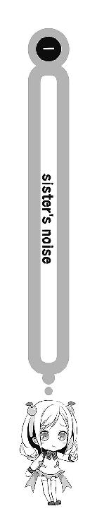
俺達の高校では二学期の始業式の翌日から通常授業が始まることになる。全ての時間割りが早くも平常通りに執り行われるわけだ。
つまり、一限から四限までの授業が終わり、その次に──昼休みが訪れる。
当たり前のように。
そんな──校門前での一悶着が明けた翌日の昼休み。
忍び足で一階（つまり一年の教室が存在する階）へと足を運んだ俺は、おもむろに視線を持ち上げ、教室の戸口の上部に備え付けられたプレートを確認する。
「確か、一年四組だっけか......」
時間帯は四限が終わった直後の昼休みだ。
目的地である一年四組も授業は終わっているようで、扉からこざっぱりした表情の生徒達が次々と弁当包みを片手に廊下へと繰り出していた。
既に二学期ということで一年生特有の新たな環境に対する緊張感のようなモノも完全に消え去っており、廊下は和気藹々とした雰囲気に包まれている。
ただ、逆に──俺の方は何とも言葉に言い表しにくい、居たたまれなさのようなモノを感じていた。
リボンの色で学年が一目瞭然となる女生徒と違って、制服姿の男子生徒を明確に識別する方法はない。つまり俺が二年生であり、この一階廊下においては純然たるイレギュラーであることが喧伝される心配はまずないのだが......それでも、心にシコリは残る。
──物凄く、居づらい。
ほんの半年前までは、毎日この場所を我が物顔で歩き回っていたというのに。
まるで小学四年の始業式の日、学年が上がったことを忘れていたせいで三年生時のクラスの自分の座席に十分ほどドヤ顔で座っていた時のような気分だ。
あの時は、登校はしているのにいつまで経ってもやって来ない俺に気付いた紅緒が、顔を真っ赤にして三年のクラスまで俺を回収に来たのだが──今思い出しても、穴があったら入りたいな、アレは......。
「お......」
あくまで「通りがかった」という何気ない態度を装いながら、教室の前を遠巻きに往復していた俺は、ついに目的の人物を捕捉することに成功する。
窓側二列目、最後列──一際背の高い女子を、多数の女生徒が囲んでいる光景。もちろんそれは我が妹、愛内華凪以外の何物でもない。
『愛内さん、山茶花女学院から来たんだよね。やっぱりあそこは凄いの？』
『ヤバいお嬢様ばかりって聞くけど、ああいうところの食事って何が出るんだろう。やっぱり、常にステーキとかお寿司なの？』
『二年生にお兄さんいるってホント？ どんな人？』
『メッチャ背高いよね、何センチくらいあるの？』
声量を抑えるということを知らない女子達の姦しさは、廊下の教室側で聞き耳を立てている比類無き不審者の俺にすらバッチリ届いていた。
一方、非常に透き通った声質ではあるが声量自体が非常に少ない華凪の声は、さすがに聞き取ることが出来ない。ただ、いつものようにアウアウしながらではあるようだが、一つ一つの質問に真摯に答えているのは見て取れた。
「ううむ」
もう見たままだが──俺は華凪が心配で、わざわざ本人の教室にやって来ていた。
ちなみに、俺がこんな行動を取っている全ての原因は九月一日の夜にある。昨夜、華凪の転校を祝して、愛内家一同は夕飯を外食で済ませた。
寿司、である。
もちろん回転系の。
ちなみに紅緒は『家族水入らずの方がいいよね』と言って同行はしなかった。紅緒はかなり遠慮をするタイプなので長野旅行の代金を姉さんのポケットマネーで全部払って貰って以来、お金の掛かりそうなイベントは固辞する傾向にあった。
舞台は回転ずしに移り、当然、話題は華凪のことに集中した。まるで久しぶりに会った親戚のオバサンのような勢いで、俺達は華凪を質問攻めにしたわけである。
曰く『友達は出来たか（俺）』『上手くやれそうか（姉さん）』『いじめられたりしなかったか（俺）』『どんな部活に入るのか（リリィ）』『格好良い男はいたか（姉さん）』という怒濤の質問攻勢。が、どうも華凪はあまりクラスのことを話したくなかったらしくて、ほとんどの質問に『まだ初日だから』と曖昧な回答をした。
唯一、最後の姉さんの質問にだけ華凪は『兄さんより素敵な人なんていません』と即答したが、その瞬間、姉さんが『うちの妹はなんて男を見る目がないのだろう......』と心底諦観めいた表情を覗かせたのを俺は見逃さなかった。この姉、最低だ。
「意外と上手くやってる、か......？」
露骨に怪しい俺の姿を一年生達が酷く訝しげな目で見ながら通り過ぎていく。
だが、そんなことはどうでもいい。大事なのは華凪なのだ！
──クラスで浮いたりしていないだろうか、いじめられていたりしないだろうか。
先日、山茶花女学院に足を運んだ時も似たような心配をしていた気がするが、気になるものは気になるのだから仕方がない。
でも、ひとまず大丈夫そうに......見える......。
「うむ......」
小さく首肯し、俺は華凪から視線を外した。
少なくとも、昼食の席で一人佇む華凪の姿とかを見ないで済んで、本当に良かったと思う。目的は達成された。華凪に見つからないうちに、サッサと去ることにしよう。
気付かれると、これは地味に面倒なことにな──
「あ......に、兄さん！」
「えっ!?」
撤退を決めた矢先だった。今まで声量的に全く聞こえなかった華凪の声が、初めて俺の耳にまで届いたのである。ひたすらに鮮明で鮮烈な、高解像度の声が。
振り向く。速い。
華凪はもう俺と二、三メートルの距離にまで走り寄っていた。
「き、きてくれたんですね......」
到達。
目を潤ませ、頰を紅潮させ、溶けるような瞳で華凪が俺を見つめた。
こうして並ぶと、妹の背の高さを実感する。華凪以外の女の子と話す時、こんなに視線を高くすることなんてありえない。
だから、この極めて水平に近い角度は華凪だけの特別なモノだった。
「あ、ああ、ちょっと心配になってさ」
「う、嬉しいです......ボク、もう死にそうです......！」
「いやぁ、お前......それは大袈裟過ぎるっつーか、なんつーか......」
言いながら、華凪の肩越しに俺は今の今まで華凪を囲んでいた女子達の方に視線をやる。もちろん、あちらの視線は俺と華凪の方へと注がれていた。
誰とも無しに彼女達と俺の目が合った。
衝動的に、俺はひょこっと頭を下げる。向こうも同じように会釈を返してくれた。
何となく、お互いに挨拶は済んだ気がする。
「えーと、あの子達は......？」
「あ、はい。クラスの子達です。ボクに色々とよくしてくれまして......」
「そうか。そりゃあ良かった。じゃあ、俺はこれで──」
空気が言っている──ここで、華凪の兄が長居をするのはマイナスだ、と。
このまま俺がサラッといなくなれば、彼女達に昼休みの話題を一つ提供することが出来るだろう。同じ学校に通う、一つ上の兄という中々弄り甲斐のあるネタだ。
しかし、逆に話し込んでしまうと向こうも手持ち無沙汰になって、華凪への心証を悪くすることになる。華凪の新生活の足を引っ張りに来たわけではないのだ、俺は。
去らねば。今すぐ。可及的速やかに。
──が、しかし。
「あの、兄さん......お昼はどうされるんですか......？」
「へ......多分、普通に教室で食うけど」
「そうなんですか！ あの、でしたら、ボクも──」
華凪が眼を輝かせながら言い掛けたところで、俺の中でセーフティネットが発動する。
これはダメだ。
俺は華凪が言葉を言い終わる前に、首を横に振りながら、
「華凪。それはねーよ。クラスの子達と食べなさい」
「えっ......」
華凪が目を見開いた。俺は誤解されないように早口で尚も、
「最初から他所のクラスで食ってたら、良いイメージ持たれねーだろ。俺とメシなんて休みの日とか、いつだって食ってやるよ。でも、しばらくはやめとこうぜ」
「そ、それは......」
「あと、さ。今日は思わずこっちに来ちまったけど、もう見に来たりしないから。必要ないだろ。俺がいなくたって、今の華凪なら立派にやれるはずだ。違うか？」
「あ......、」華凪がハッキリと頷いた。「──違いません」
やはり、まずはクラスや学校に馴染むことが一番大事だ。
俺なんかよりも大切なモノはいくつもあるはず。貴重な昼休みの時間を俺のために使ってくれるのは、もう少し余裕が出来てからでいい。
「兄さんの言う通りです。ボク、兄さんと学校で会えて、舞い上がってました......」
少し華凪は項垂れたものの、すぐさまハッキリと頷いた。
「で、でも、落ち着いたら、ボクと一緒にお昼を食べてくれますか......？」
「ああ、それなら全然」
「ありがとうございます......！」
パァと華凪の表情に笑顔が戻る。そして、華凪は俺に小さく手を振って、また友達のいる方へと戻って行った。俺が背中を向けた辺りで、華凪に対する質問の声が廊下で聞いた時よりも一回り大きくなった気がした。
そして一週間ほど経って、いわゆる華凪の言った「落ち着いたら」的な状況が訪れる。
「なるほど。そんなことがあったのか」
「あったんだよ。で──今日、華凪がこっちに来るってわけ」
昼休み、場所は学食だ。
その日、久しぶりに男子グループと女子グループが一緒に食事を取る予定だった。
と、そんな時に華凪から突然『今日、一緒にお昼を食べてもいいですか？』というメールが届いたのである。結果、それについて他のメンバーに了承を取った俺は、こうして学食の六人席を確保して華凪が来るのを待っているというわけだ。
「ううむ、まさか華凪ちゃんが来るとは......緊張するなぁ......」
「別にンな必要ねぇだろ。普通に食えよ」
「えー、でもさぁ......」
対面の紅緒が肩を強張らせる。紅緒が未だに華凪と一緒に食卓を囲むことに、ビビっているのは紛れもない事実のようだった。
だから、その意味でも今日は良い機会になると思った。世の中には一度経験してしまえば二回目三回目以降は計り知れないほど気が楽になることも多い。
「そういえば、カナはお昼には、いつも何をたべているのですか？」
「えーと、確か華凪は学食だったと思うぜ」
リリィの質問に記憶を探りながら答える。
三日ぐらい前に『昼は何食べてんだ？』と尋ねたら『毎日学食です』と言っていた覚えがある。多分、クラスの子達と学食に行って食っているのだろう。
すると、リリィは口元にわずかな苦笑を刻んで。
「ならば、少しあんしんしました。もしも『お弁当』派だったら、どうしようかと──」
「ああ......確かに。アレはヤバいよな。でも、弁当派ってこたぁねーと思うぜ。だって華凪は大体俺と同じ時間に起きて一緒に学校行くんだから、作ってる時間ねーもん」
「そうですネ。本当にアレはヤバいです......」
「そうかなぁ。お弁当になったら、どんな風になるかとか、かなり興味深くない？」
「ねーよ」「ナイデス」
いつも通りな紅緒の発言に、声を揃える俺とリリィ。
心優しいリリィがちょっと手厳しい言葉を返してしまうのも無理はない。俺だってアレの話題は警戒せざるを得なくなってしまうのだから。
そしてもちろん──アレとは「昆虫」のことだ。
愛内家で食卓を囲む人間の中では、俺とリリィだけが虫ダメ派閥であり、残りの三人（紅緒・姉さん・華凪）は喜んでバクバク食べるわけだ。非・昆虫食嗜好者がまさかの少数派になってしまうという驚くべき状況。我が家はあまりに異文化に寛容過ぎる。
「うん？ ヤバいとは、どういうこと？」
と、ここで花菱が俺とリリィの会話を聞いて、不思議そうな顔をした。
花菱の前には、いつも通りカロリーメイトと水とタブレットケース、それと辛味系調味料しか置かれていない。花菱は昼は軽く食べるタイプなのだ。
ちなみにそれぞれの昼食は、珍しいことに花菱を除いて全員学食だった。
各自注文したモノは温玉唐揚げ丼（俺）、クリームチーズメンチ定食（紅緒）、天ぷら蕎麦（リリィ）、ハーゲンダッツ（冥）という具合である。
「アレ、お前知らないっけか」
「知らないってなにが」
「うちの妹の趣味ってか、関心事っていうか」
「華凪の趣味......？」
更に困惑の濃度が高まる。どうも本当にご存じない様子。となると、今この場で華凪のアレを知らないのは花菱だけになるのだろうか。だって、残す一人である冥は──
「冥は知ってるよな」
眼鏡のブリッジを指先で微かに持ち上げ、冥がぽつりと言った。
「──カブトムシ」
完璧な答えである。
「......ご名答」
「うちの両親が再婚する前だから五月頃だな、聞いたのは」
「実は、最近アレについて華凪に『覚えてるか？』って訊いたんだけど、実はカブトムシじゃなくてクワガタだったことが判明したんだ。どうも俺のショックが大き過ぎて、記憶を捏造してしまっていたらしい」
「どっちも大して変わらないじゃないか......」
「いや、華凪が言うにはカブトとクワは全然別物だとか。素材を選ばないとカブトは美味く作れないから『来年、本物のカブトムシを食べさせてあげます』って言われた。もうシーズンじゃないから新鮮なモノがゲット出来ないらしい」
「どちらにしろ激しく遠慮したいことこの上ないな......」
当時、今のように臆病で泣き虫だが素直で良い子というよりは小さな魔女のような性格だった華凪に、俺は大切にしていたカブトムシ──ではなく、クワガタを唐揚げにされた経験があるのだ。いやまぁ、どっちも勘弁して欲しいのは全然変わらないけど......。
「なんか、よく分からない」
花菱が先程までと全く変わらない様子で言った。
「華凪は虫を飼うのが趣味ってこと？」そして、尋ねる。
「ああ。まぁ、それは合ってるよ。うちにも標本とか虫カゴとかいっぱいある」
「そうなんだ。でも、それがどうして今関係あるの？」
「あー......」
ここまでモロな話をしても全然話が伝わらない──
要するに、花菱カロンの常識に「昆虫食」という概念は毛ほども存在しないということだ。微塵も「虫を食べる」という発想がないからこそ（そりゃそうだけど！）、結果、俺達の言っていることがサッパリ分からないに違いなかった。
こりゃあ説明するのに骨が折れそうだな──などと、思った辺りだっただろうか。
「............」
「ワゥ！ カナです！ カナー！ オーイ！」
「あっ......リリィちゃん......」
花菱の言葉に回答がもたらされる前に、華凪の姿をリリィが発見する。
リリィが入り口でキョロキョロと辺りを見回していた華凪に手を振った。幸い、華凪の方もすぐにリリィの姿を捕捉したらしく、足早にこちらへと駆け寄って来る。
相互発見とでも言うべきか。
女子としては非常に恵まれた体格を誇る華凪と、金色の髪と碧い瞳に真白い肌という特徴を持つリリィ。二人はたとえどんな喧騒に紛れていても非常に人目を引くのだ。
「きょ、今日は、そのよろしくお願いします......」
トトトトッと上履きを鳴らして近付いて来るや否や、華凪はガバッと頭を下げた。
「べ、紅緒ちゃんも......」
「うん！ 華凪ちゃん、よろしく！」
そして、紅緒も笑顔で華凪のことを迎える。俺は胸を撫で下ろした。前回、校門前で鉢合わせをした時よりも、大分良い邂逅ではないかと思った。
が、俺はここで予期せぬ発見をしてしまう。
学食にやって来た華凪が、何とも見慣れた巾着袋を手に持っていたのである。どこで見たんだっけ......と大して思考する間もなく、すぐさま答えが出る。
けれど──それを先に指摘したのは俺ではなくて、
「もしかして、華凪ちゃんの持ってるお弁当袋、去年まで葉介がお弁当入れてた奴？」
「ふむ。言われてみるとオレも見覚えがあるな。久々だ」
紅緒と冥の二人だった。
華凪は予期せぬ事実にとても驚いた様子で、
「え......そ、そうなんですか......？ す、すいません、兄さん！ 家を探したら、これしかなかったので......」
「あ、いや。厳密に俺のモノってわけじゃないし、許可とか全然要らないんだけど──」
幼馴染みと友人の無駄に優れた記憶力に舌を巻く俺。
華凪が手に持っていた袋は去年まで俺が毎日お袋の弁当を入れて学校に持参していたランチバッグだった。そして、華凪がそんなモノを持って学食に来たということは。
「華凪、その中身って、もしかして......？」
「は、はい、」おずおずと華凪が頷いた。「──ボク、お弁当を作って来たんです」
「............ちなみに、更にその中身って？」
にこっ、と。
感情を表すのがあまり得意でない華凪が、精一杯の笑顔と共に答えた。
「もちろん、昆虫です......っ」
要するに、それは「虫弁当」だった。
しかし、ぶっちゃけ華凪と一緒に昼食を学校で食べるというシチュエーションで、俺がこの極めてインセクツなメシの登場を一切想像していなかったかといえば噓になる。
──飲食と彼女たちが融合した時、そこにメシマズの影あり。
口では『華凪は学食だったと思うゼ』と言いながら、何らかの状況の変化によって華凪が昆虫をたっぷり詰め込んだ弁当箱を持って来る可能性は十分にあると思っていた。
だから、俺はその瞬間──悲鳴を吞み込むことに成功したのである。
しかも、それは同じく愛内家における「虫ダメ派閥」の相方であるリリィも同様だったらしい。華凪が弁当箱の蓋を開けた瞬間、それまでの太陽のような笑顔がピシリと凍りつき、まるで旧式パソコンのようにパーフェクトにフリーズした。
つまり、だ。
散々長野では泣き喚き、絶叫し、時には気絶した俺達だったが、さすがに「華凪＝昆虫食」というイメージが完全に構築され、今ではそれなりに耐性が出来て......。
いるわけではない。
単に即死しなくなっただけ、という話だ。瀕死であることに変わりはない。
だから結局、俺達のグループで悲鳴を上げたのは──
「ひううぅううっ!? なにこれなにこれなにこれなにこれ！ む、むむ虫が、虫、虫がなんでお弁当に──あっ！ うぎゃう！ ひっ、い、痛っ......!?」
花菱だけだった。
どかんばたん。
取り乱しまくった花菱の被害は甚大だった。なにしろ突如として現れた虫弁当に絶叫しただけではなく、座っているにも拘わらず後退ろうとするあまり椅子から転げ落ちて、無様にもカエルが潰れた時のような声を漏らす始末である。
しかも花菱がここまで一人で大騒ぎしていれば、注目を集めてしまうのも道理だ。
いきなり叫び始めた女生徒に気付いた周囲の人間が「何かあったのだろうか？」と俺達の座るテーブルに視線を移し、そこに座る一際背の高い少女の目の前に置かれた弁当を見て──揃って、今の花菱と似たような醜態を晒したり、晒さなかったりした。
例えば、男子生徒が手に持っていた水の入ったコップを一緒に昼食に来ていたと思しき隣にいた彼女の顔面に錯乱のあまりぶっ掛け、そのまま一目散に逃走したりとか。
まるで山女の後夜祭でのリリィのように、黒髪で切れ長の目の美人の先輩がその場で卒倒したりとか。
それ以外にも数多くの悲鳴と恐怖の視線が、平和なはずだった学食に木霊した。
しかし、渦中の弁当主である華凪は、その反応の数々に一切動じることはなかった。ぼんやりとした視線で華凪は周囲を逆に眺め回し、
「イナゴぐらいなら、山女の皆は......案外平気だったんですが......やっぱり、東京から昆虫が消えつつある現状は由々しき事態だと思われます......対策が......必要です......」
何故かレッドデータに関する心配事を口にしながら、おもむろに弁当を一口食べた。瞬間、またしても学食に切り裂くような悲鳴が響き渡った。
十分後。
ようやく学食には平穏が戻りつつあった。
「やっと静かになったか......」
さすがに山女での後夜祭の時とは違い、場にある昆虫食が華凪の弁当一つだけだったこともあって騒動は意外に早く収束した。元々学食が人の出入りが激しい場所であることもこの解決に繫がったと思われる。とはいえ、俺達六人が周りから大いにマークされているのも事実だった。遠巻きに眺める視線の多さと来たらもう、ない。
「元々......大騒ぎするほどのことでもありません......」
パクパクと自身の弁当を食べながら、華凪が当たり前のように言った。
「ボクとしても......セミやハチの幼虫が外見的に好き嫌いが激しいのは......理解しています。でも、このお弁当には『イナゴ』以外の虫は入っていません......イナゴは贔屓目に見てもかなり一般的な食材......あんなにドン引きされるなんて意味が......不明です......」
──イナゴ。
イナゴはバッタの仲間で、ビジュアルもそのままをイメージして貰っていいと思う。
イナゴが現代の日本社会で最も頻繁に食べられている昆虫というのは非常に有名な話であり、同時に普通の人間にとっても最も意識せずに食べることが出来る昆虫と言われている。以前「クロスズメバチの幼虫」に散々痛い目にあった俺だが、ハチの子と並んで「昆虫食」と言われて最もイメージが浮かびやすい虫だ。
実際、イナゴは買おうと思えば東京の下町でだって売ってるところはあるらしいし、ぶっちゃけネット上の通販サイトで注文することだって出来るし、長野旅行に行ったら普通に夕食の膳にイナゴの佃煮が出て来た──なんて経験を持つ者だって少なくない。
華凪の弁当は非常にシンプルな作りだった。
長方形の弁当箱一面にギッシリと白米を詰め込み、そのエリアを四分割して、それぞれ味付けや調理法を変えたイナゴを載せる──名前を付けるなら「イナゴ四面相弁当」という感じだろうか。虫であることを除けば、中々センスのある弁当だと思う。
虫であることを、除けば。
無理だから！
どんなに一般的でも、イナゴすら食いたくねぇから俺！
「うわぁ、おいしそう......！ 凄いなぁ......！」
ちなみに半ばお約束として俺は対面に座る紅緒の反応を窺ってみた。
紅緒は華凪のイナゴ弁当を心の底から食べてみたそうな顔で見つめている。あまりにいつも通りだった。
「確かに、華凪さんの意見は頷ける部分も多いな」
「なっ......!?」
ここで華凪の「イナゴは一般的なのに」という主張に賛同する者が現れたのである。
冥だった。
「イナゴはオレ的にも『アリ』か『ナシ』かと言われれば『アリ』だな。華凪さんの弁当に入っていたのが芋虫系だったら、オレもどうなっていたか分からんが......イナゴだと気付いた時は正直、少し食べてみたいとすら思ったな」
「つまり、藤見川さんは......昆虫に興味があるということですか......」
「まぁ......人並みには、だが......」
冥の発言に華凪が「はぅ......」と息を吐き出し、物凄く嬉しそうな様子で、
「素晴らしいです......。このイナゴは......ボクが先週末に長野にちょっと帰った時に、知り合いの農家の方と一緒に獲って来たんです......。そうだ、もしよろしければ、うちにまだいっぱい余っているので、お裾分けいたしますが......？」
「ほほう。それは興味深い。母も関心を示すと思う。では明日辺り、葉介に持たせてくれると有り難い。是非ともお願いしたく──」
「な、な、何を言っているのお兄ちゃん!? そんなことをしたらうちの晩ご飯にこ、この虫が並んでしまう！ 絶対反対！」
「なんで俺が持ってくことになってんだ、バッカじゃねぇの!? お前、自分で家まで取りに来いよ！」
瞬間、この冥の言葉を、花菱と俺がヒステリックな声色で遮った。
イナゴを前にしてリリィが完全に冷温停止してしまっている以上、この場で声高に華凪や紅緒という「昆虫っておいしいよね派閥」に対抗出来るのは俺しかいない。
このままでは、まさに蝗害に遭った畑のように平穏な食生活が乱され............いや、俺の食生活は既に驚くほど乱されまくっているが......と、とにかく！
黙ってなんていられねぇって話だ！
「待て、カロン。別に食べることを強制しているわけではないぞ？ それにセミやカブトムシではないのだから、そこまで非常識な食べモノというわけでもあるまい。葉介、オマエもだ。袋に入れて持って来るぐらい大した手間ではないだろう」
「いや！ 虫いや！ 見るのだっていや！」
「ふざけんなバーカ！ もし袋が破けて持ってる最中にイナゴが中から溢れ出したりしたらお前責任取ってくれんのかよ、アァ!?」
花菱と俺は火を吹いたように反論をぶちまけた。しかし、極めて真っ当な主張をしているはずの俺達を見る眼は、想像以上に冷たくて。
「困った二人だな......」
「うーん、二人とも、なんでそんなに虫が苦手なのかな......よく分かんないや。こんなにおいしそうなのに......」
なんと、あの紅緒すら完全に呆れ顔になっている始末だ。
まさかコイツまで「男なら虫なんかにビビるな」という御無体な主張を支持しているのだろうか。そんなのお前......困るぞ！ 男が虫が嫌いで何が悪いんだよ!?
「あの......、」
と、そんな時だった。
「べ、紅緒ちゃん......もし、よろしければ......」
「え？」
紅緒の口にした「おいしそう」という言葉に反応したのか、ソソソと華凪が紅緒の前に自身の弁当箱を差し出したのである。
あの華凪が、紅緒に自分の作った料理を、だ。
これには勧められた本人である紅緒もとても驚いた様子で、
「い、いいの、華凪ちゃん!?」
「はい......すごく、食べたそうなので......ボ、ボクも鬼ではありませんから......あ、そ、そうだ。説明......しないといけませんね......その、ここが一番ポピュラーな砂糖醬油の煮付けです......次にこっちが菜種油と油味噌を使ってイナゴ本来の香ばしさを引き立たせる味付けにしています......。残りの二つが洋風と中華のアレンジで、この緑色の辺りがジェノベーゼ......バジル、松の実、パルミジャーノレッジャーノ、ニンニクをすり潰して作ったジェノバペーストと混ぜてオリーブオイルで炒り物にしたもの、こちらの赤い辺りが辛味を効かせて豆板醬と甜麵醬、それにごま油を使っています......」
対して、嬉々として料理の説明をする華凪。
それどころか、聞いてもいないのに『一匹ずつ翅を毟って、脚の先を千切る下ごしらえの作業が地味だけど、とても楽しい』とか『天日で干した後に熱湯で煮るのがポピュラーなのだけど、自分は生きたままフライパンで炒ってサクサク感を出すやり方を好む』というイナゴ調理における生々しい小話を披露してくれるくらいだ。
これに紅緒は興味深く相槌を打つし、リリィは注文した天ぷら蕎麦が伸びてしまいそうなのに固まったままだし、花菱は華凪から「ここのイナゴは辛い味付けなので、カロンちゃんの好みに合うと思います」などと提案されて「絶対やだ!!」と突っ撥ねたりしているし、冥は昼メシなのに何故かアイス食ってるし。
しかも、だ──紅緒にイナゴ弁当を分けた後、華凪はピクンと背中を硬直させ、重大な事柄を思い出したらしく、俺の方を見つめ、はにかんで、
「そ、そうだ......あの、兄さん......ど、どうぞ......」
「え？」
「......この前は、出来なかったので、」
箸先で緑色のイナゴ・ジェノベーゼを摘まんで、俺の口元へと差し出したのだ。そして華凪は──お約束とも言うべき「魔法の言葉」を口にする。
「『あーん』したい......です......」
「なっ──」
絶句、する。
それが「リベンジマッチ」であることは、すぐに分かった。
華凪が自分の作った料理を紅緒に「あーん」されてしまい、ガン泣きして旅館から飛び出した長野での一件。姉さんの無体な命令のせいで、でっぷりと脂の乗ったクロスズメバチの幼虫を口に突っ込まれてしまった、あの夏の記憶と──
「よ、よろしくお願いします......」
そして、人生二度目の「あーん」の恐怖が俺へと迫る。
震える箸先がゆっくりと俺の口元に近付いて来る。華凪は俺を上目遣いでなぞるように見上げ、露出した左眼の目尻は早くもじわりと滲み出した涙で濡れていた。
「ぐ......！」
チラリ、と横目で周囲の状況を確認する──大体みんな、俺達のことを見ている。
しかも最悪なのは、先程のイナゴショックによって俺達のテーブル自体が一定の注目を集めてしまっている点だ。そこに『虫弁当を女の子に「あーん」される男』などという格好の見世物が登場してみろ。もはや、見ない方が不思議なくらいだ。死ねよ。
ちなみにお隣に住む幼馴染みの紅緒さんは、「華凪ちゃん、頑張って！」とまるで競馬場で馬券を握り締めてお馬さんを応援するサラリーマンのように愛内兄妹の微笑ましいスキンシップを完全に応援していた。俺に味方はいなかった。東京に帰って来ても、俺のメシマズ展開ならぬムシマズ展開に終わりは見えなかった。
はむりと食らいつき、差し出されたイナゴを咀嚼する。
──ああ、やっぱり。
「............華凪の料理は、いつも本当にウマいよな」
「ほ、本当ですか!?」
「......うん」
華凪の作る料理はウマい。もちろん、このイナゴ弁当もその類に漏れない。
サクサクした歯応えはまるでファーストフード感覚で食べられるし、素材の味と香ばしさを際立たせる濃厚なジェノベーゼソースとの相性もバッチリだ。
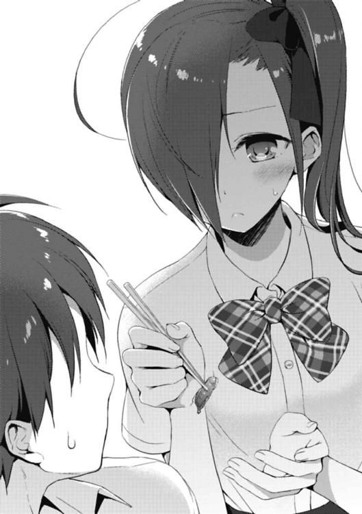
とはいえ、虫なわけだが。わけだが、わけだが、わけだが......。
「虫だ......」
「中々見せつけてくれるな、葉介」
「うっせーよバカ......」
やり切った表情の華凪と照れで身体が火照って仕方がない俺を交互に見回しながら、冥が揶揄する。その口調はあまりにもイラつくと言わざるを得ない。
だってコイツ、スゲェニヤニヤしてやがるんだぜ！ ここは気の利いた返しの一つでもして、憂さを晴らしてやりたいのだが──
「......あーん」
と、ここで俺は斜向かいに座る花菱の様子が微妙におかしいことに気付いた。
俺が奇妙に感じたのは、花菱の視線の動きだ。
「自分の手元→冥→愛内兄妹」という順番で、花菱は何かを言いたそうにしていたのである。当然、俺はコレにピンと来る──もしかして花菱の奴、俺達のやり取りを見て、自分も冥と似たようなことをやりたくなったのではないだろうか？
だとしたら、これは好都合だ。冥にも俺と同じ辱めを与えることが出来るのだから！
「おい、冥。妹が何か言いたそうにしてるぜ」
「ふぇっ!? ちょ、あ、愛内君!? い、いきなり何を言い出してるの!?」
「む......俺に用だと？ どういうことだ？」
「見りゃあ分かんだろ。花菱も『あーん』をやりたいってさ」
俺は込み上げる嘲笑を隠そうともせず、ウッキウキで目の前の双子を煽りに掛かった。
一方、花菱は大慌てで目を白黒させ、大いに狼狽した様子ではあったものの、
「っ......愛内君......そ、それは無茶振りというもの。今日のあたしの昼食では、そんなこと出来るわけがない......」
食べかけのカロリーブロックを見せつけながら答えた。
「あ、そうだ！ じゃあさ」
すると、ここで紅緒が得意げな表情で言った。「今度、カロンもお弁当を作ってみたらいいんじゃないかな？ 私もそんなに作る方じゃないけど、楽しいよ。お弁当作り」
「お弁当......あたしが......？」
花菱が眼を見開いた。紅緒はこれに何度も頷きながら、
「そうそう。それで作ったものを藤見川君に食べさせてあげればいいんだよ」
「なっ......委員長、まさか俺にも葉介のように公衆の面前で辱めを受けろとでも......!?」
「──やだ」
が、ここで紅緒達の問答をぶった切って花菱が元も子もない回答を投げつけたのだ。
つまり──明確な拒絶として。
「あたしはお弁当なんて作りたくない。だって、あたしは料理なんて出来ないもの。どうせ失敗するって分かってるのに、そんなの無駄過ぎる」
「メイにつくってあげれば、きっと喜ぶとおもいますよ。クッキーの時は何度もれんしゅうしてつくれるようになったじゃないですか！」
「それは、あの時で十分過ぎるほど懲りたということ。自分が絶望的に料理に向かないと悟ってしまった以上、無理に料理に拘る意味が見出せない。それにお兄ちゃんだって、そこまで積極的にあたしの料理を食べたがっているとは思えない」
冥の方を「そうでしょ？」とでも言いたげに花菱が見つめた。
「......」
尋ねられた冥はピクリと片眉を上げ、そして黙り込んだ。
微かな逡巡──それでも非常に険しい表情を顔面に刻みつつではあったが、冥は慎重な口振りで言った。
「そう、だな。食べろと言うなら食べるが、無理に作って貰おうとは思わないな......」
「ほら。紅緒、リリィ。お兄ちゃんもこう言ってる」
「ムム......！」
「うーん......確かに、私なんかは料理に拘ってるから色々やってるけど、カロンは別にそんなことないもんねぇ。事情が違うってのは、考えてなかったや......私、一人っ子だしなぁ。もしも男の兄弟とかがいたら、どうなってたんだろうなぁ」
納得したような、してないような曖昧な表情で紅緒が答える。
「──紅緒。それは、あたしもそう」
「へ？」
最後に、にこりともせずに、花菱が言った。
「お兄ちゃんの前で言うのもなんだけど、あたしは妹が何をすればいいのか、未だにサッパリ分からないから」
言ってから、花菱の首がギギギとまるで項垂れたかのように下を向いた。
花菱は緩慢な動作で手に持っていたデスソースの掛かった超激辛カロリーブロックを囓る。もしゃり、もしゃりと咀嚼する。表情は依然として、いつも通りの仏頂面のまま。
俺達は花菱の言葉の意味が分からなくて、何も答えてやることが出来ない。
こうして華凪を加えた俺達の昼食は、何とも言えない重い空気を纏って、予想外のところに着陸して終わったのだった。
◇ ◇ ◇ ◇ ◇ ◇
が、しかし──想像以上の早さでこの出来事を引きずって、新たな問題が離陸することになったわけで。
「お......」
入り口の扉に備え付けられたカウベルがチャリンと鳴り、僅かに顔を歪めながら俺の待ち人がようやく姿を見せた。
奴が顰めっ面を覗かせている理由は、まぁ色々あるだろうが、一つはこの店内の匂いが原因に違いないと思った。つまり「薬臭」ってわけだ。
古今東西、津々浦々の薬草、香辛料、茶葉、ハーブ類を常備する、薬草茶専門店「倫敦紅茶館」に初めて足を踏み入れた人間は、大体こういう表情をするらしい。店の外観から想像していた瀟洒な珈琲や紅茶の専門店というイメージとのギャップによって。
「おせーよ、冥。十二分も遅刻してんじゃねーか」
「悪い。時間を作って貰っておきながら......実は店に来る途中、少し迷っていた」
「ガラケーだからアレなんじゃねーの。スマホなら地図アプリに住所入力すりゃ迷いようがねーよ。いい加減、スマホに買い換えろって」
今の今まで弄っていたアンドロイド携帯を顔の辺りで誇示するように小さく振って、俺は最近一週間に一回は言っている台詞を口にする。
「近いうちに換えたいとは思っているのだがな」
冥も最近一週間に一回は言っている台詞を返す。バリバリの林檎ユーザーであり、各種デジタルデバイスをフル活用する妹と違い、兄は未だに古めかしい機種を使用していた。
ま、それはさておき。
時は──華凪を交えて昼食を取った日から数日後の週末。
実はその日、前々から俺は倫敦紅茶館に行く用事が入っていた。
『カナギが新しい学校で、ちゃんと馴染めてるか教えてくれませんか？』と斎藤オメガから一週間ほど前に頼まれていたからだった。
ところが昨日、新しい用件が加わったんだな、これが。
それが昨夜遅くに冥から届いたメールで『会って相談したいことがある。明日、都合のいい時間はあるか？』とか、そこには書いてあった。俺も『いいぜ。じゃあ明日の一時に商店街にある倫敦紅茶館って喫茶店に来い。前言った華凪の友達がやってる店だ』と書いて送り、冥から一分で『了解』とだけ記されたメールが返ってきて、晴れてスケジューリングが成立したってわけ。
と、そこで。
「いらっしゃいま──おっと？ 葉介先輩、その方がさっき言ってた花菱先輩のお兄さんですか？」
「おう、そうだ。冥、ちょっといいか。実は先に紹介しときたい相手がいる」
「む。ああ、店主で華凪さんの友人とかいう──なっ!?」
キッチンの方からホールへと出て来たオメガを見て、冥の表情が驚愕に染まった。
............まぁ、アレだ。
いったい何に驚いたかは、言うまでもないだろう。
もしオメガと初めて会った時、何も驚かない男がいたとしたら、そいつは確定的にホモかロリコンなので、友達付き合いに慎重にならなければいけないくらいだ。
「どーも。アタシ、斎藤オメガっていいます。花菱先輩によろしくお伝え頂ければ！」
「こ、これはご丁寧に......初めまして、藤見川冥です。こちらこそ妹のアルバイトの件では色々とご迷惑を......」
「あはは。全然気にしてないから大丈夫ですよ。いきなり無言でバックレたとかじゃないですし、元々花菱先輩はお試しってことでしたから、何の問題もない選択です」
ばるん、と揺れる──オメガの「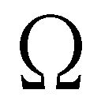クラス」とも言うべき爆乳が。
肩口で切り揃えた色合いの濃いセミロング、愛嬌のある笑顔と馴れ馴れしい敬語、そして何より男女問わず、見る者全ての視線を釘付けにする圧倒的なバストサイズ。
たとえメイド服越しであろうと、その圧倒的存在感に威圧されない男などいるわけがなかった。
「あれ。そういえば苗字は『藤見川』でいいんですか？ 花菱せんぱ......スイマセン、紛らわしいので呼び方変えます。ええと、カロン先輩とご兄妹なんですよね？ だったら同じ苗字で『花菱』になるんじゃないですか？」
「あー、とだな。冥と花菱はガチの双子なんだけど、結構前に離婚してて、でも親父達が今年に入ってから元サヤで再婚したっつーわけ。でも、いきなり苗字を変えると色々不便だからって、未だにそのままなんだよ。な？」
「ああ、スマン。説明させてしまって。そういう具合ですね、斎藤さん。うちは父方が『花菱』なので来年度になってから、こっちに統一することになっているんです」
「はー、なるほど。そういうわけだったんですか、」
俺達の言葉にオメガは深く頷いた。「てっきり、うちの家みたいに複雑な事情があるのかと愚推してしまうところでした。すぐにお水をお持ちいたしますね──神市、アンタまたクッダラない週刊誌なんか読んで！ 仕事しなさい、仕事！」
オメガがカウンター席で週刊誌を読んで怠けていた、自身の専属執事である神市さんを睨みつけ、発破を掛ける。神市さんが気怠げな様子で答えた。
「いやいや、お嬢......この手の週刊誌からですね、下らなさを取ったら台無しですよ。下らないと蔑まれるからこそ価値が生まれるんじゃないですか」
「いや、そんなこと聞いてないから。ほら、行きなさい！ もう！」
「ええ......そんなに怒らなくてもいいと思うんだけどなぁ......ああ、すまないね。騒がしくて。葉介君に......えーと、冥君？ ううん、少し変わった名前だねぇ。いや、うちのお嬢のが明らかにド直球で珍名だけ──」
「神市！ カナギの虫料理食べさせられたいの、アンタ!?」
「──二人とも、すぐにお水持って来るから待っててくれるかい！」
「「............」」
大きな背中を丸めて、飛ぶように神市さんがキッチンの方へと飛び込んで行った。
ちなみに神市さんは俺と同じで非常に虫が苦手らしい。
前回の長野の一件では、本来は後夜祭イベントの司会を担当していたはずなのに、会場に食用昆虫の山が運び込まれて来た時、仕事を放棄して逃走したくらいだ。
大の大人が虫に怯えてステージで震えているところを華凪にマイクをぐりぐりと突き付けられて、料理勝負開始の宣言をさせられていたのは「哀愁」の一言では語りきれない。
「で──冥、話ってなんだよ」
「ああ。今日は悪いな。時間を作って貰って」
そして、本題だ。冥は神市さんが超特急で持って来たお冷やで唇を湿らせながら、おもむろに言った。
「実は、カロンのことなんだが......」
「ほう」
ピンと来た。
──これはもしや、前回の逆パターンなのではないか、と。
前回とは、もちろん今年の五月に花菱が両親の再婚に当たって、冥と仲直りする方法を俺に相談して来た時のことだ。
けれど、これは意外なシチュエーションとも言える。基本的に他力本願がモットーな花菱と違って、冥はむしろ他人に頼るよりは頼られるタイプだ。
そんな冥が俺に花菱について相談......いったいどんな内容なのだ？
「──お前、カロンのことをどう思う？」
「......はぁ？」
「おやおや、これはもしや......？」
近くの席に陣取り、乳鉢をゴリゴリやりながら俺達の話を堂々と盗み聞きしていたオメガも興味深そうな態度を示した（ちなみに、さっきからオメガが何をやっているかというと、乳鉢で薬草茶に用いる様々な果実や根、樹皮などをすり潰して、メディカルハーブティーの準備をしているのである）。
実際、それはかなり予想外の質問だった。
どう思うってお前、漠然とし過ぎだろ、それ。
しかも、だぞ？
──兄貴が別の男に「うちの妹についてどう思う？」って訊くのって、相当意味深な発言だと思うんですけど、ボクは別に間違ってないですよねぇ......正直、こんな路線は勘弁して欲しいんだが......いいや、ここはスッゲー適当に答えてはぐらかそう。
それがいい。
「花菱のことをどう思うか、ね」
「そうだ。率直に頼む」
「まぁ、なんだ、個人的には......、」
カララ、とグラスの氷が溶けて、硝子が鳴ったような音を奏でる。俺はその音に誘われるようにグラスへと手を伸ばし、中の冷水を呻り、そして言った。
「──かなりの、ダメ人間だと思うね」
「......」
俺の回答に自然と冥が黙り込んだ。
一方、完全に茶化しモードに入っているオメガはニヤニヤしながら、
「えー。葉介先輩、スッゲェ空気読めてないですよ。ここは、もうちょっとラブい答え方しましょうよ。なんでカロン先輩のダメ出しとかしてるんですかー？ 藤見川先輩に怒られますよ。っていうか、もし、ここにいたのがうちの兄で、ダメ出しされたのがアタシとかだったら、大変なことになってると思いますね！ 既に葉介先輩の顔にはグラスの水がぶっ掛けられていて、神市に攻撃命令が出されていること間違いなしです！」
ビシッと持っていた乳棒を俺に突き付けながら言った。
俺はむしろ棒よりも今の動作によって揺れたオメガの胸元の方に視線が行ってしまっていたし、しかも極めて下らないダジャレまで思いつく始末だった。
カウンター席に戻って来た神市さんが「お嬢のお兄さん達って、これが冗談じゃないから困るんだよなぁ......」とぼやいていたのが、正直冷や汗ものだった。
俺だって、この回答が冥の期待に応えられているとは思えない。目の前で妹を馬鹿にされたら、普通の兄なら怒るだろうし、いい気はしないだろう。
そんなの──当たり前のことだ。
「やはり、葉介もそう思うか」
「......へ？」
ところが、だ。ここから話は意外な方向に転がり始める。
「そう。うちの妹は全く自慢にならないが、相当にハイレベルなダメ人間なのだ。少なくともオレはカロン以上にダメな人間を実際に見たことがない......！」
思わず俺とオメガは顔を見合わせた。
──サラッと認めやがったよ、このお兄ちゃん。
──認めやがりましたね、フッツーに。
言葉を介さないやり取りなので、向こうが実際何を思っているかは分からない。しかし一応は兄である俺と、妹であるオメガなので、それなりの合意は取れているはずだ。
嘆き。
それは、あまりにも切実な冥の訴えだった。
「少し長くなるが、聞いて貰えるか。葉介だけでなく、斎藤さんにもお願いしたい。オレは今、本当に悩んでいるんだ」
「まずうちの両親が六月に再婚して、十年ぶりにうちの家族が一緒の家で暮らすことになった、というのが話の始まりだ。そして今が九月だから、そろそろ今の生活も三ヶ月近くになる──結果、軋轢というか、擦れ違いだな。そういうモノが見えて来たわけだ」
十年ぶりの再婚......確かに、色々と大変そうだなと思う。
特に子供のことは頭が痛いのではないだろうか。冥と花菱が物心付いてから実際に兄妹として暮らして、どうなるか──見逃せない事柄のはずだ。
......実際、どうなってるんだ？
「なぁ、冥。早速話の腰を折って悪いんだけどよ。ちょっと気になることが出来たから質問させてくれ。今更だけどお前ら兄妹って、家だとどんな感じなわけ？」
「............どんな、とは」
冥が眼を細め、言葉を濁した。っと、いけねぇ。漠然とし過ぎたか？
「いや、そのまんまだよ。お互い家でどんな風に暮らしてんの、ってこと。例えば、うちの家だと俺と龍子姉さんとリリィと華凪がいるだろ？ うちの人間は自分の部屋で過ごす習慣があんまなくて、放っておくとリビングに皆集まって来るんだ。けど、皆して別に同じことやってるわけじゃなくて、大体リリィはテレビ見てて、華凪は勉強してて、姉さんはノーパソ弄ってて、俺はゲームやってる。で、なんか話があれば話す。なけりゃ特に話さねぇ。まぁでも華凪は久々に家へと戻って来たばかりだから、俺とか姉さんのことを色々と訊いて来る。あんま自分のことは話さねぇけどな。そんな感じだ」
「へぇー家庭的ですね。カナギがやってることが、寮で暮らしてる時と大体同じなのが何か面白いです。でもそれ、全然うちの家とは違いますね！」
と、ここでオメガが感心したように言った。
俺は若干苦笑しながら、
「......個人的には、斎藤家がどんな日々の暮らしをしてるかがスゲェ気になるな」
「ふへへ、気になるでしょう？ でも、うちってアレなんですよ。一族の人間が無駄に多いのもあるんですけど、年齢的な理由で大体独立しちゃってるんで都合が合わないんですよね。アタシだって山女の寮にいて本家──斎藤家の本宅が一応、アタシの実家になるんですけど、そっちに帰るのって週末と長期休暇の時だけですし。リビングに集まって団欒するなんて全然。皆、自室に籠もってばかりです」
でも、とオメガが言葉を切った。
「その代わり、我が家には絶対的なルールがありまして、それが『朝食』なんです。本家に帰って来ている人間はそれ以外の時間は何をしていてもいいんですが、朝食の時間に家にいる場合、何があっても顔を出さないといけないって決まってるんです！」
「何だそれ。おもしれぇな。え、つーか寝坊とかしたらどうなんの？」
「寝坊なんて出来ませんよ！ 今の当主......つまり大伯父様が食堂にやって来た時、本家に誰が滞在しているか必ずチェックして、その場にいなかったら大伯父様本人が起こしに行って大目玉です。そうならないように何が何でも起きて朝食に行くんです！」
「ほー」
なんというか、とても新鮮な話題だと思った。
実際、こんな機会でもなければ他の家庭にどんな習慣や独自ルールが存在していて、どんな風に空いた時間を過ごしているかなんて話さないはずだ。
「生憎だが、うちはそういうものはないな」
ここで、ハッキリとした口調で、冥が言った。
「というか正直、よく分からん。今の家族構成で暮らすようになってまだ三ヶ月だし、遡ってもオレが幼稚園の頃にならないと、この構成にはならないからな」
「ふぅん。つっても花菱が普段家で何してるかぐらい知ってんだろ？」
「知らん。家人といえど、プライベートには干渉しないようにしている」
「なっ......」まさかの展開だ。ここで、首を横に振るだと......？
俺は半ば啞然としながら、
「......マジか」
「ああ。というか、いきなり脱線し過ぎだ。元は一緒に暮らすようになって見えて来たカロンの問題点についての話だろう？ 話を戻すぞ」
険の籠もった視線で冥が俺のことを咎めた。
脱線......そう、なるのか？ 俺としては、かなり必要なことを訊いたつもりだったんだけど......まぁ、いいや。ひとまずは、冥の話を聞いてみよう。
「これは正直、二人もドン引きするかもしれないんだが......、」
冥が重苦しい口調で言った。
「カロンは、どうもうちの父と二人で暮らしていた頃、家事や身の回りの世話を一つ残らず父にやらせていたらしいんだ！ 今年十七になる娘が、だぞ!?」
「あー......？」
ん。それって。
「そういえば聞いたことあんな、それ」
「な──!?」
「なんだっけ。洗濯物一枚すら畳んだことないとか」
瞬間、冥が眼を見開いた。
「な、何故、葉介がソレを知って......!?」
「いや、何故って言われても......五月に花菱の相談受けてた時、本人から真顔で言われたんだけど......。えーと、なんつってたかな。確か『あたしを養うことがお父さんの生きがいだから、あたしは家のことは何もやらないって決めてる。誰にも文句は言わせない』とか、そんな感じだったような......？」
「ッ──！」
冥が絶句した。
これは「花菱カロンお姫さま説」を明確に裏付ける重要な証言だ。
父親と長年二人きりで暮らしていたにも拘わらず、花菱は家事スキルを一切所持していない。そこには「自分は何もせず、父親の世話になりまくること」こそが娘を溺愛する父親に対する最大の親孝行になる、という理論が根底にあるらしいのだ。
......まぁ、俺みたいに両親が揃っていて、特に母親が家事を全部やってくれる家庭に育った人間がどうこう言うのはどうかとも思うんだけどさ。大体、俺だって人のこと言えんし。家事の分担とかもされて、最近は少しはマシになった気もするけど......。
とはいえ、あれだ。
少なくとも父子家庭に育った一人娘が父親をサポートする意志を一切見せないどころか、むしろ全部世話をやらせている──っつーのは結構衝撃的だったね、当時。
だってドラマとかで、そういう家庭が出て来たら子供達はまず間違いなく進んで家事をやってるイメージがあったし。というか──ああ、だから冥はこんな驚いてんのか？
「お前は家事全部やってたんだよな、確か」
「......ああ、オレはな。うちの母はパティシエだ。アレは飲食系の職人だから、とにかく体力的にハードな仕事なんだ。仕込みの関係で、朝も異様に早いしな。家事ぐらいオレがやらないと育ててくれている母に申し訳ない」
そういうことなのだ。
こう見えてこの男は家事スキルに関しては抜群で、母親のために家の仕事は出来るだけ自分でこなすようにして来たという逸話がある。何とも立派な奴なのだ。
こうしてみると、何とも対照的な兄妹である。
「なるほどなぁ......つーか、お前、その辺りって今はどうなってんだよ。悪いと思って全然訊いてなかったけど、お前ん家って、家の仕事とかメシとかどういう仕組みになってんの？ 親は共働きだろうから、さすがにそこはお前と花菱が──」
そこまで言い掛けて、口を噤む。
『二人で分担してやってんのか？』
と俺は尋ねようとしたのだ。
けれど、わざわざ訊くまでもないではないか。俺は途中で台詞を引っ込めた。
今、冥は花菱のことを何と言っていた？ 相当にハイレベルなダメ人間──それが冥の花菱に対する評価じゃなかったのか？
答えは、決まっているはずだ。
「............まぁ、オレがやっているわけだ」
「やっぱかよ......」
そんなことだろうと思った。
「ちなみに、父も家事の負担がなくなっただけで、カロンへの甘やかしは継続中だぞ。欲しいモノは何でも買い与えてしまうし、小遣いも渡しまくっている。だから、ついにうちの母親がブチギレた。夏休みの最終日だったな、確か」
「キレたって......花菱に、か？」
「違う、」冥が首を横に振った。「──カロンと父に、だ」
「えっ、親父さんもかよ!?」
「ああ」
冥が虚ろな眼差しで告げた。
「カロンと父は母に並んで正座させられて、二時間ずっと説教されていたのだ......。しかも母が言うには、父がカロンをこれ以上甘やかして、カロン自身もグータラし続けるようなら、また離婚せざるを得ない、と............」
「......うわぁ」
「しかも、これにカロンが『じゃあ今度からお父さんじゃなくて、お兄ちゃんに甘やかしてもらう！』などと売り言葉に買い言葉で反論したものだから、これにオレまで巻き込まれてもう後は大変なことになったさ。最終的にはオレも母から『カロンを甘やかすな』と命令されてしまった」
「......」
娘を甘やかし過ぎたあまり母親に説教される父親、それだけ怒られても全然家族に甘えることを止めない娘、一人頭を悩ませる息子。
ひどい......なんて困った家庭なのだ......。
「別にオレはカロンに家事をやって欲しい、というわけではないんだ。大体、それが願いだとしたら、こうして他人に相談するまでもない。本人に伝えるのが一番だからな。オレが相談したいのは、もっと大局的なことなんだ」
冥が言葉を切った。そして。
「これからのこと、カロンの──将来のことさ」
沈痛な表情で言った。
将来。
そう来るか、という感じだった。デカいし、重い言葉だった。俺は若干、空気が重くなったことを意識しながら、慎重に言葉を選んだ上で尋ねる。
「つまり......なんだ、進路とか？ そういうことか？」
「それもあるな。後は、自立だな。親やオレがいなくても、生きていけるようになって欲しいんだ。今のままでは、あまりにも不安が大き過ぎると思わないか？」
「そりゃあ、大いに思うけどよ」
「だろう。だから、意見が欲しかったのさ。何でもいい。オレはどうすればいいのか、思ったことがあったら何か教えてくれないか？」
冥が持って来た相談事というのは、想像以上に難解な代物だった。
というか、ぶっちゃけ俺の手に負えるような問題じゃねぇと思うんだけどさ。そりゃあ紛れもなく俺は妹持ちの兄貴で、冥と似たような立場ではあるわけだけど──
「うーん。難しいな。逆に、うちは妹の方が出来がいいからなぁ」
「ああ、そういえば......」
「進路もバッチリ決まってて、この前受けた模試でもＡ判定出たどころか全国の成績上位者にフツーに載ってたって聞いたぜ。それに、伊達に長野で三年もお嬢様に囲まれて寮暮らししてねぇよ。本人はコミュ障だとか言うけど、単に口下手ってだけさ。先週だって一人で長野戻って、知り合いの農家の人達と一緒にイナゴ狩りして来たんだぜ？ 中々出来ることじゃねぇって。自立とか言い出したら、俺の方が断然アレだ」
言いながら思い浮かんだのは、七月末にあった保護者面談についてだ。
危惧していた通り、姉さんは普段の衣装を五倍はパワーアップさせたようなコテコテのゴスロリ貴婦人みたいな格好で面談に現れ、成績こそは結構上位なのだが肝心の具体的な進路が全く決まっていない俺に面談時間フルの三十分間文句を言い倒し、更に帰宅の道中から帰った後まで雷を落とし続けたのだ。
少なくとも、華凪の現実的な進路問題について、俺が口出しをする資格は一ミリも存在しない。
と、ここでしばらく黙っていたオメガが、
「そうですねぇ。カナギと葉介先輩は、結構な頻度で本当に血が繫がってるのかと疑問に思う程度には出来が違いますね。というか、葉介先輩は龍子お姉様と比べた時も似たようなこと言われるんじゃないですか、あはは」
などと、ヘラッヘラ笑いながら、大層失礼なことを言った。つまり、愛内家の三姉弟では長女と次女に比べて、長男の俺が圧倒的に不出来と言いたいらしい。
ふざけんな！ むしろ、そんなん重々承知だっつーの！
............はぁ。
「とはいえ、なんといいますか、」
まるで裏と表を切り替えたかのようにオメガはフッ──と真剣な表情を浮かべる。「藤見川先輩の話は正直アタシも耳が痛いですね。アタシなんてコレがいるくらいですし」
「お嬢......仮にも人を『コレ』呼ばわりするのはどうかと思いますよ」
「そういう主張は主人に文句言われないくらい仕事するようになってから言いなさい」
神市さんの存在を指し示しながら、肩を竦めた。
なるほど。そりゃあオメガだって家事をまともにやったことはないに違いない。
なにしろ「ザ・家事従業者」の象徴とも言うべき専属執事に本当に小さな頃から身の回りのことを世話して貰っているのだから（今でさえこんなダラけた様子の神市さんが、実際しっかりとオメガの世話をしていたのかは甚だ疑問ではあるのだが）。
ただ、オメガはそういう家に生まれて、そういう家なりの苦労をして来たに違いないことは俺達だって分かっているわけで。
「しかも藤見川先輩の相談って、要は『求：兄妹への甘えをぶった切る方法』ってことですよね？ コレはアタシも無理です。むしろアタシが聞きたいくらいです」
「っと、斎藤さんにもご兄弟が......？」
「ええ。半分だけ血の繫がっている兄が十二人ほど」
「............」
義妹エンドには無縁だが、腹違いの妹エンドには縁のあるオメガが真顔──いや、徹底的な無表情で続ける。
「ちなみに大体が成人してるどころか、妻子持ちも多いんですが全員未だにシスコンです。今一番気になるのは、妹の誕生日プレゼントに株券とか土地の権利書とか送って来るのをやめさせる方法ですね」
「............立場のある人は、立場のある人なりの悩みがあるというわけですか」
「そんな大層なものでもないんですけどねー」
あはは、とオメガが相変わらずの軽い笑い声を漏らす。
店の空気は無駄に重くなっていた。
無責任にブラックなことを言っては、適当に自分だけ笑って流してなかったことにしてしまうのはオメガの非常に困った癖である。
「......結局、自分で考えるしかないということか？」
ぽつり、と冥が言った。
おそらく深く考えた末で俺達に相談を持ちかけたはずなのに、それが微塵も役に立たなかったことに落胆しているに違いない。完全に相手が悪かったとしか言いようがない。
──花菱の冥に対する甘えを何とかして、独り立ちして貰うこと。
やはり、考えれば考えるほど無理な議題にしか思えない。
あのニートなお姫さまが、どんなことがあれば現在の怠惰でダメダメな生活態度を改めるというのだろう。
「一度、カロン先輩から距離を取ってみる──ってのはどうですか？ ベタですけども」
ここでオメガが提案した。
冥は落ち気味だった視線をスウッと引き戻し、眉を顰めて尋ね返す。
「距離を？」
「はい。離れてみて、初めて分かることがあるとかよく言うじゃないですか。もしくはライオンが我が子を崖から突き落とす的な？ 手を貸さなければ、どうしても色々なことを一人でやる必要が出て来るんじゃないかな、と」
「なるほど。一理ありますね」冥が頷いた。
「あーでも、難しいかなぁ。一緒に暮らしてて、それどころか学校のクラスも一緒なんですよね。物理的に離れようがないですよね」
「......いいえ、」冥が首を横に振る。「不可能なわけではない、と思います。確かに接触をゼロにするとなると難しいが、控える程度なら十分に可能ではないかと」
物理的に距離を取る、ねぇ。
しかも、あの花菱から。
ふむ。
ふむふむ。
......うーん？
「では、しばらく試しにそうしてみようと思います」
「わっ、まさかの採用ですか？ うわー、責任感じちゃうなぁ。そんなに深く考えて言ったわけじゃないんですけどー」
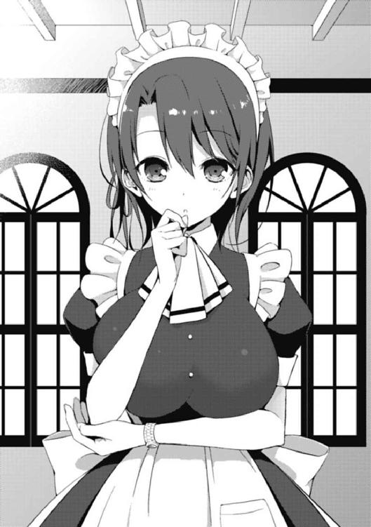
「お嬢が大して考えず、思ったことをバンバン口にするのはいつものことですしね」
「神市、黙りなさい」
三人の会話は、もう完全に「終わり」のムードを醸し出していた。
今回の相談の結論は、マジでこれになるらしい。いや、不満があるって言うわけじゃねぇぜ。ただ、ちょっと引っ掛かるところもあるってだけで。
俺視点で一番気になっているのは──未だに「冥・花菱兄妹の関係性」がイマイチ見えて来ないってことなんだよな。
花菱がお兄ちゃんのことを大好きなのは分かる。冥だって、妹のことを十分に気に掛けている。だが、そもそもの話、この兄妹はお互いに相手と普段どういう感じで接しているのだろう？ どういう話をしているのだろうか？
俺の記憶には、花菱が眼をキラキラさせながら冥の凄さを語り、一方で大体近くにいる俺を貶しまくる──そういう光景ばかりがある。学校だと大体のシチュエーションでそういう構図になるのだ。蔑まれる方は堪ったもんじゃねぇけどな。
問題は、俺がいない時──つまり、コイツらだけが自宅にいる時だ。
そんな時、この二人はどんな会話をするのだろう。
俺が知りたかったのは、この部分だった。二人の両親が共に仕事をしている以上、家の中に子供二人だけしかいない時間は結構多いはずだ。しかし、冥はこの問い掛けに「知らない」と答えた。知らない？ 本当に？ どうして？
──この一件で、俺はまだ重大な何かを見落としているような気がするのだけども。
そして具体的に花菱達の何が変わったかというと、それは随分と地味な──けれど、意外と分からなくもない変化だったように思った。
「兄さん......急いでください......遅刻してしまいます......」
「大丈夫だって、華凪。このペースならまだ余裕だよ」
「そう言われても......周りに全然他の人がいなくて不安になるんですが......」
数日後の早朝。
俺と華凪は微妙に遅刻しそうになりながら、学校への道を急いでいた。
初日こそリリィを交えて三人で学校に行った俺達だったが、それ以降は各自の生活リズムに合わせた登校スタイルに次第と落ち着くようになった。リリィは早めに起きて紅緒と学校に向かうし、普通より若干遅いぐらいの時間に華凪が起床し、遅刻ギリギリラインになってようやく目覚める俺を待って、一緒に学校に行くという形だ。
ちなみに今日はここ数日の平均からすると、少し時間的にはピンチである。
だから、だろうか。
いつもは俺の半歩後ろを嬉しそうに付いて来る華凪が、今日に限って俺とほぼ横並びの位置、いや、むしろ少し前を歩いているくらいだった。
焦っている、というわけだ。
実際、俺と華凪の歩幅にはほとんど差がないため、華凪がセカセカと足を進めれば「まだ多分、間に合うから大丈夫」と高をくくってダラダラ歩いている俺が追い抜かれてしまうのも道理である。それが同時に、本当に華凪は大きくなったんだなと実感出来て、俺的には結構嬉しかったりするわけだが......本人に言うと絶対嫌がるから言わんけども。
ただ、周囲に他の生徒がいないのも事実。
俺達の家から学校に向かう通学路は、盛況な時間は学生でごった返すのだが、早くても遅くても、その時間と僅かでもズレると随分閑散としてしまう傾向がある。
なので、人がいないことは大して不思議でもないわけだが──遅刻とは無縁な寮生活が長かった華凪にとって、この静まり返った通学路は妙に不気味に見えるらしかった。
ただし、もちろん例外はあるわけで。
「ん......おい、華凪。また花菱がいるぜ」
「カロンちゃん......？ あ、本当ですね......今日はボクらの方が後ろです......」
俺が指し示したのは、数十メートル先──そこでヘロヘロになりながら一人で歩いている花菱の後ろ姿だった。どうやら今日も遅刻しそうになって、家からこの辺りまで走って来たらしい。
これがつまり、その「例外」という奴だった。面白いことに、ここのところ毎日のように俺達兄妹は花菱が登校する場面を目撃しているのだ。
始業式の日に花菱と遭遇した時は特に何も感じなかったのだが、ここ数日、何度も彼女の姿を朝見かけている内に、俺はとある疑問を抱くようになった。
──そういえば一学期の間は、花菱と朝の時間に通学路で出くわすことなんて、ほとんどなかったんじゃないか、と。
「そういえばカロンちゃんは、お兄さんと一緒に登校しないのでしょうか」
「あー......言われてみれば、どうなんだ......？」
華凪に訊かれて、はたと俺は首を捻った。
そもそも俺があの双子の登校時間にそこまで意識を割り振っているわけもなく。
ただ、少なくとも前から揃って学校に来ていたわけではないようには思えた。
「......待てよ。そういや、あいつらのお袋さんがキレて、花菱に雷落としたのって夏休みの最終日だっけ」
ここで、俺はハッと思い出した。そうなると、一つの仮説が生まれて来るのだ。
その日を境に、花菱は家族に朝起こして貰えなくなってしまい、自分で起きなければいけなくなったのではないか。だから、どうしても寝坊してしまい、こうして登校時間が朝ギリギリになっているのではないか──という感じに。
実際、花菱が頻繁に遅刻寸前に登校するようになったのは倫敦紅茶館での一件以降だ。
おそらく今までは朝、冥が花菱に軽く声を掛けるくらいのことはあったのだろうが、それをするのを止めたとすれば──ここ最近や始業式の日にやらかした時のような無様を晒してしまうのも無理はないだろう。
「なるほどなぁ。そういうことか」
「兄さん、一人で納得してないでください......意味がわかりません......」
「っと──悪い、悪い。けど、冥と花菱が揃って学校に来ない理由は......まぁ一学期の頃からそうだったような気がするし、何かあるんだろう。多分」
「そうなんですか。同じ家で暮らしていても起きる時間はまちまちですし、その辺りは難しいのかもしれませんね......あ、そうだ......兄さん......詳しくは今日帰ってからでいいんですが、ご相談したいことが......その、文化祭について」
華凪なりに花菱の話題に関しては納得したらしい。ここで華凪は話題を切り替えて、来週に控えた文化祭の事柄に触れた。
もうそんな時期なわけだ。とはいえ一般的には学校行事の花形のように扱われることの多い文化祭も、残念ながら我が木々津高校においては、大半の生徒に面倒臭がられる残念極まりない行事として認識されているわけだが。
「クラスの子に聞いたんですが......伝統的にこっちの学校の文化祭は、あまり『誰かと一緒に回る』ということをしないというのは、本当なのですか......？」
「ああ、マジマジ。だって、ぶっちゃけ楽しい出し物がほとんどねぇんだよ。だから、重要なのは『終わりまで、どこで時間を潰すか』ってことさ」
「そ、そうなんですか。ありがとうございます......」
華凪が少しガッカリした様子で視線を下げた。
これでは帰宅してから改めて話題に出す意味もない、という感じだろうか。もしかしたらの話だが「兄と文化祭を回りたい」的なことを考えていたのかもしれない。
ただ、華凪には悪いが、それはあまりオススメしない......山茶花女学院の豪勢で気合いの入った文化祭と違い、本当にうちの文化祭──「木々津祭」には大して見るモノなんて存在しないのだ。逆に雰囲気を悪くしてしまう可能性の方がずっと高い。
しかも、その事実を、大半の生徒は知っている。クラスの子から話を聞いたということは、おそらくその子も部活の先輩か何かから忠告されたのだろう。『うちの文化祭とかマジクソだし、期待しない方がいいよ』みたいに。
だから、うちの文化祭で、そんな誰かと楽しみたいなんて考えるのは、余程追い詰められた事情のある奴に限られるのではないかと思う。
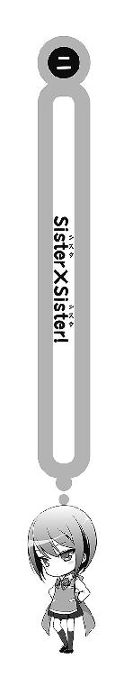
そして、文化祭当日。
「ふーむ......どうすっかな」
「愛内、また長考かよ。さっさと切れよバカ」
「少しぐらい、良いじゃねぇか。今大事なとこなんだよ」
「愛内は一局に一回は長々考え込むよなぁ」
「ンなことねぇだろ......二局に一回ぐらいじゃねぇの」
「いーや、毎度だね。でも、そういう時に限って振り込んでくれるから、こっちとしてはありがたくもあるけどな」
「うっせーボケ──っしゃあ、決めた！ 立直だ！ 行くぜ、死に晒せ！」
「ああ、それロン。えーと、混一ドラ二で満貫」
「はぁあああああああああっ!?」
場所はグラウンド脇に設置された男子部室棟、その男子テニス部、部室。
そこでは四人の人間が正方形の特別な机──いや「卓」を囲んでいた。この「卓」というのは、とある特殊な遊戯の専門用語である。では、それは何か？
言うまでもない──「麻雀」だ。
しかし、ネットや携帯ゲーム機でのプレイと異なり、学生が実際に卓を囲み、牌を握って麻雀で遊ぶには一定のハードルが存在する。
まさか高校生が雀荘に出入りするわけにもいかないし、自宅でやる場合は面子を集めるのも一苦労することが多い。とはいえ、昨今の「若者の麻雀離れ」が叫ばれる時代であっても、やはり男子学生の間での麻雀コミュニケーションが一定の人気を保っているのもまた事実だった。
そんな中『ルールは知っているし（※ただし点数計算は出来ない）、ゲームとかはやるけど、実際に牌を打ったことはない』という層のため、我が校には何十年も前から受け継がれてきた隠れた伝統行事が存在していたのである。それがつまり──文化祭の期間中に男子部室棟を借り切って行われる「木々津高校麻雀大会」なわけで。
「ヤベェ、飛ぶ......！」
それほど広くないテニス部の部室で、現在行われているゲーム数は二。机を四つくっつけて、その上に麻雀用のプレイマットを敷く。これで簡易的な麻雀卓の完成だ。
室内は参加者の他にルールにそこまで詳しくない未経験者や試合のない参加者が観戦しているため、非常に騒がしかった。
ちなみに、この麻雀大会は未だに年々規模を広げており、三学年合計した参加者が既に三桁を突破しそうという大盛況っぷりだ。これだけの規模ならば正式に文化祭のイベントにしてしまっても良さそうなものだが、さすがにそこはギャンブル的なイメージの強いゲームだ。認可が下りるわけもない。
もちろん無認可でやっている現在も金銭を賭けることは禁止されている。学生が学校で賭け麻雀をやってるなんてバレたら、停学で済めば上々、下手をしたら新聞沙汰にすらなりかねない。そのため、この点だけは学生の中で徹底されていた。
そして、俺の調子はというと──
「愛内、今年は初戦敗退待ったなしだな」
「去年良いところまで行ったってドヤ顔してたけど、ただの運だしな、アレは」
「このクソ野郎共......見てろ、吠え面かかせてやる」
牌を搔き混ぜながら、俺は奥歯を嚙み締めた。
その日、俺の成績は散々だった。
所詮、運だ何だと言われているが、決して俺が雑魚というわけではないのだ。俺は去年の大会においては、中々格別な雀力を発揮し、最終卓......決勝戦まで残ったのだから。
今回、ボコボコにされているのは、きっと流れが悪いせいだ。何かキッカケがあれば、俺にもまだチャンスは残っているはずで──！
「つーかさ、愛内。お前聞いてるか？ 藤見川のこと」
と、不意に対面に座っていた友人が今回の大会において、地味に話題になっている人物について触れた。俺は小さく頷いた。
「今回、冥が急遽、大会ドタキャンしたせいで面子集めに超苦労したって話か？」
「そうそれ。どうなってんだよ」向こうも話に乗って来る。
「どうなってるも、こうなってるもねーよ。急にいなくなっちまった。携帯も繫がんねーし。俺が訊きたいくらいだ」
「なんか思い当たる節はないのかよ」
「そりゃあ、まぁ......なくはないけど」
完全に想像だが──やはり妹問題が絡んでいるような気が、しなくもないのだ。
本来は冥もこの麻雀大会に参加する予定だったわけだが、何だかよく分からないが、冥は文化祭の開会式後、姿を消した。
──花菱と距離を取ってみること。
もちろん、コレは花菱の自立を促すことが目的なのだが、問題は露骨に相手を遠ざけたり、無視したりすると単に「嫌いになったから」と誤解される恐れがある。
ならば、下手に接触を持たない方が良い場合も多いと思うのだ。
特に、どこかに遊びに行こうと誘われて断るくらいならば、むしろ──誘われないように忽然と姿を消すのが一番良い。
「俺の考えだと、多分、アイツの妹が一枚嚙んでると思うんだよな」
「妹......えーと、花菱って子だっけ？ そういや藤見川の家って再婚したんだよな」
「そうそう。元々、離れて暮らしてた双子の妹」
「へー」
ちなみに、今麻雀卓を囲んでいるのは俺と冥も含めて三人とも去年同じクラスだった連中だ。花菱とは一年の時はクラスが違うため、他の三人は直接の面識はない。
つまり、コイツらは事情を全く知らないわけで、どうして冥の逃亡に花菱が関係しているかがサッパリ分からないことになる。
結果──三人は好き勝手に様々な可能性を語り始めた。
「にしても、なんで藤見川はいなくなったのかね。自分の妹の何が悪いんだ？」
「見た目が悪いとかじゃねーの。並んで歩きたくないとか」
「いや、それは違うと思う。花菱って子、メチャクチャ可愛いもん」
「ほう。どんくらい？」
「多分、香神さんと同じくらい」
「マジかよ！ 藤見川の妹なのに!?」
「ああ、変な話だろ」
「いやーでも、妹だけ可愛いってのは別によくあることじゃん。愛内の妹だって兄貴に全然似なくて良かったねって感じで可愛いし」
卓を囲んでいた人間全員が去年同じクラスだったということもあって、同じく一緒のクラスだった紅緒が引き合いに出されるのは分からなくもないのだが、しっかりとコイツら華凪のことまで知っている辺りに俺は少し驚いた。
存在だけでなく、外見まで既に把握済みとは......やはり、相当目立つ体格とルックスだけあって、華凪の噂は二年にまで広がっているらしい。
それにしても、ナチュラルに兄貴達を馬鹿にするのを止めてくれませんかね......。
「──で、結局なんでなわけさ、愛内」
「話してたら、余計に理由が分からなくなったんだけど」
「妹ちゃん、しっかり可愛いならどうして藤見川はいなくなるんだよ」
三人が口々に尋ねる。
やはり、冥の考えていることは簡単に理解しにくい。
特に花菱が相当にアレなダメ人間であることを知らない連中に事情を説明するのは一苦労だ。
そんな──いったい、どこから話せばいいのやらと俺がため息を吐いた時だった。
『....................................』
中を覗かれないようにと閉め切っていた部室の扉が、荒々しい音と共に開かれ、異様な風貌の来訪者が部屋を訪れたのは。
「え......」
──その人物は、いつの間にか部室の入り口の前に立っていた。
中にいた男達は、誰が部室に入って来たのかと銘々が何気なく振り返り、視線を上げる。そして──その瞬間、誰もが揃ってギョッとした。
「な、なんだ、いきなり......!?」
「だ、誰だ、アンタッ......!?」
悲鳴にも似た声が上がる。けれど、現れた来訪者から返事はない。
徹底的な無言。そして沈黙を伴った圧力。
そこには──ネコがいた。ただし、ただのネコではない。
「着ぐるみ......？」
──テニス部の部室に現れたのは、等身大のネコの着ぐるみを身に纏った正体不明の誰かだったのである。
『....................................』
着ぐるみネコの無言の進撃に、ビビリ揃いの男子達は揃って悲鳴を上げた。
「お、おい！ 何か言えよ！ 何にも言わないのとか怖ぇんだけど！」
「ど......どこの部だよ、着ぐるみなんて用意してんの!?」
「うちの部室、狭いんだから入ってくるんじゃねぇって......！」
なにしろ来訪者が身に纏っていたのは正真の「ネコの着ぐるみ」だったのだから。
首から下はいったい何ネコをモデルにしたのか不明な紫色のふかふかボディ、フサフサした尻尾。頭部はまるで出来の悪いアニメキャラクターみたいに身体と大きさが釣り合っていないフルフェイスの被り物だ。ピンと耳は尖っていて、瞳は泥水をスープにでもしたかのように濁り切っている。
──不気味な面立ちのネコ。
無垢であることが重要なマスコットが、こんな外見をしているのが最悪だった。
ホラー映画に出て来る赤ちゃんが大体怖いのも似た理屈だし、動物の被り物を参加者が身に付けさせられて殺し合いを強要されるスリラー漫画なんてのもある。
もっぱら「ご当地キャラ」が人気を集める昨今だが、このネコぐるみが街をノソノソと闊歩していたら、お母さんと一緒に買い物に来た小学生児童を泣かせまくり、市民のリコールにあってマスコットの座を剝奪されることは確実だろう。
色はキモいし、微塵の可愛さも感じさせない死んだ魚のような目をしていることも紛れもないウィークポイントだった。俺はそのあまりに異様な存在の登場に思わず、
「これ、中には誰が入ってんだ......？」
『....................................』
返事がない。
ただの人形ではないはずなのだけど。
等身大の着ぐるみなのだから、当然その中には人間が入っているに決まっている。
だというのに、こちらの呼びかけに返事もせず、いきなり部室の扉を開けて、突っ立っているだけ──正直、相当に気味が悪いと言わざるを得ない。
『....................................』
おもむろに左に一回、右に一回──潜望鏡のように大きな頭部を動かし、着ぐるみネコが部屋の様子を確認した。
見られる側の俺達は揃って息を吞む。
──ピタリ。
着ぐるみネコの視線が「とある場所」で停止する。
とんでもないことだと思った。見間違えかと思った。そう思いたかった。
けれどバッチリ視線が交わってしまっているのだから──その事実を偽ることは難しいのではないだろうか。
「......なんか、スゲェ見られてる気がすんだけど」
「いや、見られてると思うぞ」
「なにしたんだよ、愛内」
「どうせネコを虐めたりしたんだろ。何やってんだよお前」
口々に俺の非を詰る友人連中。だが、ネコに恨みを買う理由など思い当たるわけもなく、
「ンなことしねぇよ。つーかネコを虐めたら、後になってネコの着ぐるみ着た変な奴が仕返しに来るって意味分からんわ」
ただのホラーじゃねーか。いや、目の前にいるネコの造形がファンシーより明らかにホラー寄りであることは紛れもない事実なのだが──
『....................................』
ぐいっと。
「えっ、ちょ、おいっ!? いきなり何を......！」
『ちょっと来て。暇でしょ』
──くぐもった囁きが、耳元で。
なんと、ネコの着ぐるみがいきなり俺の手首を引っ摑み、力強い足取りでもって部室の外へと引っ張り出そうとしたのだ。
「お、おい！ お前ら！ 助け──」
「愛内が途中退場で飛びってことでいいよな」
「だろ。どうせ最下位確定だったし。うん」
「オレ達はなにも見なかった」
見事なまでに意見の一致が取れていた──「生贄」という対処法で。
着ぐるみという無駄に祭りっぽい存在の乱入を受けて騒然となった男達は、ネコぐるみが目を付けた一人の人間を生贄にし、何事も無かったかのように麻雀に戻ることをその場の空気で決定したらしかった。
つまり、俺は完膚なきまでに──見捨てられた。
「こ、こいつら......お、覚えてろよ、テメェら!?」
『早く来て』
結局、こんな時だけ、無駄に力強い腕に引っ張られながら、俺はテニス部の部室を後にしたのだった。もちろん、麻雀大会は──途中退場で不戦敗になってしまったわけだが。
ペットは飼い主に似ると言うのだから、人形や着ぐるみが作り主に似るのもおかしくはないはずだ。
「なぁ、おい」
『....................................』
「おいってば。そろそろ、その頭の奴取ってもいいんじゃねぇの」
『....................................』
俺達は文化祭の喧騒から少し離れた校門と校舎を繫ぐ通路の裏道辺りまで、やって来ていた。前を歩いていた紫色のネコの着ぐるみがゆっくりと振り返る。海面から頭を覗かせた潜望鏡のように、ネコは周囲の様子を窺った。俺は間髪容れずに、
「それ被ってると見づらいだろうけど、周りには俺ら以外には誰もいねぇよ」
と答える。
そして、俺の言葉を聞いて、ようやく向こうも警戒を解いてくれる気になったらしい。
彼女は被っていたフルフェイスネコを自分の頭から外し、降り注ぐ秋の日差しにじんわりと目を細めた。
「──愛内くんは、デリカシーがない」
ぽつり、と言葉が落ちる。
過剰な太陽の煌きと似合わない淡々とした彼女の声。けれど、その一言の中に彼女のパーソナリティが十分過ぎるほど集約されているように俺は感じた。
つまり──花菱カロンの。
彼女には、とにかく自分のことを優先してしまい、相手の事情をあまり深く考えないところがある。
人はそれを「自己中」と呼ぶし、俺はそれを皮肉って「お姫さま」と呼んだりする。正直、コイツのこういうところはどうなんだろうな、と常々思っているのだ。
「......顔出して一言目がそれかよ。ったく......まぁいいや」
手持ち無沙汰の指先でワイシャツの胸元のボタンを弄りつつ、言った。「色々と説明して貰おうじゃねぇか。それぐらいいいだろ──なぁ、花菱」
「............まぁ、構わないけど」
花菱がクールな視線で俺を射貫いた。
ただし、ぶっちゃけ全く格好は付かない。なにしろ花菱はバイク乗りが脱いだフルフェイスのヘルメットを胸に抱えるのと似た要領で着ぐるみネコの頭を持っているわけで、傍から見ればその格好は極めてファンシーである。
ただ噂通り、着ぐるみの中というのはかなり蒸し暑いらしく、花菱は汗でびっしょりになっていた。九月も終盤に差し掛かり、完全に季節は秋だ。俺なんかは未だに半袖シャツのままで、今日なんて少し肌寒いくらいだっつーのに......。
「──あたしは、お兄ちゃんを探していた」
花菱が言う。俺はため息を一つ溢し、頷きながら、
「やっぱそうかよ。けど、生憎と俺は知らねーぞ。文化祭の開会式が終わってから、俺も冥は見かけてない。どこに行ったのか、俺が知りたいくらいだ」
「そうなんだ......」
「つーか、探してたって何でだよ」
「一緒に文化祭を回ろうと思ってた」
「約束とかはしてたわけ？」
「してないけど。しなくても、お兄ちゃんは『いいよ』って言ってくれると思ったから」
「......ふむ」
段々と、俺も事情が飲み込めて来た。
事前に約束をせず、当日になっていきなり『一緒に文化祭を回ろう』と言い出しても兄は応えてくれるはずだと思ってる辺り、まさに花菱っぽいわけだが、そんな妹の性格を事前に予想して、誘われてしまう前に姿を消す冥も非常にそれっぽかった。
──しかし、俺には冥の行方以上に気になって仕方がない謎が存在したわけで。
「そもそもさぁ。なんでお前、着ぐるみとか着てるわけ？」
あまりにも率直な感想。
いくら冥と花菱の問題が切実な事象であったとしても、目の前にそんな格好で現れた人間がいて、解説を求めずにいられるほど俺は世界に興味を失ってはいない。
「これは、手芸部の文化祭用の衣装」
「手芸部？」
「そう。今年の手芸部は『着ぐるみ製作』がテーマ。いつもみたいに小物を展示しても面白みがないからって部長がいきなり言い出した」
「......手芸部の部長っつーと苺谷先輩だよな」
「そう。あのとても困った人」
「まぁあの人なら、何を言い出しても不思議じゃねぇわな......」
手芸部の部長は三年の苺谷皐月という先輩で、実は俺もこの人と多少の縁がある。
というか、まさに昨日開催された体育祭でその縁が発揮されたばかりだったりするわけだが......これは正直あまり思い出したくない出来事なので、触れないでおく。
昨日の体育祭において、体育委員の副委員長でもある苺谷さんが企画した「手作りパン食い競走」が伝説を残してしまったことなんて、今回の話には全く関係ないのだから。
花菱が続ける。
「そんなわけで今年の手芸部の目標は『部員一人一人が展示そのものになる』ことになったの。だから、あたし達は一人一つ自分用の着ぐるみを作って、文化祭の二日間、特別な場合を除いて──ずっと着ぐるみ姿で過ごさなければならない」
「......うわぁ」
きっついな、それ！
文化祭で羽目を外してコスプレをするのは珍しくない。
実際、七月に行った山茶花女学院の文化祭では生真面目な紅緒と華凪を除いて、他の皆は色々な衣装に着替えていた。龍子姉さんなんて二十四歳のくせに、恥ずかしげもなく髪の毛をツインテールにしてセーラー服を着ていたくらいだ。
祭りの雰囲気は、人を開放的にする。
だが同じコスプレとはいえ「着ぐるみ」は完全な別ジャンルである。
一言で表すならば、イロモノだ。
芸人やコメディアンではないのだ。決して女子部員しかいないはずの手芸部の人間が好んで着たい服ではないだろう。しかも二日間もだぜ！ 結構な罰ゲームだろ!?
「まぁ、そんなことはあたし的に別にどうでもいいのだけど」
「え──どうでもいいの......」
「全然、平気」
花菱が平然とした顔付きで言う。
そう、いうものか？
もうちょっと可愛らしくて女の子っぽい衣装ならともかく、遊園地のコメディアンが着ていそうなモフモフの着ぐるみだぜ。ふもっふ、とか鳴きそうな。
普通、嫌がりそうなもんだけど。
「だって、手芸部の出し物ってことは、紅緒とかも着てるんだろ」
「着てる」花菱が頷いた。
「平気そうだったのか？」
「物凄く恥ずかしがってた」
「......そりゃそうだ」
大体、手芸部はそこそこ人数のいる部活なのだから、部員達に抵抗がないのなら、校内で着ぐるみ軍団を見かける機会がもっとあってもいいはずだ。
けれど、俺にしてもテニス部の部室にいた連中にしても、最初に見かけた着ぐるみが花菱の変なネコだった。つまり、手芸部の面々はほとんど、校内を出歩いていないことになる。大方、部室か家庭科室にでも籠もっているに違いない。
──となってくると、紅緒はいったいどんな格好してんのかね？
気になるな。かなり。でも、そんなことを訊いていたら話が見事に脱線してしまうだろうから、ここは堪えるべきだ。
重要なのは、やはり。
「でも、あたしの格好よりも、お兄ちゃんの話をするべき。目先の事柄に惑わされてはいけない」
──冥に関する話題だろう。
常識的に考えて惑わされて然るべき格好をしている人間に、そんな指摘をドヤ顔でされたくないのだが、俺も花菱の意見には大いに賛成だった。
俺は「まぁ、そうだな」と首肯した。花菱も同じく一つ首を縦に振ると、真っ直ぐこちらの瞳を覗き込みながら、そうして本題へと足を踏み入れる。
「ここのところ、お兄ちゃんについて少し気になっていることがあったんだけど、それが校舎の中を探し回っているうちに段々大きくなって来たの。そうしたら丁度いい時に愛内君を見つけたものだから、ちょっと相談したいな、と思って」
「具体的に、気になることってのは？」
花菱が言った。
「最近、お兄ちゃんに避けられてる気がする」
「......なるほどな」
やはり、気付かないわけがない、ということだ。
冥が花菱の自立心を促すため、少し距離を取ってみる──と言い出してから二週間。かなり近い場所からその様子を眺めていた俺だが、じゃあ実際に冥の態度がどういう風に変わったかと言われると、かなり些細な変化だったに違いない。
無視するわけでもないし、辛く当たるわけでもない。若干、冥の方から花菱に話題を振る機会が減った気こそするが、元々、この双子は妹の方から積極的にアクションを起こして関係が成立している部分が強いので、少なくとも明確な変化を感じてはいなかった。
とはいえ、当事者は、その変化を見事に感じ取っていたらしい。
それに、今日の冥が繰り広げている逃亡劇は、これまでにない顕著な「拒絶」と言えなくもない。疑惑が確信に変わるのも無理はないようにも思える。
「愛内君は、なにか理由を知ってる？」
花菱が表情を歪ませ、縋るような目付きで訊いた。
困った。
まさしく板挟みという奴じゃねーか、これって。
俺は全てを知っている。冥の事情も、花菱の事情も、両方だ。だからこそ、ここで選択を誤ることは出来ないと思った。
考えろ。
あくまで重要なのは「花菱本人が自分で気付くこと」だ。
いつまでも兄に依存しっぱなしでは、花菱の将来は暗い。今のうちに何とかしなくてはならない──だからこそ、花菱に自立して貰いたいという冥の願いが根底にある。
だから、ここで事実を話してしまうわけにはいかない。
言葉にして『冥は花菱の自分に対する依存を切り離すために、あえて接触を避けているだけなんだ』と伝えることは簡単だ。そうすれば、花菱の今の表情──迷子の子猫のように、不安そうな顔付きはきっと、和らぐはずなのだ。
けれど、それは冥のやろうとしていることを真っ向から否定するものだ。
例えば数学の問題が解けなくて泣きそうになっている生徒を見かねて、一足飛びに答えを教えたとしよう。答えが分かれば、過程にも理解が及ぶ。問題の全体を理解出来たような気分になる──それはあくまで気分になる、だけだ。時に答えは──出来る限りの手を尽くして、自ら導き出さねばならない。
「もしかしたら、あたしはお兄ちゃんに嫌われてしまったということなのかな......」
ぼそりと花菱が呟く。
その不安は、冥が最も危惧していたモノのはずだ。
俺は咄嗟に、否定とも肯定とも付かぬ言葉を吐き出していた。
「い、いや、それは！」
「──違うの？」
瞬間、弾かれたような勢いで花菱が尋ねた。「つまり、やっぱり愛内君は何かを知っているということなの？」
「うっ......」
言えない。余計なことは。
かといって、ここで黙ってしまっては逆に花菱が宙ぶらりんになってしまう。
求められるものは、中間地点だ。
極端に冥の味方をするわけでも、花菱の味方をするわけでもない。花菱に明確な答えを与えるわけでもなく、その不安を晴らすことが出来たなら、あるいは。
......具体的にそんなんどうすりゃええねんっつー感じだけど。
ひとまず、ここは。
「いや──俺も詳しくは、知らねぇ」
「む......」
噓を、つく。
ただし、俺の中でそもそも答えが纏まっていないので、成り行きのまま話し始めてしまったのはどうしようもないことだ。かといって沈黙は最高にマズい。『はいそうです。知ってますよ』って肯定しているようなもんだからな。
となると......。
「ただ、花菱が冥に避けられてるってのは、何となく分かる気はする」
「愛内君もそう思うの？」
「ああ。今日のことを抜きにしても、前から思ってた。何か変だな、ってさ」
噓だけど。
冥から話を聞いた前と後で、全然違いが分からなかったわけだけど。
本人から事情を聞かされてなきゃ、間違いなくサッパリだったな......。
「......愛内君、意外と鋭い」
「へっ、俺を舐めんじゃねーよ」
我ながら調子いいよな、ホント。
「じゃあ、愛内君はどうしてあたしが避けられてると思う？」
「難しいこと訊くな、お前......」
正答は避ける。
避けられてるのではなく、単に距離を取っているに過ぎないのだと。別に嫌いになったとか、そういうわけではないのだと。
なんか良さげな返事は..................そうだ。
「そういえば花菱さ。ちょい聞かせろ。お前、冥と家でどんな話してんの？」
あの眼鏡は堅物だからプライバシーがどうとかでサッパリ知らないとか、マジでクソみたいなこと言ってたけど、クラスメイトを家に連れ込んでシャワー浴びても平然としてるマヌケの花菱なら、さすがに何かしらの反応はあるだろう。多分。
が、しかし。
「......どうしてそんなことを聞くの？」
花菱が眉を顰めた。
一方で、俺は非常に微妙な気持ちになる。
ここは別に訊き返すところじゃねぇと思うんだけど。つーか、なんでこの兄妹、俺の同じ質問に、全く同じリアクションすんのさ。
なんか、変じゃね？
「なんつーか、イメージが湧かねぇんだよな。お前ら二人だけが一緒に居るところの」
「イメージ」
花菱が眼を大きく見開いて、鸚鵡返しに呟いた。俺は「ああ」とだけ頷いて、
「だから知りたかったってわけ。避けられてるっつっても、お前ら同じ家に住んでるし、晩飯だって一緒に食うわけだろ？ 俺の知らないこととかも沢山あるはずで──」
「......あまり、話せてない」
「はぁ？」
あまりに、予想外過ぎる返事が。
「あたしとお兄ちゃんは、ほとんど一対一で話す機会がない。お父さんやお母さんがいれば少しは話せるし、学校なら紅緒や愛内君がいれば何とかなるけど......」
言いながら、花菱が完全に下を向いてしまった。
物凄く落ち込んでいた。
「......愛内君には、色々と申し訳ないと思っている」
「俺に？」
「そう。あたしはああして愛内君をダシにしないと、お兄ちゃんにどういう風に話し掛けたらいいのか、まだよく分からないから......ごめんなさい......」
花菱が項垂れつつ、頭を下げた。俺に関していえば、特に気兼ねなく話せる（どうでもいい）奴との話し方を応用・派生させて、それで兄貴とも話してたってことか......。道理で冥と一緒にいる時は花菱の俺に対する言葉が辛辣だったわけだ。いや、でもさ。
まだ、って。
ちょっと待て。お前達の親が再婚したのって、三ヶ月前じゃねーか。それで、未だにまともに二人で話せてないって。マジかよ。
「......そんな意識する必要ねぇと思うんだけどなぁ。現にうちの家なんて三年もブランクあったけど、特に問題なくやれてるし」
「そうは言っても、愛内君の家はそれ以外の間は一緒に暮らしていたわけでしょ？ 生まれてから、中学に入るまでの十二年間も」
「む......」
確かに。それなりの歴史が俺と華凪にはあって、だからこそ俺達は紛れもなく兄妹と言えるに違いないのだ。
「逆に、あたし達はまだ三ヶ月しか兄妹をやっていないのに等しいから......あたしも妹としてお兄ちゃんに何をしてあげればいいのか、全然分からないの。こんなことになるなんて、全然思わなかった......一緒に暮らし始めれば、何もかもが上手く行って、どう見ても兄妹みたいな存在に勝手になれるものだとばかり......」
花菱が重々しく呟く。
というか、相当色々なモノを溜め込んでいたらしく、話せば話すほど花菱が暗くなっていくから困る。花菱のテンションが沼地の奥深くにズブズブと潜り込んでいくようだ。
「難しいな」
「難しい」
兄が妹の未来について悩んでいた一方、妹は自分達の現在に頭を悩ませていた。
──そして、どちらも、もう片方の悩みに思考が追いついていない。
花菱は自分の成長を促すために兄が自分との距離感について苦悩しているなんて思ってもいないだろうし、逆に冥は妹が今現在の兄妹の在り方に、決定的なもの悲しさを覚えていることに全く気付いていない。
「きっかけでも、あればいいんだろうけどな」
ぽつりと呟く。
「きっかけ？」花菱が眉を顰めた。「それって、どういうこと？」
「アレだよ。前のクッキーみたいな」
「ああ......」
またしても五月の出来事に触れる。
ああいうことがあって、二人は兄妹としての第一歩を見事に踏み出した──と思っていたのだが。魔物が潜んでいたのは、むしろその先だったらしい。
「......そういえば」
「ん？」
「華凪のこと」花菱がぽつりと言った。
「お......華凪がどうかしたか？」
そのまま数ヶ月前の話題に雪崩れ込むかと思いきや、花菱は特にそちらには関心を示さなかった。代わりに華凪の名前が出て来る。自分について話題にされるより、華凪についての話題に興味津々な俺は少しばかり声を上擦らせながら訊き返した。
花菱が感慨深げに、言う。
「あの子、とても良い子。すごいと思う」
「そうだろう！」
思わずテンションを上げまくりながら答える俺。
登校初日、通学路で一緒になった花菱と華凪だが、なんと驚いたことにそれ以降も結構な付き合いがあるらしい。携帯アドレスもとっくに交換済みだとか何とか。
花菱はそんな俺の過剰な反応をウザッたそうな視線で見つめつつ、
「それだけに、愛内君の妹さんとは到底思えない」
「うっせーな！ ちゃんと俺の妹だよ、バカ！」
ご丁寧に最近、同じ台詞をオメガにも言われたばかりだ、畜生！
「......やっぱり愛内君。今までと全然違う」
「へ？」
今まで、とは。
「ちょっと前の愛内君は、自分の妹の話になった時、こんなにテンションが高くならなかった。というか、むしろ低くなってた」
「......それは」
空気が僅かに重くなる感覚。
つまり、それは会話が含有する「重要度」の変化を肌が感じ取ったということだ。
身も蓋もない言い方をすれば、俺と花菱の話が再度シリアスモードに転がったというわけで、生半可な回答では許されない雰囲気が漂っている──そういうことを意味する。
実際、その通りだな、とは思う。
花菱と最後に自分の妹についての話をしたのは五月頃の花菱家の再婚問題（父方の苗字が「花菱」なので「花菱家」でいいだろう）で揺れていた頃だ。
その時の俺は『妹の話題なんてとんでもない！』という感じで、この指摘通り、話で触れることすら忌避していた記憶がある。
なのに、今となっては......なぁ？
「愛内君と華凪は、今はとても仲良し。すごくちゃんとした兄妹をやってると思う。だから、あたしは不思議でならない。どうして、二人はそんなに変わることが出来たの？」
改めて、花菱が訊いた。
どうして──？
答えになりそうなものは、いくつもある。単純な誤解が解けたから。そもそも紅緒のことが問題だったから。華凪が色々なことを自分なりに考えられるようになったから。
けれど、一番の理由は。
「お互いに言いたいことを、言い合ったからじゃねぇかなぁ。それとも『ぶちまけた』って言った方がいいのかな」
「ぶちまける......」
花菱が復唱する。俺は小さく頷いて、
「そうそう。うちは特に色々と空白期間があった兄妹だったから、その辺のギャップを埋めるには必要なことだった気がするな」
「確かに、あたしとお兄ちゃんにも、そういう空白期間はある。でも、ぶちまけるのは難しい......何を言えばいいのか分からない......」
「まぁ、そこは別に言葉に限った話でもねーと思うけどな」
「そうなの？」
途端、花菱の声のトーンが一つ上がった。
俺はその語調の変化をシンプルに「ヤバい」と受け取る。おいおい。妙な期待をされちまったんじゃねぇの、コレ。いかんよ......。
待ってくれ、花菱。別に俺は、そこまで素晴らしい発言をした覚えはないんだ。
「い、いや、そこまで深く考えた発言ってわけじゃないんだけど......けど、多分、言葉以外でも何とかする方法はあるんじゃね？ それが何かは知らんけど」
「えー......、」花菱がジトッとした眼で俺を睨みつける。「無責任......」
「そんなこと言われても困る......」
「むぅ」
──そうして、会話が行き詰まる。
油の切れた歯車のように、ついに話題が尽きて、会話の循環がストップしたのだ。
文化祭の喧騒が耳に刺さる。空は完全に秋色に染まっているのに、太陽の光を反射して放射熱を放つアスファルトだけが夏めいた感覚を俺の中に呼び起こしていた。
何か、話さなくては──けれど、それを俺自身が脳髄が痺れるほど強く自覚しているのは確かなのに、まるで行動に繫がることはなくて。
「............そろそろ、お兄ちゃんを探しに戻る」
ぽつりと。
「まだ探すのかよ、お前」
「だって、今はそれ以外にあたしに出来ることが思いつかないもの」
結局、沈黙の破壊は時限式だった。言いながら花菱が持っていたネコの被り物を頭に被り、外の世界との交流を断つ。花菱がくぐもった声で呟いた。
『お兄ちゃんがどう思っているかは分からないけど、あたしはお兄ちゃんと文化祭を一緒に回りたいから』
ぽむぽむと足音を鳴らしながら去っていくネコ花菱の後ろ姿を、俺は見送ることしか出来なかった。
◇ ◇ ◇ ◇ ◇ ◇
──やることがなくなった。
花菱と別れ、麻雀大会も途中離席した関係上、俺は明らかに手持ち無沙汰になっていた。
結果、俺は文化祭における数少ない「約束」を果たすべく、部室棟の外──校門付近に設置された屋台エリアに足を運んでいた。
「えーと、確かこの辺のはず......」
文化祭だけあって、屋台をやっている部活は非常に多いようだ（うちの学校は部活動での文化祭参加を優先するため、クラス展示は存在しないのだ）。
そして、飲食物の屋台は運動部が運営しているケースが大半だ。普段は部活動でてんてこ舞いになっている運動部にとって、準備期間がほとんど要らない屋台モノで文化祭に参加するというのは、非常に理に適っているわけだ。
ただし、例外的に文化部の中にも飲食物の屋台を出しているところもある。そしてリリィが所属している「海外文化研究会」もその数少ない中の一つだった。
「オー、ヨースケ！ いらっしゃいませ！ きてくれたのですネ！」
「約束通り来たよ、リリィ。どう、お客さん来てる？」
「そうですネェ......『ボチボチ』でしょうか？」
海外文化研究会。
様々な部に仮入部した末、リリィが入部を決めた部活だ。
てっきり紅緒と花菱の所属する手芸部に入部するものだと思っていたのだが、そこは自主性に優れるリリィだった。
そもそもリリィが日本にホームステイにやって来た目的は自分のルーツを知ることだ。そして木々津高校海外文化研究会の理念は「日本から見た視点で、他国を見つめる」ということ。つまり、それは「俯瞰した視点で、イギリスを分析する」という発想をリリィにもたらしてくれる。これ以上、相応しい部活もない。
「......やっぱり、リリィが売っているのはイギリス料理なんだな」
「そうですヨ！ ワタシがイングランドの料理をオススメせずに、なにをすすめるのかという話です！」
──英国料理屋台。
海文研の屋台は最大の特徴として、その時に店番をしている人間によって扱うメニューが違うらしい。ちなみに、リリィが担当するのは一日目午後。リリィの店に行く約束をしていた関係上、どうしても俺はこの時間帯にこのエリアを訪れる必要があった。
海文研に所属しているのは大半が女子で、しかもその多くが海外オタクらしい。
結果、彼女達大半が自分の推している国の料理を販売したい──それ故の時間制＆メニュー交代制を採用しているというわけだ。
俺が聞いた話では、何でも「ドイツ推し」と「ベルギー推し」の女生徒が、保護者向けに「ドイツビール」と「ベルギービール」の販売を画策し、当然のように文化祭実行委員と教師達の逆鱗に触れ、計画を叩き潰され、死ぬほど説教されたとか何とか。
結果、テニス部の部室にいた時に、海文研の屋台に寄ってきたという連中から聞いたのだが、一日目の午前中を担当していた彼女たちは死んだ目をして軍服とエプロンドレス調の民族衣装に身を包んでソーセージとムール貝を売っていたらしい。
そして、当然のようにイギリス担当であるリリィの用意した料理は──
「うわぁ......うなぎゼリーだぁ......」
メシマズ大国として知られるイギリス──その中でも、外見・名前・味・評判と全てにおいて圧倒的な存在感を誇る孤高の料理。
うなぎゼリー、だったのである。
「ハイ、『ジェリード・イール』ですネ。『シチュード・イール』とも非常にまよったのですが、こうやってうることをかんがえると、ジェリード・イールの方がいいのではないかとおもいまして」
屋台ならばフィッシュアンドチップスが最もイメージには近いのだろうが、リリィはイギリスにおいて同じ屋台料理の一種として認知されているうなぎゼリーで勝負することを決意したらしい。
また俺の口振りを見れば一目瞭然だが、この『ジェリード・イール』と遭遇するのは初めての経験ではない。俺がこの料理を初めて口にしたのは、二ヶ月ほど前まで遡る。
つまり、七月下旬までに。
キーワードが繫がる。「七月」と「うなぎ」。そして「日本」と「イギリス」。交わるはずのない二国の伝統文化が、あの日奇跡的融合を果たしたのである！
──物の見事に、最悪な形で。
「うなぎゼリーは......まぁ、今年の土用の丑の日以来だよね」
「そうですネ！ あのときにワタシもジェリード・イールの作り方を学んだので、今回は見事に経験がいきました！」
この日ほど、日本のうなぎ業界と平賀源内を呪ったことはなかった。
土用の丑の日といえば、うなぎを食べる日だ。来る八月の猛暑に備えて、貴重なスタミナ源となるうなぎを食べる伝統行事である。
だが、ここで重要なのは土用の丑の日は、うなぎをどんな料理にして食べるかまでは指定していないということだ。
大半の人間は蒲焼きにするだろう。名古屋人ならば櫃まぶしにするかもしれない。浜松人がこの日にうなぎパイを食べていたら、それは間違いなくツッコミ待ちなのでしっかりと頭を殴ってやらねばならない。
そして、イギリス人ならば──うなぎゼリーにする、というわけだ。
「でもさ、リリィ。どうして、うなぎゼリーなんだ？ フィッシュアンドチップスとかサンドイッチの方が準備するのは楽でしょ、多分」
「それには、もちろん理由があります！」
リリィはそれに向日葵の花のような笑顔を携えながら言った。
「ジェリード・イールはイングランド本国でも、お店がへりつつあるのですが、ワタシは決してなくしてはならない文化だとおもうのです！ ワタシはカイブンケンの一員なので今回は『文化』ということをきょうちょうしたかったのです。一人でも多くの人にジェリード・イールという食べ物があることをしってもらいたくて、今回はあえて屋台をだすことにしました！」
「なるほど......確かに、定番の料理よりも、ちょっとマイナーな料理の方が文化を紹介するって意味だと有意義なのかもなぁ......」
事実、うなぎゼリーの知名度はそこまで高くない。
だからもし、うなぎゼリーのビジュアルを『コンビニやスーパーで売っている蜜柑だとか白桃のゼリーに、うなぎが入っているモノ』を想像しているとしたら、実は現物とは懸け離れた想像をしてしまっている。うなぎゼリーの「ゼリー」はむしろ日本で言う「煮こごり」に近いし、味も甘味系ではなくて塩系だ。使用するうなぎも日本で蒲焼きや櫃まぶしにするモノとは異なった種類のモノを用いる。
総合すると──うなぎゼリーは、数あるイギリス料理の中でもとびきりヤバいビジュアルと、個性的過ぎる味わいを両立した恐ろしい料理なのである。
リリィとの約束を受けて覚悟して店まで足を運んだものの、正直へこたれてしまいそうだ。だって、うん。かなり強烈なんだよ、うなぎゼリー......。
──とはいえ。
「......じゃあ、そんなわけでリリィ。一個買うよ。お願い」
「ハイ！ ありがとうございます！ 三百円です！」
「オッケー、ちょっと待ってね。すぐ金出すから」
ここまで来て、食べないなんて選択肢は俺にない。リリィが頑張って屋台を切り盛りしているのだから、出来るだけ応援してやりたいという強い気持ちがあったからだ。
制服のポケットを探り、財布を引っ張り出した。
と、そこで。
『あの......すいません......私にも一つもらえますか......』
俺が取り出した銀色の硬貨をリリィの真っ白い掌に手渡そうとした時だった。不意に声が掛かった。
他のお客、である。
ただし、何というか明らかな違和感の存在する声だと思った。全く明瞭でない。くぐもっている。まるでモフモフの布団に包まり、簀巻き状態になりながら喋っているみたいだ。
いったい誰がこんな声を？ 風邪でも引いているのか？
そんなことを考えながら、声のした方へと首を向けた──が、なんとそこには。
「ゲッ......！ ま、また着ぐるみ！ どうなってんだよ!?」
「オオゥ？ ウサギですか......？」
またしても等身大の着ぐるみ人間の姿があったのである。先程目撃した紫色の不気味なネコとは違い、今回のモチーフはウサギ──白ウサギだったわけだが。
着ぐるみで行動している物好き......つまり、手芸部の人間に違いない。
『............っ!?』
と、白ウサギが俺達の方を見て、露骨に狼狽した。
どうも前回の機巧人形のような無愛想な着ぐるみと違い、こちらの着ぐるみは感情表現が豊からしい。つーか、普通に喋ってもいたし。
デザインも、こっちのが普通に良い気がする。全身フワフワの白い毛糸、頭部はフルフェイスタイプの被り物、ただあちらの死んだ魚の眼をしていたネコぐるみとは違い、愛嬌があって可愛らしい表情だ。
身体の方は着ぐるみの上に、ファンシーなエプロンドレスを纏っている。まるでクッキングアイドルが身に付けていそうなラズベリー色とピンク色と白色を基調としてフリルをふんだんにあしらった特注品らしき衣装だ。
俺はそんなウサギの着ぐるみをジロジロと見回しながら、
「ふーん。こっちのがさっきのネコよりセンスがいいな......」
「ム、ネコもいるのですか？ 少し前にクマならみましたよ！」
「ああ、部室棟にネコの着ぐるみがいきなり来てさ。へぇ、クマもいるんだ──」
『....................................』
校内に何故か複数出現した着ぐるみの話題で俺達が盛り上がっているところを尻目にジリッと、白ウサギの着ぐるみが後退った。
逃げる、つもりなのだろうか。少なくとも非常に居心地が悪そうに見える。
......何故？
大抵の日本人なら遠慮したいに違いない、うなぎゼリーを積極的に買いに来たらしい物好きが、いったい何をきっかけに逃げ出そうと──
「............俺、か？」
『えっ!?』
ビクン、と白ウサギの肩が激しく震え、更に驚愕の色を濃くした。
この辺りで俺の中に「もしかして」という推察が生まれる。その可能性に沿って考えれば考えるほど、符合する点も多かった。
モフモフした生き物、エプロンドレス、うなぎゼリーに興味津々、手芸部、なんか俺が来たら逃げ出そうとしている............これは。
「──お前、紅緒？」
訊いてみた。
間髪容れず、激しく首を横に振りながら白ウサギが答えた。
『ち、違うよ！ そんな人は知らないよ！』
「「......」」
俺とリリィは顔見合わせ、頷き合った。
「これはベニオですネ」「どう見ても紅緒だな」
『っ──!?』
更に白ウサギが後退る。俺達は追撃する。
「もしや、とはおもっていたのですが、今の返事でかくしんしました」
「まぁ普通に気付くよな。モロバレ過ぎるもん」
『うぅ......なんで二人とも分かるの......？』
そして、あっという間に「中の人物」は観念することになる。こちらの推察を明確に肯定する一言。俺は半ば呆れながら、
「分かるだろ、そりゃあ。つーか、声が聞こえにくいから頭の取れよ」
『うん......』
ワインボトルのコルクを抜き去るかのように、彼女は被っていたフルフェイスウサギを自分の頭からスポンと外した。被り物の中から綺麗な黒髪がブワァッと溢れ出す。彼女は俺達の方を見つめて、乾いた笑みを浮かべる。
あっという間に自分の正体を見破られたことがどうにも不可解らしかった。
「私なのでした......」
言うまでもなく──紅緒である。そして俺とリリィは声を合わせて、困惑の表情を浮かべる紅緒に最後の追い打ちを掛ける。
「知ってた」
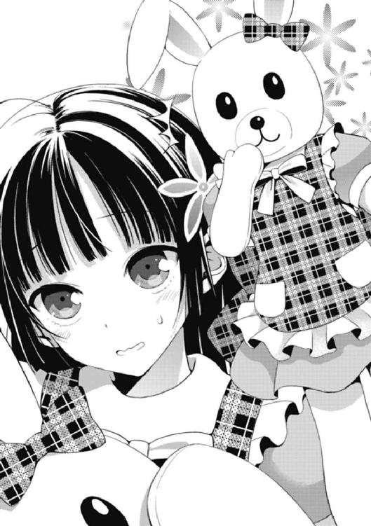
「しってました」
紅緒はガックリと肩を落とした。
元々、海文研は屋台を早いうちに閉める予定だったようで、リリィが閉店の準備を終わらせるまでの間、俺と紅緒は屋台前のベンチに並んでリリィが来るのを待っていた。
紅緒が身に付けていた白ウサギの頭部パーツはベンチの端に置いてある。生物の頭部だけが晒されている様子は、言うなれば打ち首獄門という感じで何ともマッドネスだった。
「つーかさぁ。なんでお前、ウサギなわけ？」
花菱から紅緒も着ぐるみを身に付けていることは聞いていた。となると、気になるのはどうしてウサギを選んだかという点だ。しかも白ウサギを。
「へ。なんでって......？」紅緒が首を傾げた。
「いや、そういう風に作る着ぐるみとか、どうやって決めたのかなって思ってさ」
「ああ、ええと......、」
紅緒は頰を赤らめ、何とも動揺した様子で答えた。「深い理由はないけど、ウサギ好きだし、他にいなかったし......」
「ふぅん。で、白ウサギか──」
「うん」
「紅緒なのに赤色じゃないのか」
「私だって何でもかんでも赤色にするわけじゃないよ」
「言われてみりゃそうか」
名前に色が入っているためか、昔から紅緒は基本的に赤色が好きだ。
色を選べる時は、ほぼ赤を選択すると言っても過言ではない。ただ、さすがに赤ウサギは趣味が悪い。ウサギといえば黒か茶か白で、赤いのなんて「本当は怖いおとぎ話」的なゲームでナイフを持って暴れる血みどろウサギしかお目に掛かったことはない。
しかし、なんだ。
............さっきから、紅緒の歯切れが非常に良くないわけだが。
「なんだよ、そんなに見られるのイヤだったわけ？」
「イ、イヤってほどじゃないけど......」
紅緒が視線を落とした。エプロンドレスの前で指を組み、離し、また組んでと躊躇いが形になって溢れ出る。分かり易くもじもじしながら、紅緒がツッと目線を上げた。
バチンと、視線がぶつかり合い、そして。
「葉介には、もっとちゃんとした格好してる時に見て欲しいって言うか......」
「............」
言葉が出なかった。
「な、なんか言ってよ。き、気まずいじゃん」
「う......わ、悪い......」
何かを言うって、具体的には何を......？
そ、そうだ！ 着ぐるみとはいえ、大枠に入れれば服には違いないはずだ。女の子が見慣れない服を着ていた時の対処法といえば......！
「......似合ってる」
「へ？」
紅緒が酷く驚いたような表情を浮かべた。俺は続けて言った。
「その着ぐるみ、すげぇ紅緒っぽいぜ」
──衣服を褒めるということ。
もちろん、これはお世辞などではない。草食系女子である紅緒にウサギという動物はピッタリとマッチしているし、ウサギの目は赤いことを考えると、本人のイメージカラーにも合っている。悪くない選択に違いない。
ところが。
「............えー」
妙なことに紅緒の反応は全く優れなかった。
むしろ、中々見かけないレベルで不機嫌そうにすら見えた。目は細まり、口元は真一文字に結ばれている。これには俺も意味が分からず、
「......なんで不満そうなんだよ、お前」
「そりゃそうだよ。着ぐるみが似合ってるとか言われて、嬉しいわけないじゃん」
驚愕の新事実が明らかになる。なんと女子的に褒められても嬉しくない衣服というものが、この世には存在するらしい。
「......そういうもんなの？」
「そういうもんなの。というか、今まさに、もっとちゃんとした格好してる時に見て欲しいって言ったばかりなのに。まったくもう」
ちょっと怒った様子で紅緒が言った。
失敗した、らしい。が、よくよく考えてみれば、紅緒は結構真面目に自分のウサギルックを嫌がっているわけだから、それを褒めたとしても逆効果になるのは火を見るより明らかだったに違いない。
いや、だとしても、まさかそこまで文句を言われるなんて......もしかして、何か他に理由があったりとかするんじゃないのか、なんて思わなくもないわけで。
「ヨースケ、ベニオ、おまたせしました！ ジェリード・イールおもちしました！」
と、俺が余計なことを言ったせいで更に微妙な空気になってしまいつつあったところに救世主が現れた。閉店準備を済ませたリリィだった。
俺達の困ったムードをブチ壊してくれたリリィは、まさに天使そのものだった。
──とはいえ、恐ろしいことに、天使の両手には、「地獄への鍵」とも言うべき料理が握られていたことも事実なわけで。
「やっぱマズい......」
「すごーい、超美味しいよ！ さすがリリィ！」
「きにいっていただけて、とても嬉しいです。自分でも中々のモノだとおもいます」
「今年の土用の丑の日に食べたって葉介から聞いてて、ずっと私も食べてみたかったんだよね。やっと念願が叶った感じだよ」
中央にリリィが座り、その左右に俺と紅緒が陣取る形である。
そして、お馴染みの光景だ。
俺一人がゲッソリして、紅緒とその料理を作った本人が出来映えを絶賛する。特殊な味覚や味の価値観を持ち合わせる彼女たちと、極めて一般的な嗜好の俺では、そこに決定的なまでの感想の違いが生まれてしまうのである。
──うなぎゼリー。
ビジュアルは、もうまさにその名の通りだ。
ゼリーの色は僅かな黄みを帯びた透明、その中に青い皮を携え、真っ白く茹で上がったヨーロッパウナギのぶつ切りがぶち込んである。うなぎゼリーの問題点といえば、やはり清々しいまでに食欲をそそらない外見だろう。
特に元々、うなぎを食べる日本人にとって、このうなぎゼリーとの出会いはショッキングを通り越して、アクシデントの領域に達している。
というのも日本人はうなぎを食べる時、大半が蒲焼きにして食べるため、仮にも魚類であるうなぎが持つ「生々しさ」に触れる機会が決定的に不足しているのである。
魚。そう、うなぎは紛れもない魚なのだ。
決して、蒲焼きソースの掛かった肉のようなモノ──ではない。
その意味で、うなぎという魚の持つ「素材の味」をある意味（？）引き出したイギリス料理が、この「ジェリード・イール」なのである。
「ううっ......」
無言でゼリーとうなぎを口に運び、思わず嘔吐いてしまう俺。
このうなぎゼリーという料理は立派なイギリス料理であるため、非常にシンプルで一辺倒な味付けを好む、彼の国の特徴を踏襲している。
味付けはシンプルに「塩」。
それが全てだ。そして強烈に塩辛いゼリーと、うなぎが持つ素材の味を押し出し過ぎた故の圧倒的生臭さ！ その強烈な味わいは筆舌に尽くし難いモノがある。
「ヨースケは、おいしくありませんか......？」
と、ただ一人ヘロヘロになっていた俺に、リリィが確認するような口調で言った。
碧色の瞳が、真っ直ぐ俺を見つめている。
俺はその宝石のように透き通った視線に目眩を覚えつつも、自分の信念──マズいと感じた時には、決して噓は吐かない──に従って、言葉を返した。
「え、いや、まぁ、うん......ごめん」
と言いつつ、非常に曖昧で頼りない感じだったわけだが。
──何度やっても慣れない。
この料理を作った相手に「マズい」という事実を突き付ける瞬間は。
誰よりも一番マズいマズいと言っている紅緒に対してすらそうだし、罪悪感という意味ではおそらくリリィが最もキツい。リリィが少しだけ、しょんぼりしながら言った。
「そうですか......ワタシは自分にとっておいしいものをつくっているはずなのに、難しいものですネ。かといってジェリード・イールをどうつくりなおせば、日本の方のお口にあうのかワタシにはサッパリ......こまりました......」
ウムム、と首を捻り始める。
リリィの作る「英国家庭料理」の最大の問題点は、日本人とイギリス人の間にある様々な文化の違いから来るモノが大きな割合を占めている。
だから理論上は、とにかく材料や作り方などを大きく日本人向けに傾けてしまえば、二国間の食のギャップを埋めることは出来るようにも思えた。
しかし、リリィにとって「文化」というキーワードは非常に重要だ。
日本人にとって苦手なモノ、常識外れなモノ、異質なモノ──それら全てを排除して出来上がった新しい「イギリス料理」は、彼の国で生まれ育ったリリィのイメージする「イギリス料理」とはまるで異なった別物になってしまうのではないか......まぁ、そもそもリリィはどうすれば、日本人向きのイギリス料理が作れるのか、サッパリ分からないようなのだが。
と、そんな時。
「──葉介が、私と同じような味覚になったらいいのになぁ」
とんでもない爆弾発言が飛び出す。俺は結構ガチで戦慄しながら、発言者の顔をまじまじと見つめた。
「紅緒。お前、今さりげに凄まじく恐ろしいことを言いやがったな......」
「えー。なんで？」
不思議そうに紅緒が首を傾けた。「だってそうなれば葉介も大体何を食べても『美味しい』って思えるようになるよ？ これって凄く素敵なことじゃない？」
「む......」
「私と同じ感じの味覚なら、私が作った料理も全部美味しく感じるわけだしさ」
横に置いた着ぐるみウサギの頭部をぐらぐらと手で揺らしながら、ぽえんと紅緒が言った。
──紅緒ではなく、俺が変わる？
正直、全く想像していなかった展開だった。というか、邪道オブ邪道にも程があるのではないか。だが、紅緒の言っていることは何も間違っていないのだ。
「ちなみに、うちのお父さんはそうだったんだって」
「なに......？」
「お母さんにプロポーズして、実家に行ってお爺ちゃんにも『耀子さんを下さい！』って頭下げて......あ、ごめん。耀子ってうちのお母さんの名前ね。トントン拍子に結婚まで行ったんだけど、いざ一緒に暮らし始めてようやく、お母さんの料理が、おかしいことに気付いたんだって。でもお父さんはお母さんのことが凄く好きだったから、別れたりすることもなくて、なんか最終的にはお父さんの体質が変わったとかで慣れたみたい」
軽っ!?
慣れたみたいってお前──人間の体質すら変えちまう料理って何だよ!? そんなサラッと流さないでくれ！ こえぇよ！ 明日は我が身じゃねーか！
「あのぉ紅緒さん、それ完全に初耳なんですけど......」思わず、尋ねる。
「だって私も知ったのかなり最近だもの。先月くらい？ 葉介に指摘されるまで、私は自分の料理観とかが全然人と違うことすら気付いてなかったわけだしさ」
「いや、それにしてもさぁ」
紅緒の親父さん──香神氏はいったいどんな葛藤を乗り越えて、今の生活に辿り着いたのだろう。香神氏とは学校への行き帰りなどで、時々顔を合わせることもあるのだが、この話を聞いてしまった以上、これからは見る目が変わってしまいそうだ。
後は紅緒のママさん──香神耀子さんか。そういえば最近、耀子さんと会った記憶がない。どれくらいの間、会っていないのだろうか。少なくとも紅緒がうちに出入りするようになってからは皆無だと思うのだが......。
「ま、でも──色々言ったけど、こんなの全部冗談なんだけどね」
「......は」
紅緒が、にへら、と笑みを浮かべた。
「私が頑張って葉介に美味しい料理を食べさせるって言ってるのに、葉介に変わって貰ったら、私が負けたみたいだもん。卑怯だと思う」
「......なるほどな、」
俺も少しだけ口元に笑みを浮かべて言った。「まぁ、俺も──どれだけ美味しく感じるとしても、自分がお前みたく白米にパブロン掛けて食べてる姿は想像したくねぇし」
「えー。そこは入門編なのに」紅緒が唇を尖らせる。柔らかに。
「じゃあ、益々無理だわ......」
「ウフフ、ベニオとヨースケは本当にとってもなかがいいですネー」
曖昧な笑いを交わらせる俺達を眺めながら、間に挟まれる形で座っているリリィが俺達のどちらよりも嬉しそうに顔を綻ばせた。そして、自身の手元のうなぎゼリーの入った容器にスプーンを伸ばす。濃厚なミルクをたっぷりと使用したアイスクリームを食べるかのように、リリィは非常にご機嫌な様子でそれを口に運んで行く。
とても豊かで、平和な時間が流れる。
とはいえ、それは全くもって不格好な平穏なのは間違いなかった。
俺の舌を賑わしているのはうなぎゼリーの塩辛くて魚臭い独特すぎる味わいだし、一緒にベンチに腰掛けている紅緒は首から下がウサギの着ぐるみ姿だし、海文研の屋台はよっぽど評判が悪いのか、さっきから一向にお客の来る気配がないし。けれど、俺達にとっては──何物にも代えがたい、素敵な時間だった。
そんな時だった。
『こんにちは！ 木々津祭を楽しまれている生徒、そして保護者の皆さん！ 文化祭実行委員の船越です！ 待ちに待ったイベントの時間がやって参りましたよ！』
突如としてスピーカーから実行委員による全校放送が流れ始めたのは。
校門周辺のエリアにいた人間の動きがピタリ、と止まる。
ここからは一斉に同じ行動だ。
誰も彼もが首を麒麟のように伸ばし、耳を象のように欹てて、校舎に備え付けられたスピーカーから聞こえる放送に関心を寄せた。もちろん、俺達もそうした。何が始まる？
アナウンスが続く。
『もうすぐ文化祭一日目も終了間近！ そんなわけで、プログラムにしっかりと目を通して下さった皆さんは、そろそろ来るんじゃないかなーなんて思っていたんじゃないでしょうか。そう、時は満ちました！ 文化祭実行委員主催、大ビンゴ大会の時間です！』
──ビンゴ大会、だと？
「そうそう、ビンゴやるんだっけ！ 私ね、部室に戻らない可能性もちゃんと考えて、ポケットの中にカードを入れて......ほら！」
「ワタシもちゃんともってます！ めざすはイッカクセンキンです！」
二人共揃って事前に配布されていたビンゴカードを、どこからともなく取り出した。
紅緒の用紙なんて着ぐるみの上から纏っているエプロンドレスのポケット（まるで四次元ポケットのように、不自然なポケットが元々付いていた）から、出て来る始末だ。
が、対する俺は......。
「......忘れてた。今用紙、手元にねぇよ、俺」
「え。だって今日の開会式終わった後、委員の子から直接配られたじゃん。どこやっちゃったの？」
「鞄の見えるところに差したはずだから......テニス部の部室だと思う。今から取りに行っても、多分間に合わねぇ。あっちに残ってる連中が勝手に穴空けちまうよ」
意外なほど鮮明に記憶に残っている。
カンガルーの子供ぐらい丸見えの形で通学鞄の外ポケットに入れてあるはずだ。これを目聡いハイエナのような野郎共が放っておくわけがない。当たり前のようにパクられていて、部室にいる連中の共有財産になっていることは想像に難くなかった。
「うーん、残念だね。かなり良い景品が貰えるみたいなのに」
「へぇ......例えば何？」俺は紅緒に訊き返す。
「えーとね。手芸部の実行委員の子から聞いたんだけど、今回は木々津市の商店街が協賛に付いてくれたとかで、凄い物が集まったんだって。ブルーレイレコーダーとかアマゾンの商品券とかノートパソコンとか、って言ってたかな。他にも色々あるみたいだったよ」
「なっ──」
予想を遥かに上回るガチ過ぎるラインナップに、俺は動揺を隠せなくなる。
えっ。
なにそれ。そんないいモンくれんの!?
どうせ「学食のタダ券一ヶ月分」みたいな、学校生活の延長線上に過ぎない景品しか貰えないと思って、完全に舐めてた......！
「リリィは何が欲しいー？ 私はパソコン欲しいなぁ。今私の部屋にある奴、超古くてちょっと使ってるだけで、すぐに電源が落ちちゃうの」
「ワタシはレコーダーがほしいです。やはり一度に複数の番組をろくができるのは、とても魅力的ですネ。うちはテレビが一台しかないので、少しふべんなのです！」
「あっ、確かに......でも、この品揃えだとテレビも景品に入ってるかもしれないよ。テレビが最近、凄く売れなくて困ってるってニュース見たもん」
「オー、素晴らしいです。是非とも、テレビもねらっていきたいですネ」
一方、女性陣はビンゴ大会にノリノリだった。
雑誌の懸賞や商店街のくじ引きなどでもそうだが、女性の方がこの手の運任せで景品が貰えるイベントに興味を示す傾向があるためだろう。
でもね、キミ達。ビンゴはそんな積極的に欲しいモノを獲得しに行くアグレッシヴなゲームじゃないぜ。あくまで参加者に出来るのは、配布された用紙の番号が読み上げられることを期待することだけなのだよ。うむ。
............まぁ、俺は手元に肝心の用紙がないので、口を半開きにして二酸化炭素を垂れ流しながらイベントを傍観することしか出来ないわけだけども。
──と、そんな、俺達がビンゴゲームに今回の文化祭始まって以来の絶妙な昂揚感を抱いている時だった。
「ふぅ」
校舎の方から、額の汗を拭い、俺達のいる屋台エリアの方にヒタヒタと歩いてくる人影を見つけたのは。長身瘦軀で、眼鏡を掛けている非常に見慣れた姿の男。
冥だった。
「アレ──あそこにいるの、冥じゃね？」
「ん。あ、ホントだ。藤見川君だね。あれぇ......じゃあ、カロンは......？」
「メイーッ！ こっちにきませんかー？」
「ム......？」
リリィがブンブンと手を振ると、疲労困憊という様子だった冥も俺達の存在に気付いたようだった。一瞬、警戒するように辺りを見回した後、安全（？）が確保されたと認識したのだろう、ゆっくりとした足取りで海文研の屋台の方へと近付いて来る。
そして、開口一番。
「......委員長、その着ぐるみは罰ゲームか何かなのか？」
「えっ、えっ!?」
まず最初に──白ウサギルックに身を包んでいた紅緒にツッコミを入れた。
この言葉に、ようやく平静を取り戻し始めていた紅緒の態度が、またしても落ち着かず非常に恥ずかしそうな色合いへと回帰した。
紅緒はカァーッと頰を赤くさせて、途轍もなく恥ずかしそうにしながら、
「え、えと、こ、これは手芸部の出し物っていうか......別に罰ゲームとかじゃ......」
「なるほど、手芸部の......手芸部!? そうか、オレが移動した後で、変なネコが校内を彷徨っているという噂が立っていたのはもしや......！」
冥がハッとした様子で眼を剝いた。
この反応を見るに、冥はしっかりと花菱から逃げ果せていたようで、あの不気味な紫ネコぐるみ（ｉｎ 花菱）とは未だにエンカウントしていないらしい。
──ただ、逆にしっかり花菱と遭遇してしまった俺は、思うこともあって。
「なぁ。実は──さっき花菱に会ったんだけどよ」
声を潜めて、俺は冥に話し掛けた。
「ほう......、どうだった？ カロンの様子は」
質問を質問で返されちまったわけだが......どうだった、ねぇ。
何となくではあるけれど、その問い掛けに俺はあまり良い印象を抱かなかった。
妙に隔絶的っつーか、言い方が冷たいっつーか。上手くピタッとピースが嵌まらないもどかしい感じを覚えつつではありながら、俺は答えた。
「『距離を取って、自立を促す』だよな。半分ぐらいバレてた。お前に避けられてんじゃねぇのってさ、相談されたよ」
「......やはり、か」
「ああ。つーか正直、今のやり方ってあんま効果的な気がしねぇんだけど。全然、花菱の奴、自立的になってねぇし」
「............そう、だな」
そもそも一朝一夕で、あの自堕落お姫さまに変化が訪れれば苦労はない。
が、それ以上に俺が思うのは──冥と花菱の擦れ違いについて、だ。
今、この兄妹に必要なのは、本当に「距離を取ること」や「自立」なんて言葉なのだろうか。俺は甚だ疑問である。
「オゥ？ ヨースケとメイはなんの話をしているのですか？」
いきなり重苦しく話し始めた俺達を見て、リリィが不思議そうに尋ねた。俺は返答に詰まりながら、
「っと、いや、これは......」
「もうすぐ、ビンゴがはじまってしまいますヨ。メイ、カードはもっていますか？」
「カード......？ ビンゴのですか？ いや、おそらくは鞄の中ではないかと......」
「ムム。ヨースケと同じですネ。もったいないです！」
「ですね。そういえば、完全に忘れて──」
と、冥が言い掛けた瞬間だった。
「ねーねー、藤見川君。カロンに会わなかった？」
「......っ！」
問い掛け。
花菱と同じ手芸部である紅緒が、冥にストレートな質問をぶつけたのだ。
一瞬、冥の肩が強張る。
紅緒はそんな反応に気付かず、甚だ不思議といった具合にうむむ、と首を傾げた。
「あの子ね、今日ずっと藤見川君を探してたんだよ。行き違いだったりする？」
「......おそらく、は」
「そっか。カロンね、藤見川君と色々遊びたいって言ってたから、今日はちょっと時間的に難しくても、明日とか一緒に回ってあげて欲しいな」
「そう、だな、」冥が言った。「............善処する」
ざらついた声で、冥が頷いた。
──事情を知る俺からすれば『おそらく善処しないだろう』と確信出来る声色で。
「......やり方を変える必要があるのか？」
ぼそりと、冥が小さな声で言った。
俺は、その呟きに、何とも言えない不穏な色を感じ取る。
なにしろ、やっぱり花菱は相変わらずだからだ。
一直線で、純粋過ぎる。散々、朝遅刻しそうになって一人で登校したり、文化祭でひたすら兄を探し回ったとしても、自分のスタンスを崩そうとしない。
花菱は、今すぐにでも、冥と仲の良い兄妹になりたいだけなのだから。
けれど、冥が願っているのは、もっと大局的で、未来を見据えたもので──二人の話を聞けば聞くほど、そこに決定的な食い違いがあることを、実感してしまう。
と。
『それではビンゴ大会をスタートしまーす！』
スピーカーから声が。自然と、意識が切り替わる。
『皆さん、用紙の準備はいいですね？ ルールと致しましては、ビンゴが二列揃った方から順に運営本部の方に来て頂いて、もう一度こちらでクジを引いて頂きます。そして、そこに書かれていた超豪華景品を手に入れられる──という形ですね。また、こちらのインタビューに答えて頂くのが景品を持って帰る条件になります！ では、開始と致しましょう！ まずは............⑧番！ ⑧の数字があった方はカードに穴を──』
「あっ、⑧番あるよ。まず一個！」
「ワタシもありました。ステキな滑り出しといえるでしょう！」
「......」
「......」
キャッキャと楽しそうにビンゴに興じる女性陣を見ながら、俺と冥は何とも言えない沈黙に包まれる。
もしも俺達の手にビンゴカードがあったならば。
この何とも言えない粘ついた思考を投げ捨てて、物欲に身を任せることが出来ただろうに。そう思わざるを得なかった。
──そして、ビンゴゲームは意外な結末を見せることになる。
だがソレは決して、
『二年五組の香神紅緒です。ええと、多分、狙ってる人が多かったっぽいｉＰａｄを当てちゃったんですけど......あははは、すいません。私、実はもうｉＰａｄは一つ持ってるんですよね......。私、本当はパソコンが欲しかったんです！ 値段的には同じくらいらしいので、そっちを当てた方、私と交換しませんか？ 連絡待ってます！』
紅緒が既に所持しているｉＰａｄをダブって獲得し、学校の電波に乗せてトレードを申請したことでもなければ、
『二の五のリリィ＝アップルガースです！ 今回はねらいどおりレコーダーをてにいれることが出来て、本当によかったです。ワタシはサッカーや時代劇をみるのがだいすきなので、このレコーダーをフルかつようしたいとおもいます』
リリィが持ち前の幸運っぷりを遺憾なく発揮し、宣言通りにレコーダーを獲得して来て我が家のテレビライフをより豊かなモノにしてくれたことでもなかった。
問題は──既に景品獲得者が複数出て、ビンゴ大会が佳境に入ってきた時に発生したのである。
『おっと、二列揃った方が二人いらっしゃいました。では、お二人にクジを引いて貰います。皆さん、少しだけお待ち下さい............おおっとぉ、こ、これは！ ついに来ましたよ！ 二人とも同じ景品を引き当てました！ しかも今回の目玉です！ 全天候型最高級ウォーターパーク『シーデルタ』の一日ペアフリーパスだああああああああ！』
非常に喧しい絶叫が校内に響き渡った。
どうもこの運営担当はビンゴをサッカーの代表戦か何かと勘違いしている節があるようで、最初にビンゴを宣言した生徒が本部に現れた時には『ビンゴ！ ビンゴ！ ビンゴ！ ビンゴ！ ビンゴ！ ビンゴ！ ビンゴオオオオ！』などと、まるで日本がゴールを決めた時のように合計数十回に渡ってビンゴを連呼し、教師からクレームを入れられたりしたのである。この調子でも最初と比べれば大人しくなっているのだから困る。
「へえええ、シーデルタだって！ 凄いね！」
「学校のビンゴ大会で、こんな景品出せるとか今年はマジヤバいよなぁ」
獲得した二台目のｉＰａｄを見事、その後にノートパソコンを当てた生徒とトレードすることが出来たため、非常にご満悦の紅緒と共に俺は唸り声を上げた。
シーデルタは最近話題になっている超豪華なウォーターパークだ。
東京都内では既に最大級のレジャー施設ではあるようだが、将来は同じく名前に「シー」が付いている、あの巨大娯楽施設を打ち倒すことを目標にしているとか何とか......。
いったい誰なのだろうか。
こんな高そうな景品を獲得した人間とは......？
『では、そろそろ非常に幸運な二人の女性にインタビューさせて頂きたいと思いま......おや、お二人とも知り合いなのですか？ あ、でしたら一緒にインタビューさせて貰ってもよろしいですか？......ありがとうございます。では、まず自己紹介をお願いします』
そして完全な不意打ちの形で、
『はい......そ、その......一年四組の愛内華凪......です......』
『二年五組、花菱カロン』
彼女たちが、電波に登場することになったのだ。
『おっと、二年五組の方はこれで三人目ですね。非常に運が良くて可愛らしい方が揃っているクラスのようです！ ちなみに花菱さん、先に景品を獲得されたお二人とは......？』
『友達。超仲良し』
『おお、これは凄い！ つまり、仲良しグループで豪華景品を独占というわけですね。いやぁー羨ましいです！ ところで花菱さん......私は花菱さんがこの部屋に入ってきたときから、その奇抜過ぎる格好に興味津々なのですが......？』
『──それは完全な脱線。早く話を進めるべきだと思う』
『............ですね。はい、承知致しました。では、愛内さんからお訊きしましょう！ 今回、見事にシーデルタの一日フリーパスをゲットされたわけですが、こちらはスパリゾートですので水着が必要になってきます。愛内さんはこの夏、海には行かれましたか？』
『海になんて興味ありません......ボクは山派です......』
『山ですか！ となるとキャンプや登山などでしょうか？』
『昆虫採集です......。今年も長野の山奥で、セミばかり採ってました......』
『............なるほど。では、最後にもしよろしければなのですが、今回の景品はペアフリーパスになります。一緒にシーデルタに行きたい方などがいらっしゃれば、教えて頂きたいのですが......？』
『わかった』『わかりました』
場の空気を読もうという意識が一ミリも存在しないインタビューが終わりに近付き、司会者の口からそんな質問が飛び出した瞬間、俺の口から「あ......」という茫然自失の声が漏れていた。
この二人が、ペアチケットを使って一緒にウォーターパークに行きたい相手？
──そんなの決まってんじゃねぇか。
『お兄ちゃん』『兄さんです』
呼び方こそ異なるものの、同じタイミングで二つの声が決定的な台詞を吐き出した。
しかも面食らった司会者が『え、それは一体誰のことですか......？』などと、詳細を希望する発言をしたものだから、事態はより面倒な方向へと転がる。
『二年五組、藤見川冥』『二年五組、愛内葉介』
暴走する妹達によって──俺と冥の名前までもが、全校放送で見事に晒されてしまったのだから。そして、最後に司会者がとびきりの爆弾を投下して、今回の一件は全校生徒に認知されるような関心事へと変わることになる。
『なるほど、色々と謎が解けて来ましたよ！ またしても二年五組！ 皆さん、お知り合いということですか。ふむ、つまり家族サービスというわけだ！ いやぁ、私、感激しました！ 素晴らしい！ なにしろ私、自分で訊いておきながら、お二人のような可愛らしい方々の口から【彼氏】や【恋人】というような忌々しい台詞を聞かずに済んだことに心の底から安堵しております！ 実に素晴らしい！ 我々がペアチケットなんてモノを用意しておきながら、こんな風に誰も傷つかない結末が訪れるとは思いもしませんでした！ きっと他の生徒の皆さんも同じことを思っているでしょう！ それでは最後に景品を獲得したお二人と、そのお兄さん達、そして見事な家族愛に多大な拍手をお願いします！ これにて大ビンゴ大会を閉幕と致します！』
瞬間、爆発したような拍手が辺り一面から響き渡った。
同じように校門周辺の屋台エリアでビンゴ大会の放送に耳を欹てていた生徒達が、一斉に煽られるがままに掌を打ち鳴らしたのだ。
──こうして完全に俺達の逃げ場は断たれてしまった。
とはいえ、俺は別に何の問題もない。
うちの妹は筋金入りの山女なため、ウォーターパークなどという水的な施設へ一緒に出掛けることは非常に貴重な体験だ。二人で遊びに行くことに、何の拒否感もない。
だが、冥は。
「..................参ったな、これは」
妹と距離を取り、自立を促す決意を固めた兄とは対照的に──兄との楽しい時間を待ち望むお姫さまからの強制的なデートに、どう対処するというのだろうか？
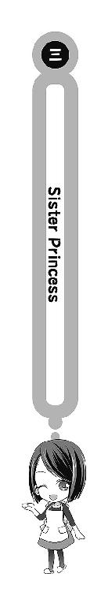
──ウォーターパークといえば、まずどんなアトラクションをイメージするだろうか？
『ウォータースライダー』
悪くない。まさに水のジェットコースターとも言うべき存在だ。刺激的で、水っぽさに溢れている。まさにウォーターパークにおける花形アトラクションに違いない。
『流れるプール』
同じく、悪くない。
これは浮き輪が大いなる活躍をみせるアトラクションで、プカプカとヨットのように浮き輪で水面を漂うのはとてもリラックス出来る。スライダーほどのド派手さはないが、長い時間を掛けて遊ぶのならコレだろう。が、しかし。
「なぁ、華凪よ」
「なんですか、兄さん......」
「俺達は今、水のテーマパークのようなところに来ている」
「そう、ですね......」
「冥と花菱があまりに来るのが遅いから、先に俺達だけで遊び始めたわけだ」
「はい。いったいどうしたんでしょうね、二人は......」
「気になるな。だが、俺達がまず最初にやって来た場所も凄く気になるんだ。普通ならウォータースライダーだとか、流れるプールに行きそうなもんだ。なのに、」
音が鳴る。
カポーン、と。
「何故──俺達はいきなり温泉に入っているんだ......？」
しかも、二人して同じ湯に。
文化祭のビンゴで妹達達が一日ペアフリーパスをゲットしてしまったため、一週間後の今日、俺達は都内最大級、国内でも最大規模のドーム型ウォーターパーク「シーデルタ」を訪れていた。
しかし、ここで一つのアクシデントが起こる。
当日、時間を決めて俺は花菱達と待ち合わせしていたのだが......困ったことに時間になっても双子は現れず、とはいえ華凪の携帯に「遅刻する」というメッセージが入ったので、結局俺達だけが先に入場して、施設を堪能することになったのだ。
シーデルタは年間通して使用可能な温水プールを軸とした巨大施設なのだが、同時にスパリゾートとしての側面も持ち合わせる。
事実、俺達がいるのは温泉というよりも厳密には「スパ」だ。
シーデルタは大規模ウォーターパークなので、基本的に入場者達は、どのエリアにおいても「水着姿」で行動しなければならない。これは温泉エリアに関しても同様で、調子に乗って全裸にでもなろうものなら、どこからともなく筋骨隆々のお兄さん達が現れて施設の裏側へと連行されるに違いないだろう。
だから一緒に温泉に入っているとはいえ、それは決して禁忌に触れる行為ではない。俺も華凪も水着を着用している。あまりにも、合法的な混浴である。
......では、あるのだが。
「兄さんは、温泉がお嫌いですか......？」華凪が訊いた。
「全然嫌いじゃないけどさ......」
「ならば、いいのではないでしょうか......」
俺達は丁度、少人数で利用する泡風呂に二人で並んで入っていた。
浴槽の中に設置されたノズルから無数の泡が生み出され、パチパチと身体に当たって心地よい刺激を残す。長野の旅館で入った温泉は天然の露天だったため、このような遊び心に溢れた施設は存在しなかった。その意味で、泡風呂には非常に満足していた。
──けれども、ウォーターパークにやって来ていきなり温泉に入るのは、ちょっと特殊過ぎやしませんかね。
「......ボクは、苺から食べるんです」
「へ？」
「......ケーキの、ことです」
不意に華凪がワケの分からないことを言った。
ケーキ。苺。
それって、もしかして。
「ストロベリーオンザショートケーキ。苺を先に食べるか、それとも後に食べるか......ボクは先です......ボクは一番好きなことから始めるタイプなんです」
「つまり、何よりも一番、この温泉に来たかったってことか？」
「はい......」
尋ねると、華凪は僅かに頭を揺らして、口元を小さく緩めた。笑った。
「ここなら......兄さんと一緒にお風呂に入っても、何も問題ないですから......」
──ああ、と思った。
華凪は、今まで出来なかったことをやっているのだ。
自分の作った料理を「あーん」で俺に食べさせたがったこともそうだし、一緒に風呂に入ることだって、長野では出来なかった。
男湯と女湯。
柵越しの会話だった。
けれど、今は違う。華凪はまだ完全とまでは言えないけれど、自分の中にあったモヤモヤをぶちまけて、発散して、割り切りを付けて、覚悟を決めた。
だからこんな風に、肩を並べて俺と同じ風呂に入ることだって出来る。
そこに特別な意識はない。介在しない。唯一あるのは──温泉の湯がもたらすのとは少しだけ違う温かさだけ。それこそが華凪にとっての「ストロベリー」なのだ。
甘くて、そして少しだけ酸っぱい味の。
「水場も、意外といいものですね......」
僅かばかりの沈黙が続いてから（もちろん、決して気まずい時間ではない）、華凪が嚙み締めるように言った。相変わらず、うちの妹は少し抜けていた。
「温泉なら山にもあるじゃねーか」俺は言う。
「言われてみると、そうですね」華凪も頷いた。
「......」
「......」
この辺りで、俺達兄妹は揃って一つの事実に気付いた。
──仮にも温水プールがメイン施設なレジャーランドに来たのに、ずっと温泉に入ってるだけって、何かもったいなくないか？
確かに、一緒に温泉に入ることは、スパリゾートでしか出来ない特別な「苺の実」なのだろう。けれど残った「ケーキ」本体を全て捨てるのには同意出来ない。
苺も食べる、ケーキも食べる。
両方を共に美味いと感じ、血肉に変える度量こそが肝要に違いない。
──プールにも、行くべきか。
「あ......」
と、その時だった。
華凪の持っていたスマートフォンに着信があったのである。
山茶花女学院では学園の許可を貰った生徒しか携帯を所持出来ないため、華凪は携帯電話を持っていなかった。なので、東京に戻って来てから姉さんに買って貰った最新型のスマートフォンを、華凪は非常に気に入っていたのだ。今日も防水のストラップケースに入れて、首からぶら下げている。
「カロンちゃんが、ようやくこっちに来たようです......」
ぎこちなくスマートフォンを操作しながら、華凪が言った。
うん。良いタイミングじゃないか。
俺は温泉から出る決意を固める。
「やっとかよ！ ったく、アイツら何やってたんだっつーの！ じゃあ上がるぞ、華凪」
「はい......」
泡風呂から上がり、たっぷりと湯を吸い込み、ペタリと太股に貼り付いた水着の感触に俺は僅かに眉を顰めた。タプタプである。コレばかりは学校で穿く競技用の水着の方が優れているな、と実感する。それに風呂は裸で入るべきだな、やはり。
「いいお湯でしたね」
「ああ......」
ここで事細かに俺の身に付けている水着のデザインや形状、購入に至った経緯などを回想するのも吝かではないのだが、そんなことをする必要性が微塵も感じられないので、ここは徹底的なまでにスルーさせて貰う。やはり、こういう場でのポイントは野郎などではなくて、女の子がどんな水着を着て来るのかというところにあると思うし。
事実──泡風呂に入っている時は隠れて気にならなかったが、華凪の水着は本当にとんでもない代物だったのだから。
「......やっぱ目立つよなぁ」
風呂から上がった俺は、後ろに付いて来る華凪の方を見つめ、首を捻った。
華凪も俺のこの露骨過ぎる視線に気付いたらしく、自身の大きな身体を両手でかき抱くようにして、顔を赤らめた。
「兄さん......そ、そんなに見ないでください、」
はぅ、と唇を歪めて、華凪が顔を伏せた。「は、恥ずかしいです......」
「いや、でもな......さっきも言ったけど、」
俺がこんなにも華凪のことをついつい見てしまうのには、理由がある。予め断っておくが、それは俺が妹に欲情するような困った変態だからでは断じてない。断じてだ。
全ての理由は──華凪の身に付けていた水着にあったのである。
俺は訊いた。
「......なんでお前、スク水なんて着て来たわけ？」
トラディッショナル・ジャパニーズ・スイムウェア──スクール水着。
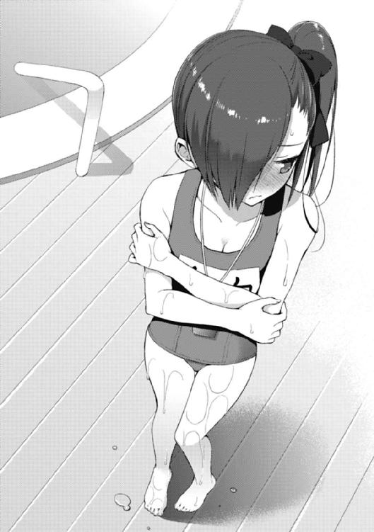
しかも腰回り前面にスカートのような形状をした水抜きが存在し、胸に「愛内」という名札がくっついている──そんな凄まじい格好で妹が現れたとしたら、直視するなという方が酷ではないだろうか？
『ッ──!?』
向こうの様子を遠目から眺めた時点で、花菱が明らかにドン引きした表情を浮かべていることが手に取るように分かった。
近付くにつれて、彼女の顔色はどんどん険しくなっていく。しかも何故か華凪ではなく俺の方を見て、そういう顔をするという。
ああ、なるほど──これが「変態」を見る眼って奴なのか。
参ったね、コイツは。へへへ。はは......。
「......」
「よう。おっせぇじゃねぇか。待たせ過ぎだよ、バーカ。つーか、おい。冥の奴がいねーんだけど、どうなってんだよ。なぁ、花菱？」
あまりに花菱が俺のことを犯罪者然とした目付きで睨みつけていたので、開口一番は非常にフランクで、無駄に饒舌な挨拶で場の空気を取り繕ってみた。
とはいえ、不発。
花菱は俺のゲスい挨拶に特別な反応を示すこともなく、それどころか「待たせてゴメンね」と頭を下げるでもなく、とても険しい表情を浮かべながら、
「変態。女の敵。スク水マニア」
「......俺が着せてんじゃねぇんだけどなぁ」
いきなり俺のことを罵り始める始末。
コイツ、俺が華凪に自分の趣味でスク水着せてると思ってやがる！ 濡れ衣だ！ 華凪が勝手に着て来たんだ！
「待ってください、カロンちゃん。違うんです......ボクは兄さんに無理矢理スクール水着を着せられているわけでは......自分から着たんです......」
すぐさま華凪がフォローを入れた。自分の兄がいきなり変態扱いされていることに慌てているようだ。うむ。華凪、もっと言ってやりなさい。真実を。あますことなく。
「自分......から......!?」
が、しかし。
「愛内君が自分の有り余る欲望を押しつけたんじゃないの......!?」
「ちげーよ！ 華凪はこれ以外に水着を持ってないだけなんだっつーの！」
「そうなんです......」
華凪は注目を浴びるのが嫌いなはずなのに、やはり抜けているところがあって、どういうことをすれば周囲から見られまくってしまうのかに気付かない部分がある。
特に自身がお嬢様女子校育ちということもあって、華凪は男の目を意識する能力が絶望的に欠如しているし、同じく一般的な常識にも若干疎い面がある。
スクール水着で普通に遊びに来てしまうのなんて、その顕著な面だろう。大体、男達というのは、ありとあらゆる水着の中でも「スクール水着」というモノを好き嫌いは別として特別視している傾向がある。
基本水着を正当に評価する眼を持たない野郎共に実は水着のデザインは露出度を除いて大きな差はないのだが、ここにスク水が登場すると、誰もが『スク水来たよ......』『スク水だ......』『マジか......』と、心を搔き乱されてしまうのである。
そんな特別過ぎる水着を、例えば姉さんのように極めて貧相な体型をした人間が身体を張ったネタとして着用するのなら、まだ分かる。
超王道とも言うべき『ロリ×スクール水着』というコンビネーションである。
これに関しては、誰もがスク水というあまりに異端な存在に動揺しつつも『分からなくもないな』と、深く頷くに違いない。
だが──華凪の身長は百七十四センチもある。女子としては相当、高身長な部類に入るだろう。もちろん、そこにスク水を組み合わせるのは、相当なイレギュラーに違いないのである。
華凪が言った。
「でも、むしろボクはビキニの方が......恥ずかしいです......ボクはカロンちゃんみたいに瘦せてるわけじゃないので......」
おもむろにツツッと目線を下げる華凪。そんな華凪の視線が止まったのは......紺色の生地に包まれた自身の腹部。
──お腹、である。
「お腹が見えてしまうのは......困ります......勉強続きで衰えたこの身体では......とてもではないですが......着られません......」
切実な、言葉。
けれど、困ったことに俺はこの華凪の嘆きが全然理解出来なかった。少なくとも贅肉が溢れてピザっているようには、まるで見えない。
むしろ魅力的なお腹だと思うのだが......いや、気にする必要、なくね？
「全然大丈夫そうに見えるぞ。そう思わねぇか、花菱？」
「うん。凄く普通。むしろ、スマート」
真面目に頷き合う俺と花菱。しかし、華凪はサイドテールに結った髪が頰にぺちぺちと当たりそうなほど激しく首を横に振って、否定の言葉を連ねる。
「そんなことありません......」
「そうかなぁ......」
「よくわからない」
「そうです......ボクの体重とか聞いたら......絶対引きますし......」
依然として自身の腹部を凝視しながら、悲愴な表情で華凪が言い放つ。
プールの水で濡れたスク水がピタリと貼り付いて、華凪の腹部のシルエットを鮮明に浮かび上がらせている──が、やはりデブとは程遠い。
これにいったい何の問題があるのだろうか。そりゃあ体重は、まぁ......身長のことを考えると、あまり気にしない方が吉だろう。
華凪くらい上背がある子は、どうしても体重が増えてしまう。実際、百七十四センチもあれば男子の平均身長より上なわけだし、男子並みのウエイトがあっても何も問題ないはずだ。変に瘦せ過ぎている方が不健康で心配になる。
ただ、まぁ、うん。
胸だけは............頑張れ。
「つーか、だな。俺や華凪より、お前らの話のが重要だろ。なんで冥がいねーんだよ」
ここで華凪のガラスのハートを守るために、俺は話題を転換する。
圧倒的なまでの遅刻。
これを追及しないわけにはいくまい。
「む......」
花菱の眉がピクリと動いた。俺は追撃を掛ける。
「ここが木々津から結構離れてるとはいえ......何分待ったと思ってんだっつーの」
「......ごめんなさい」
花菱がすぐさま頭を下げ、そして。
「お兄ちゃんは、寄るところがあるから、もう少し時間が掛かると思う」
「寄るところ......？ それって、どこのことだ？」
「............分からない」
「はぁ......？」
なんだ、それ。カップラーメンを二十個は余裕で作れてしまうような大遅刻をカマしつつ、それでもまだ兄貴は現れないだと？
おいおい。勘弁してくれよ。
「そもそも、お前が遅れた理由は何なんだよ？」
「え......」
「冥はどこかに寄ってるから遅刻だとして、それ以外に何か理由がないと、ここまで遅れないだろう」
問いただすと、花菱がとても言いづらそうに、ぽつりと呟いた。
「......ね、寝坊」
「............はぁ」
そんなことだろうと思ってたよ。まったく。
ここで、俺はため息を吐きながら、改めて花菱の水着姿を直視し、ちょっと驚くことになる。
──どうして中々、似合ってやがるじゃねーか......。
以前、俺は花菱から「自分は胸がないので水着になりたくない」という趣旨の発言を聞かされた覚えがある。水泳の授業の時に花菱が水着になっている姿は遠目には見かけたことはあったのだが、こうして間近で眼にするのは初めての経験だった。それに学校用の水着とそれ以外では、受ける印象も全く変わって来るというモノだ。
花菱の水着は首の後ろで紐を結ぶ、ホルターネックタイプのビキニだ。
その上に袖が妙に長くて手がすっぽりと隠れてしまうくらい大きなダボダボのパーカーを羽織っていた。
胸元ではなく首回りに視線が行きやすい水着であるため、髪が短くて華奢である花菱にはまるであつらえたような感じだ。ストラップの部分も極力飾りを廃したスタイリッシュでシャープなデザイン。全く運動していないせいで、非常に色白な肌に普段とはイメージの異なる真っ白い水着が見事にフィットしている。
「へぇ......」
自然と感嘆の声が漏れる。しかし花菱はそれを単なる下心の露呈と見做したらしく、
「愛内君。今、凄く、いやらしい眼をしている」
「なっ──ちょ、そ、そんなことねーよ！」
「違わない。やっぱり華凪にスクール水着を着せたの趣味じゃないの？」
「だから着せてねーっつの！」
なにしろ花菱は性格は相当にアレだが、見た目は凄く良いのである。
まぁむしろ見た目が正直アレでも、そこに露出している肌があれば、ついつい見てしまうのが男のサガというもので、その辺りを追及されるのは、ね。うん。物凄く反応に困るので、勘弁して欲しい、というのが本音なんだよね......。
ところが、だ。
──ここで華凪がとんでもない爆弾の投下に踏み切った。
「でも、兄さんがスクール水着を気に入っている可能性は......高いです......」
「なっ......!? か、華凪、お前何を......！」
「つまり、本当は着せたかったところに、華凪が着てきたということ？」
「かもしれません......」
華凪が頷いた。
いや、頷いてんじゃねーよ！ 別に気に入ってなんていねーぞ!? いったいどこからそんな発想が──
「だって兄さんは......ボクがこの姿で現れたら......普段からは考えられないような過敏な反応を......していましたし......物凄くじろじろ見てましたし......」
「いや、そ、それは、だな」
「それは、なんなの？」
ギロリ、と。
ここで何故か花菱が俺への詰問に参戦する。ダブル妹のコンビネーションだ。こんなところで連係を取らないでくれよ、マジ。
確かに事実さ。事実ですとも。
だけど、だな。それは単に華凪がスク水なんて着て来るからで──
「普通、華凪みたいな子がそんな水着着るなんて思わないだろ。なのに、普通に似合ってるからスゲェビックリしちゃったんだよ」
「え......、」華凪が左の瞳を大きく見開いた。「ボ、ボク......もしかして、こんな格好してるのに......可愛いんですか......!?」
「そりゃあ、そうだろ。可愛くないわけあるか」
「そ、そうですか......！」
答えると、華凪は急に問い詰めるのを止めて、下を向いてしまった。
微妙な沈黙。
この一月の華凪とのやり取りを通して思うのは「可愛い」という言葉には、魔法が宿っているのではないか、ということだった。
非常にシンプルで、非常にありふれた言葉だ。
けれど、侮るなかれ。
軽いニュアンスでも、重いニュアンスでも使うことの出来るこの言葉は、どうやら男の俺が考えている以上に、女の子達にとって重要な意味合いを持つらしいのだから。
......理解して貰えたのだろうか？
別に俺がスク水に対する特殊性愛を持っているわけではなく、単にうちの大きな（だけど、俺にとっては少し小さな）妹が絶妙なコンビネーションで、この紺色の水着を着こなしてしまったことに感嘆の意を表していただけだという事実に──！
「わ、わかりました......」
ぽつり、と何とか聞き取れる程度の声量で呟いた。
「そんなに兄さんがスクール水着が好きなら......今度、家でも着ることにします......」
「全然分かってねぇじゃん！ 華凪にそんなことしたら俺が姉さんに殺されちまうよ！」
「愛内君、やっぱり変態......」
「だから、違うって──と、おお？」
その時だった。
水着のポケットの中に入れてあったスマートフォンに着信があったのだ。防水機能のありがたさに感謝しつつ、画面を開くと──なんと冥からメールが届いていた。
『すまない。今、入り口に着いた』
とある。ようやく到着というわけだ。あの野郎......。
俺は正直、少し安心しながら、
「おい、花菱。冥からメール来たぜ。今着いたってよ」
「ホント？」
「おう。これ見ろ」
スマートフォンの画面を花菱に見せつける。花菱は食い入るようにディスプレイを見つめると、口元を小さく綻ばせ、すぐさま、
「......よかった。じゃあ、あたし、お兄ちゃんを迎えに行って来る！ 二人は勝手に泳いでいて！」
疾風のような速さで駆け出そうとした。俺は慌てて声を張り上げる。
「ちょ、ちょっと待て！ 冥を迎えに行くのも、別々に行動するのもいいけど、いくつか訊きたいことがある！」
花菱がクッと首を擡げ、怪訝な表情を浮かべた。
「訊きたいこと......？」
「ああ。そうだ。そもそも、お前マジで寝坊したわけ？」
「楽しみ過ぎて寝坊してしまったのは本当。ごめんなさい」
「そうなのか」
「うん。神さまがくれたチャンスだと思って、今日は色々と準備してきた」
そう言って、持っていた大きめのトートバッグを顔の高さまで掲げた。なるほど、水遊び用の道具でも色々入ってるってわけか？
実際、俺がこんなことをわざわざ花菱に尋ねたのには、大きな理由がある。
──そもそも、いくら花菱が寝坊したとしても、冥が起こしてやれば、遅刻なんてしないで済んだのではないだろうか。
実際、ここしばらく花菱は学校に毎日のように遅刻しそうになっていた。
それはおそらく今まで親父さんや冥に朝起こして貰っていたところ、自分で起きなければいけなくなったからだと思われる。
だが、さすがに今日ぐらいは起こしてやってもいいのではないだろうか？
俺が知る限り、冥は紅緒の次くらいに遅刻とは縁のないキッチリ人間だ。それは起床時間だけではない。事前の準備に関しても、同様のことが言えるわけで。
冥の奴が、どこかに寄る用事があるから遅刻する？
──それ、本当なわけ？
「......お前って、泳ぎは得意なんだっけか」
「ううん」
「苦手か」
「違う。ぶっちゃけ、全く泳げない」
「............」
「だから......今日の目標は、お兄ちゃんに泳ぎを教えて貰うことなの」
「へぇ......いいじゃねーか。叶うといいな」
「うん」
こくり、と花菱が頷いた。
自然と俺の視線も下がって、花菱の透けるように白く、鎖骨の浮き出た首筋に視線が行った。不思議なくらい、その白が異様な色気を放っていると俺は感じる。
最近、落ち込み気味なのもあってか、花菱はフッと切り替えたように殊勝になることが多い。すると、元々驚くほど華奢で細身の身体をしていることもあって、妙に儚げな印象を纏うようになる。いわゆる「美少女オーラ」が発現するというわけだ。
それも、とびきりの。
いつもこれくらい美少女っぽければ、男なんて大抵イチコロだろうに。特に身内の兄貴からすれば、可愛くて堪らなくなってしまうのではないだろうか。
というか、そっちの方が色々と楽でいいんだけど。
「それと、あともう一つ......お兄ちゃんに言いたいことがある」
「ん......泳ぎ以外にも？」
「そう、」今にも空に溶けてしまいそうな、小さな──けれど確かな輪郭を保った声で花菱が言い放つ。「むしろ、こっちの方が大事とも言える」
「ほぉ」
「じゃあ、そういうことで。あたしは行くから。華凪も、頑張って」
「はい......ありがとうございます......カロンちゃん......」
そうして、俺達兄妹は走り去って行く花菱のスラッとした背中を見送った。
──いったい何をするつもりなのやら。
実際、この辺りになると、俺は冥サイドよりも花菱サイドの味方に付きたい気持ちが大きくなっていた。初めは冥の方に相談を持ちかけられたってのにな。
でもさ。分からなくもないと思わないか？
冥の掲げた理想は、そりゃあ立派だし、俺もまさにその通りだと思うんだけど......なんかピンと来ないっつーか。現に目の前で落ち込んだり、しょんぼりしている花菱を何度も見かけているせいで、正直『本当にそれが正しいのか？』って気分になるためだ。
逆に花菱はというと、やるべきことだとか、将来のことだとか、サッパリなんだけど少なくとも、今の状況を変えるためにアイツはアイツなりに色々と頑張ってると思うんだよな。だから、こっちを応援したくなるっつーか。
──妙な行動ばかり取っている兄貴なんて、どうでもよくなるよなぁ？
◇ ◇ ◇ ◇ ◇ ◇
花菱を送り出した後、忘れないうちにと昼食の時間と集合場所を何通かメールをやり取りして決めた俺と華凪は、ひとまずプールっぽい遊びに興じることになった。
「........................きゃっ」
「........................おおっ」
──ウォータースライダー。
シュルルルルルル、ザバン。
俺達は地上数十メートルの高さから水が流れるチューブの中をカーブしたり、スライドしたり、ドロップしたりしながらプールに着水する。波紋。飛沫。爆発したような着水時の破裂音とは違い、肝心の俺達の反応は意外に小さめだった。
なんというか「思っていたより、やるじゃん」みたいな。
もしくは「ほほう、意外とやりおるわ」みたいな。
「悪くない......ですね......」
「ああ。中々いいな」
一緒にウォータースライドを体験した我が妹君も、同じ感想を抱いたようだ。
華凪は口元をじんわりと綻ばせながら、
「水場も、意外といいものです......」
本日、二回目となる賞賛の台詞を口にした。ちゃんとした水的施設をお気に召してくれたらしい。俺は少し安心しながら、
「だな。そうだ。来年は海でも行くか」
「いいえ。選べるなら山の方が断然......」
「......両方行こう」
俺達は着水したスライダー直下のプール（こういう時、俺と華凪の身長がほとんど変わらないのは助かる）をえっちらおっちらと徒歩で横断し、縁に上がった。
すると、水に濡れた身体が、微風に揺られて若干の冷たさを覚える。
が、それも僅かながらの間だけだ。一年を通して温度が二十八度に保たれた全天候型ドームの力によって、すぐに心地よい暖かさに慣れた。
「さて、これからどうするか」
「迷いますね......」
プールサイドに戻って来た俺達兄妹は、次なる行動に頭を悩ませていた。
温泉にも入った。
スライダーも滑った。
となると、次は流れるプールでグルグルとパーク内を回るのが王道なのだろうが、俺も華凪もあまり水属性と相性が良いわけではない。
要するに、俺達はプールでのステキな遊び方にとことん無知だった。
「プールって、何をすればいいんだろうな」
誰とも無しに言う。
華凪はキラキラと光を反射する水面をジィッと見つめながら、
「泳げば、いいのではないでしょうか......」
「じゃあ、泳ぐか？」
「いえ、ボクはあまり泳ぎは......」
「俺もそうだな......」
「ボクは虫を集める以外は、ほとんど運動はしないんです......」
「スポーツ観戦とかは？」
「しないです。せいぜいオリンピックぐらいなら......」
「そうか......」
「はい......」
──グッダグダ、である。
スクール水着ショックで一度は盛り上がったものの、基本的にインドアな俺達兄妹を二人だけで、こんなにも広大なウォーターパークに放り出すのは無理があったらしい。
そんなわけで、結局。
「......もう一回、スパにでも行くか」
「......そうしましょうか」
ふりだしに戻る。
俺と華凪は熟練の老夫婦のような雰囲気を醸し出しつつ、いそいそと移動を始めた。もはや、プール的なモノに興味はなかった。あるのは温泉だけだった。
「そういえば、サウナとかあったっけ」
「サウナですか......」
「そうだ。定番だけど、どっちが長く入っていられるかとか、競争でもしよう」
「いいですね。受けて立ちます......負けませんよ、兄さん......」
ダラダラダラ。
──こういう時、積極的に引っ張っていってくれる人間が一人でもいれば違ったのではないか、そんなことを思いはする。実際、そういう人間は俺達の周りには沢山いるのだから。むしろ、そっちのタイプの方が多いくらいだ。
ただし、今はいないわけだが。
まぁ、これくらいしっとりした時間も悪くはない。
冥達のこととかもスゲェ面倒臭そうだし、一旦忘れよう。そうだ。時には騒がしさから離れて、身体を労るのも悪くはな──
「葉介先輩、アナタはアホですか！ せっかくカナギと遊びに来てるのに、何でそんな枯れてるんです！ マジ信じられないんですけど!?」
「は......!?」
驚愕した。心の底から、マジ信じられないのは俺の方だと主張したかった。
何故、いるのだ、お前が。
それに驚いたのは、彼女が現れたことだけではなく──彼女の胸元に備わっているモノのあまりにも強烈なインパクトに打ちのめされてしまったせいでもあって。
「オメガ......なんでいるの......？」
「おっと、カナギ。気が早いですね──いるのは、アタシだけじゃないですよ。ほら！」
「え？」
ギョッとした顔付きで、華凪がオメガの指し示した方を向いた。
俺もつられてそうする。
「......マジ信じられないんだけど」
ついには、その言葉を実際に口にしてしまう。
『うむ。この浮き輪は私に丁度良いサイズだな。こんなものまでレンタル出来るとは、最近のプールは進んでいる』
『プールに来たのなんて久しぶりですけど、結構楽しいですね！』
『きもちいいですネー』
『ああ、悪くない──おや？ どうも気付かれてしまったようだな』
『あ......そうみたいですね。こっち見てますよ』
『ヨースケー！ カナー！』
愛内龍子。
香神紅緒。
リリィ＝アップルガース。
流れるプールから──何故か姉と幼馴染みと従姉妹が流れて来て、こちらに手を振っている光景に、俺は完全に啞然となっていた。
どういうことなのだ、コレは。
先程触れた積極的に引っ張っていってくれる類の人間が、一人どころか二人も三人も四人も現れてしまった。もちろん当たり前のように──全員、水着姿で。
そもそも、この「シーデルタ」は斎藤家の系列会社の一つであり、木々津祭のビンゴの景品として、ここの一日フリーパスを提供したのもオメガだったらしい。しかし、まさか提供したパスを両方とも知り合いが獲得するとは思っていなかったようだが。
オメガが俺達と完全に日程を合わせて、ここにやって来たのは以前からの願い──つまり『華凪と一緒に海へ行く』という野望を果たすためだったとか。
「きゃっ......！ オ、オメガ......冷たいです......！」
「そんなことないです！ ここの水温は二十八度固定で、人肌に馴染むように調整されているんです！ ほらほら、もっと掛けちゃいます！」
「っ、ぷぁ、や、やり過ぎ......です......し、仕返し......します......！」
俺達が流れるプールエリアから移動した先は、波浪装置によって人工的に波をコントロールする海を再現したオーシャンエリアだった。
手前側が浅く、奥に行くほど深い。一番深いところまで行くと、大の大人でも頭までスッポリ水が覆い被さってしまうほどの深さがある。足元が砂でないこと、塩水でないことを除けば、まさにビーチサイドそのままだ。
「うむ。昼食前から温泉に入り浸るよりは、余程こちらの方が健全だな」
オメガと華凪がキャッキャと戯れている様子を見つめながら、姉さんがとても満足そうに言った。
実際、サウナで無駄な汗を流す気満々だった華凪だったが、こうしてオメガと遊んでいる姿を見ると、全然違って見える。やはり友達と兄とでは、越えられない線のようなモノがあるのだな、とセンチメンタルな気分にならなくもない。
それともう一点。
──この距離から見ても、オメガの胸はヤバ過ぎる。
「でもオメガの胸元は、不健全にも程があると思うぜ......」
「それは私も同意だな......」
俺と姉さんは揃ってごくり、と唾を吞み込んだ。
オメガの水着は、黒ビキニだった。
飾りは一切無く、生地のサイズも極めて平均的。黒一色。誰よりもシンプルで、それ故に誰よりも強い──まさにプールサイドの王者に相応しき一品だ。
十メートルは離れているのに、この距離からでもオメガの胸元が持つ圧倒的存在感は周囲を威圧しっぱなしだった。揺れる、弾む、たわむ、また弾む──
まさに爆弾。一切敵なしの最強兵器。
男女問わず、水辺では斎藤オメガに勝てる人間はそうはいないに違いない。
「何を食べればあんなモノが出来るのだ......解せん......」
忌々しげに姉さんが言う。
姉さんは自身の幼児体型について半ば開き直ってる部分が多々あるが、それでも飛び抜けて女らしい身体を持つオメガに苛立ちを隠せないようだった。姉さんが俺の知り合いの中でオメガにだけ妙に厳しいのは、オメガの胸が凄く大きいからというのが間違いなく大きな理由としてそこにあるに違いない。
「ああいうのって食べ物関係ねーと思うけど」
「どうしてだ」
「だって、見境なしに食いまくってる姉さんがコレじゃ──っ、痛ぇ！ 殴るなよ！」
「うるさいぞ、葉介！ そんな減らず口を叩いている暇があるなら、手を動かせ！」
「ちっ......わーってますよ。ったく、なんで華凪達とプールに来たはずなのに、よりによって姉さんにオイル塗らされてんだ俺は、バカか......」
後ろ手にボコスカとフックを叩き込まれつつ、俺は渋々と姉さんへのオイル塗りを続ける。
姉さんといえば日焼け──なのだが、生憎と全天候型のドームは紫外線とは無縁で非常にお肌に優しいため、身体を焼くことは出来ない。そのため、俺の手にあるのは日焼け用のサンオイルではなくて美容健康用のアロマオイルだった。
つまりだ。どれだけ見た目がロリだろうとも、さすがにもう姉さんも実年齢を意識せざるを得ないに違いない。年相応にヘルスケアにご執心というわけだ。フフフ。
そんなわけで、先程から俺はビーチサイドに寝そべった姉さんの背中にオイルを濡らされていた。ご丁寧にビキニのトップスの紐を解いた姿に満遍なく、である。
この世に、こんなにも嬉しくないオイル塗りが存在するなんて思わなかった。逆に精神がニルヴァーナの領域に突入しそうだった。
ちなみに、元々龍子姉さんは年甲斐も恥ずかしげもなく、ゴスロリやセーラー服を着てしまう困った大人なわけだが、水着の選択でも姉さんの恥ずかしげの無さは遺憾なく発揮されている──なにしろ一人だけ、明らかにビキニの布面積が小さいのだから！
恐ろしいことだぜ、これは......。
確かに姉さんは圧巻のド貧乳の絶壁なので、隠す物は誰よりも少ない。
身体の凹凸が極めて乏しい故に、こんなマイクロな水着を身につけても意外とサマになってしまう。仮にも保護者の立場としてやって来ているはずなのに、未成年の俺達の誰よりも卑猥な水着を......いや、でも、ちっとも色気とかはないからいいのかな......と、とにかくだ！
青少年の教育に良くないってモンだよ！ 華凪じゃなくて、姉さんこそがスク水でも着てりゃあ良かったんだ！
......しかし、俺より七つも年上なのに、何故、こんなに姉さんの肌は瑞々しいのだろうか？ いつも日焼けしているから年相応に傷んでいてもおかしくないはずなのに......体型だけでなく、肌年齢まで小学生並みということなのだろうか。
「けどさぁ、来るなら来るって言ってくれよ。マジ驚いたんだぜ」
「先に言っていたら、朝から一緒に出掛けることになっていただろう？ 私達は会わないなら会わないで良かったのさ。華凪が休暇を楽しめるのなら、それでな」
姉さんがカラリと笑った。
いや、それは結構なのだが......じゃあ、むしろ向こうから接触してきた奴はどうなんだ？
「けど、オメガはあっちから絡んで来たぜ」
「アイツだけは完全にオマエ達二人を監視するために来ているから別勘定だ」
「......なるほどね」
俺は姉さんの丁度日焼けしていない背中の真っ白い部分にオイルを塗り込みながら、辺りを見回した。オメガと華凪はすぐそこで遊んでいて、姉さんはもう泳ぐ気はなく、ビーチシートを地面に敷いてバカンスモード。紅緒とリリィは飲み物を買いに行っている。
となると、残すは冥と花菱だ。
本来合流するつもりはなかったとはいえ、結局合流してしまったという趣旨は二人にもメールで伝えてある。俺達がいる場所は伝えてあるので、もう少し待てばやって来るだろう。
ただ......。
「なぁ、姉さん。ちょっと訊きたいんだけど」
「なんだ。言ってみろ」
寝そべったまま、肩越しに姉さんが俺の方を見た。
花菱達のことで、姉さんに少し意見を訊きたいと思ったのだ。新しい視点を求めて、という意味ではなくて──姉さんも同じことを考えている確証を得たかったからだった。
「家に居る時に俺や華凪と一対一になるとするじゃん？」
「それがどうした」
「うん。でさ、俺達と一緒にいて、何か意識したりする？」
「意識......オマエ達のことをか？」
姉さんが怪訝な表情を浮かべる。俺はそのまま首を縦に振って、
「そうそう。例えば緊張したりとか」
「するわけがないな」
「じゃあ、それは何でだと思う？」
「決まっている、」姉さんが言った。「──そこに居るのが当たり前だからだ。空気や水のように、あって当然のモノに意識を囚われる者がどこにいる」
「......だよなぁ」
そして、やはり想像通りの答えが返って来る。
当たり前だから。
家族とはつまり空気を共有する仲になること。お互いを空気だと思えるような関係になること。兄妹だって同じだ。気が付けば、そういう関係になっているのがごく普通。
なろうとしてなるというのは──難解な、蛇の道に違いない。
と、その時だった。
「た、大変です！ 皆さん、きてください！」
すぐに、リリィの声だということは分かった。
しかし、それがいつもの穏やかで、のんびりした彼女の声色とは全く異なるモノであることも一瞬で理解出来た。
振り返る。
フリルの付いた可愛らしいピンク色のビキニに身を包んだリリィが、こちらに向かって駆けて来るところだった。リリィの表情からは、普段の太陽のような笑顔も弾けるような快活さも、どちらも感じ取ることが出来ない。
あるのは、困惑と切迫の感情だけだ。
「どうした、リリィ」
誰よりも先にリリィに声を掛けたのは龍子姉さんだった。
一瞬で、外していたトップスの水着紐を結び直し、ビーチシートに寝そべっていた身体を起こした。そして水着の上からパーカーを羽織って、首の後ろから両指を通してガッと髪の毛を搔き上げる。走って来たリリィが息を切らしながら言った。
「た、大変っ、なんです！」
「落ち着け、リリィ。大変なことはしっかりと伝わっている。大切なのは、その次だ。何があった。ゆっくりと、分かる範囲で良い。話してみろ」
「は、はいっ......」
コクコクコクとリリィが激しく首肯した。
「リリィちゃん......どうかしたんですか......？」
「何かありましたか。ちょっと穏やかな風には見えないですけど。神市か、それともスタッフを呼びましょうか？」
この只ならぬ雰囲気に人工ビーチで遊んでいた華凪とオメガも怪訝な表情を携えながら、駆け寄って来る。俺も立ち上がる。これは、いったい──？
「カ、カロンとメイが......」
「カロンと冥？ あの二人がどうしたというのだ」
「そ、それがっ......！」
姉さんに宥められ、ようやく呼吸の整って来たリリィが俺達の顔をグルッと一度、見回した後、ハッキリとした口調で言った。
「──二人が、ケンカをはじめてしまいそうなんです！」
現場に辿り着いてみると、それはケンカとは到底呼べない代物だった。
「..................」
「..................」
──何しろ、当事者二人の間に、そもそも会話がないのだから。
場所は、売店が立ち並ぶエリアのすぐ近くで、周囲には自由に利用出来るテーブルや椅子が置いてあった。人通りはそれほど多い場所ではないようで、すぐに知り合いの顔を見付け出すことが出来た。
「あ、み、皆......！」
俺達が駆け付けたのに、一番初めに気付いたのは紅緒だった。
紅緒の水着は女性陣の中では一番大人しめのデザインだ。赤というよりは臙脂に近い落ち着いた色のビキニの上下、腰にはパレオを巻いている。
とはいえ、それは紅緒のイメージに非常にマッチした水着で、俺としては暇さえあればずっと見ていたくなるくらいなのだが──生憎と、そんなたわ言を口にしていられるような雰囲気には全く見えなかった。
そこにいたのは冥と花菱、そして紅緒。
冥と花菱が向かい合って会話していて、その少し離れたところで、二人を仲裁するように立っているのが紅緒だった。
おそらくはリリィと飲み物を買いに行った際、険悪なムードになっていた花菱達と出会ったか、もしくは合流した後で二人の雰囲気が変わったのか、そのどちらかだろう。
「おい。どうしたんだよ、お前ら」
「葉介......？ それに皆さんも......そうか、アップルガースさんが......」
「あ、愛内君......みんな......」
冥と花菱がやって来た俺達に気付き、それぞれ違った反応を浮かべた。
花菱は僅かにホッとしたような顔色だ。
俺達が到着した時、花菱は今にも崩れ落ちてしまいそうな、この世の終わりのような表情を浮かべていた。感情は動作にも表れていて、膝はガクガクと小刻みに揺れ、トートバッグに入れて持って来ていた荷物をかき抱くようにして、身体を震わせていた。
一方、冥は口を真一文字に結んで、頑なな様子だ。
何を考えているか、正直窺い知ることは出来ない。
眼鏡のレンズがこんなにも瞳から漏れ出す感情をシャットアウト出来るモノなのだと俺は生まれて初めて実感していた。
「冥。とりあえず説明しろ。意味分かんねーけど、少なくとも見過ごせねぇ」
「矛盾してないか、その発言は」冥が不満げに言う。
「してねーだろ。オマエは何考えてんだかサッパリだけど、今の花菱見たらこのまま放置してメシ食おうなんざ思えねぇよ」
「......まぁ、そうだな。だが、説明しろと言われても大して面白いことは言えんぞ。何しろ──本当に、特に何もなかっただけなのだからな」
「ああん......？」
何もなかった、だと？
「そこまで騒ぎ立てる話でもあるまい。大体──葉介よ。そもそもお前は、オレの事情に関しては、大体把握済みだろうに」
「まぁ、そりゃそうだけど......」
冥の口振りは確固たるモノだった。
噓は言っていない、ということだ。いや、そりゃあ流石にこんなマジな局面で冗談や噓を口にして、相手を煙に巻くような奴ではない。それは分かるが......。
「そう──本当に何もなかったから、こんなことになっている」
不意に、花菱が口を開いた。
震える声で、今にも消えてしまいそうな声で。
けれど、その言葉は要領を得ない。核心には至らない。少なくとも、一瞬でその意味を嚥下して、理解するには遠く及ばない。
「............あたしを見れば、分かる」
「......どういうことだ」
「いいから、」と言って、花菱が顔を伏せた。「見て」
「............」
言葉が続かなかった。誰の言葉も、だ。
花菱を見る......？
そりゃあ泣き腫らして真っ赤になった瞳だとか、頰を張られた痕だとか、そんな顕著なものがあれば一発だ。言葉以上のことを語る雄弁な証拠になってくれる。
けれど、今の花菱は──さっき会った時と、何一つ変わっていないようにしか見えなかったわけで。
「......紅緒、分かるか」
思わず、俺は紅緒に尋ねた。けれど紅緒も困惑した様子で、
「え。そう言われても......実際、私はリリィと飲み物を買いに来て、ここで揉めてるカロン達を見つけちゃったから、リリィに葉介達を呼んで来て貰っただけなんだよね......」
「じゃあさ。コイツらはリリィが居なくなった後、どんな話をしてたわけ？」
「どんな、って」
紅緒が掌を口元に当てて、僅かに視線を泳がせた。
けれど、そんな逡巡も束の間の話。おずおずと、何故か自身の言葉に酷く懐疑的な様子で、紅緒が口を開いた。
「............特に、何も話してなかったんだよね」
「はぁ？」
また、これだ。「何もない」だ。
ゼロ。無。ナッシング。
いやいや、だから何もないって、ソレでも何か一つぐらい──
「............水、ですか？」
おもむろに、オメガが口を開いた。
......水？
なんでここで水......？
「ああ......疑問形にする必要ないですね。確定ですよ、コレ。いやはや......そーいうことですか。参ったなぁ。まさかこんなことになるなんて思ってなかったんですが......」
「......どういうこと？」
隣にいた華凪が、俺達の意志を代弁して尋ねた。
すると、質問を投げ掛けられたオメガが、ピンと左手の指先を立てる。愛用の時計を身に付けている方の指だった。
「そんな難しい話じゃありませんよ。あのですね。実はこれって、カロン先輩だけじゃなくて藤見川先輩にも共通するポイントなんですよね。そして残りの全員が当て嵌まらない。それが──水です。もっと具体的に言えば、」
そして時計を付けた左手の甲を、自身の頭にコツンとぶつけた。
すると、当然のように、一つの現象が起こる。
時計の文字盤に、つい今の今まで人工ビーチで遊んでいて、濡れたままの髪がペタリとくっついて──文字盤のサファイアガラスの表面を水滴が流れ落ちた。
オメガが言い放った。
「......カロン先輩と藤見川先輩だけ、全く水に濡れてないんですよね。身体も、水着も、髪も全部」
「あ──」
誰ともなしに呻き声が漏れ、俺達は各自の身体に視線を巡らせた。
一番身体が濡れたままなのがオメガと華凪だった。この二人はもう全身ビショビショだ。こちらに走ってくる間に身体を拭く時間もなかったわけで、水着はしっとりと水分を吸い込み、足元の地面は肌を伝った水滴が溜まって黒ずんでいた。
リリィや紅緒、俺の身体はこの二人ほどではないが、そこそこに湿っているという感じだ。しっとりと濡れている、ぐらいのものだろうか。
最も身体が乾いているのが最初にプールから上がり、俺にずっとオイルを塗らせていた龍子姉さんだ。姉さんは身体に関してはほぼ乾いている。水着も、元々面積が非常に小さいものを着用していることもあって、乾き切っているようだった。
ただ、髪の毛は別だ。
姉さんの黒瑪瑙のように艶やかなウェーブヘアーが自然に乾き切るには、やはり少なくない時間が必要なのは明らかだった。
このように、身体はともかくとして、水着と髪はそう簡単に乾かない。だから、冥と花菱の状態は明らかにおかしい。このような状態になるには、もう答えは一つしかない。
二人は未だに──プールにも、温泉にも一切、入っていない。
『本当に何もなかった』
それは噓偽りなく、そのままの意味だったのだ。
「......愛内君達と別れてから、お兄ちゃんと合流して、あたし達はずっとこの辺りで黙って座ってただけだった。だから、本当に何もしていない。そういうこと」
ぽつり、と。
俺達全員が答えに行き当たったのを認識して、花菱が口を開いた。黙っていることが出来なくて、俺は衝動的に声を張って反論する。
「な、なんで......遊びにいけば良かったじゃねぇか!?」
「......お兄ちゃんが嫌だって言ったから」
「っ、だ、だったら黙ってるんじゃなくて、話でもすりゃあ──」
「......話、全然繫がらなかった」
ありえないと思った。
そんなの、いくら何でもあんまりだと思った。
──遅刻して現れた花菱が最後に俺に語った言葉が脳裏を過ぎる。
『うん。神さまがくれたチャンスだと思って、今日は色々と準備してきた』
『だから......今日の目標は、お兄ちゃんに泳ぎを教えて貰うことなの』
おいおいおい。
待てよ。
その結果が、これなのか──ふざけんなって。
「......冥。お前何考えてんだよ」
尋ねる。
いや、違う──問い詰める。
妙な予感はずっと胸の奥で燻っていた。それこそ、冥がオメガの店で花菱のことについて相談してきた頃からだ。今日の朝だって同じことを感じた。妙だな、と思った。
思っただけだった。
俺は、その疑問を解き明かすような行動を取らなかった。その結果が、これだ。
こんな、ことになった。
少し距離を取って対峙している、冥が自身の眼鏡のブリッジに指先を伸ばした。押し上げる。鋭い眼光で俺の顔を真っ正面から見据えて、冥が言い放った。
「色々と、オレも考えた」
「色々って......」
「オレがオマエに相談をした後の話だ。これで本当にオレの目的が果たされるのか──と」
冥が続ける。
「結果、少し方針を変えなければいけない、と思った。今までの生温いやり方ではカロンに伝わらない、どうにもならないことが、分かってしまったのだ──だから、口出しはしないで貰いたい。こうするのが最善だと判断した」
「ッ──!!」
冥の返事を耳にした瞬間、既に俺の足は一歩、冥の方へと踏み出されていた。
最善って。
これが？
マジで言ってんのか？
──あ、ヤバいぞ、これ。
──物理的な手段に、出ちまいそうだ。
頭の奥、何故か妙に傍観者めいた部分がそんな認識を固める。
冥の言う、理屈は分からなくもない。奴だって、信念があってやってるはずだ。
自分に依存する今の花菱では、将来碌なことにならないのは目に見えている。だから一度、距離を取る。関係を、切り離す。そうすることで花菱の中に、兄ではなく「自分」を見つめる機会が生まれる。
自立、することが出来るようになる。兄がいなくても、これから先、問題なく暮らして行けるようになる。
全て──花菱のことを思った故の行動なのだろう。
たとえ今傷ついたとしても、それが後々の花菱のためになる、と考えているのだろう。
そして、それはきっと事実だ。合っている。
紛れもない事実なのだろう。
ただし、それは決して「最善」などではない。
「藤見川君、最低だよ！」
────間違いなく、最低のやり方だ。
瞬間、自然と身体が動いていたのは、どうも俺だけではなかったらしい。
そして立っていた位置の関係上、俺が足を踏み出すよりも、彼女が近付いて同じことをする方が断然早かった。そういうことだ。
けれど──これは、そんなに単純な話でもあるまい。
「い、委員長......!?」
「そんなの、酷過ぎるよ！ カロンは今日のことを凄く楽しみにしていたのに、それなのに、なんで......！」
紅緒が、声を震わせて言う。
息は荒く、表情は今まで一度も見たことがないほど険しくなっている。自然と目に入るのは、胸元辺りで収める場所を失ったかのように、わなわなと震えている右手だ。
今し方、一直線に振り抜かれ、冥の頰をピシャリと引っ叩いた紅緒の右手だ。
俺よりも先に、冥を殴ったのは紅緒だった。
その事実が、この極めて張り詰めた空気を、見事にブチ壊してしまったわけで。
◇ ◇ ◇ ◇ ◇ ◇
「オゥ......」
「これはこれは......」
「うっわー、マジですか......」
「痛そうです......」
他の皆も明らかに戸惑いを隠せていない。
とはいえ、間違いなく一番キョドっているのは花菱で、
「べ、べ、紅、紅緒が、お兄ちゃんを......え、な、な、なんで......」
友人が自分のために、兄を殴ったという事実を明らかに消化出来ずにいた。
それどころか殴られた本人である冥ですら、
「人生で初めて平手打ちを貰って......まさか痛みや憤りよりも、純粋な驚きの方が勝るとは思わなかった......」
自分が殴られたという事実よりも殴ったのが紅緒であることに困惑の表情を浮かべているくらいだ。それは、つまりこういうことだ。
──冥が殴られたのはともかく、殴ったのが紅緒だったことに誰もが驚いている。
俺だって、そう思う。
紅緒が他人を殴るなんて、絶対にないと思ってた。というか、根本的にそういう発想が頭の中になかった。紅緒が台所に湧いたゴキブリ以外のモノを引っ叩くということ自体がイレギュラー過ぎて、完全に意表を突かれてしまっていた。
けれど、だ。
逆にこうしてそれが現実になってみると、何となく頷けてしまう部分もあるのだ。
なにしろ、うちの幼馴染みは──こう見えて、相当な直情型である。
紅緒はかなり感覚的な部分で生きているし、その場のノリで行動してしまうことも多々ある。だから、単に元の性格がとにかく穏やかで平和的であるというだけで、別に絶対手を上げないというわけでもないと思うのだ。女神だとか聖女だとか、そういう世俗と切り離された存在でもあるまいし。
実際、俺は紅緒が、こんなにも怒っている姿を生まれて初めて見た。
今年の四月に一度、一人暮らしに失敗した時も、紅緒にこっぴどく説教を食らったのだが、今思うとあの時の紅緒はかなり理性的だった。
ちゃんと色々なことを考えた上で、俺に怒っていたわけだ。
けれど、今回のケースは前とは全く逆だ。
紅緒は冥の発言にブチギレて、完全に感情的なノリで冥のことを殴ってしまった（とはいえ、紅緒がやらなかったら、代わりに俺がブッ飛ばしていたと思うけど）。
頭に血が上ったというわけだ。
では──もし、その沸騰しまくった頭が少しでも冷めて来たとしたら、どうなる？
「あ............」
赤らんでいた紅緒の頰が、サァーッと一瞬で蒼白に染まった。
ようやくここで、紅緒が我に返ったということだ。
冥が花菱にやったこと、投げ掛けた言葉は強烈だった。それこそ、あの紅緒が我を忘れてクラスメイトの頰に平手打ちをカマしてしまう程度には。
けれど、残念ながら紅緒はそんなことを素面で出来るような奴じゃない。
「わ、私......藤見川君に......」
ハッとした様子で、紅緒が左手で口元を覆う。そのまま今し方、冥の頰を張り倒した自身の右手を怖々と凝視する。
震える掌。赤らんだ掌。
──自分は、なんてことを。
途方もないほどの後悔と狼狽が、所作の節々から滲み出ていた。
結果すぐさま、それは。
弾けた。
「ッ──ご、ごめん......私......！」
「あ、お、おい！ 紅緒!? お前、どこに行くんだよ!?」
追い縋るように声を掛けるが、紅緒本人にこちらの言葉に応える余裕はなかったらしい。
紅緒は、逃げ出した。
走り出した紅緒の背中があっという間に小さくなる。腰に巻いたパレオと長い黒髪が揺れながら、言葉の届く距離から消え失せる。
おいおいおい。
なんか、違うんじゃねぇの。
──殴られた本人でもその妹でもなく、殴った本人が一番ショックを受けてどうする。
「ど、どうすれば......」
皆の顔を確かめるように、俺は言った。が、揃いも揃って浮き足立ってしまっている俺達である。解決法がイマイチ見つからない。紅緒のフォローにも行きたいし、かといって冥と花菱のことを無視するわけにもいかないし。
「......しょうのない奴らだな」
髪を搔き上げながら、姉さんが小さくため息をついた。
「葉介、香神は私達が探して来てやる。だから、面倒事をさっさと片付けろ。いいな」
「姉さん......」
「行くぞ。華凪、リリィ、斎藤。私達がここにいても、何の役にも立たない」
煩わしげにその場を総括すると、姉さんはサッサと歩き出してしまう。名前を呼ばれた面々も困惑気味ではあったが、それでも姉さんに追従して、
「お姉様。一応、アタシも大体話の流れを知ってる人間というか、藤見川先輩に一番余計なことを吹き込んだ張本人なんで責任を感じているのですが......」
「何を言ったかは知らんが、オマエなんぞが特に深く考えもせずに発言したことを鵜吞みにしてしまう方がどうかと思うぞ。頭が固過ぎる」
「ヒドッ!? どんだけアタシの信用ないんですか!?」
などと言いながらではあるが、去っていった。
ただ、最後尾のリリィだけは残った俺達の方をチラリと見やって、
「......ヨースケ、おねがいしますね」
と呟いた。
俺は無言で頷く。
そうして気が付けば、この場に残ったのは俺と冥と花菱、三人だけになっていた。
──ベストは、ここから俺さえもいなくなって、双子だけになることだ。
そうだ。
本来、この問題に部外者が立ち入るべきではないのだろう。
けれど、参ったことに、この兄妹の間にはどうしようもないギャップが存在する。俺は所詮、その溝を埋める緩衝材に過ぎない。役目が終わればすぐに消える。
終われば、だ。
言うべきことだけは言わせて貰おう。
この双子は、どうにも色々と不器用過ぎるところがある。
外から見ていた人間の方が、関係を整理するのには適している気がするのだ。
──それに、どうも、そうでもしなくちゃ、どう考えたって当たり前のことすら分からない奴がいるみてぇだしな。
「つーか、だな。まず冥。お前に言いたいことが──」
などと、俺が言い掛けた時だった。
「............ああ、そっか。やっぱり──最低でいいんだ」
不意に、そんな言葉が落ちて出たのは。
俺の台詞を遮って......いや、違う──俺が言うことなんて、全く意にも介さないというような様子で、彼女が半笑いになりながら言った。
最低。
紅緒が冥の頰を引っ叩いた時に口にした単語。おそらくは、この時に周りにいた誰もが心の中で感じていたはずの単語。
そして皮肉にも、その「誰も」の中に俺の予想を超えた人物も含まれていたようで。
「もういっかい、言う」
花菱カロンの口元から歪んだ笑みが消失した。
そして、彼女の持つ雰囲気が、変わる。つい先程までの、まるで今にも世界が終わってしまいそうな──終末めいた態度は、彼女の表層から一切合切、消え去ってしまっていた。
だから、そこに残ったモノは剝き出しの彼女の本質だ。
あるがままの、花菱カロンだった。
「お兄ちゃんは、最低だと思う」
花菱の外見的特徴で、何よりも印象的な部分はなんだろうか。
言うまでもなく、それは決まっている。
──強烈なまでに悪い目付き。
ソレに付随するのが愛嬌の欠片もない態度であり、張り付けたような無表情であり、辛辣な言葉の数々だ。そして今まで、それらの抜き身の刀のような敵意は、もっぱら愛内葉介だけにしか向けられる機会はなかった。
ただ、これは別に不思議なことではない。
花菱は学校では紅緒とリリィの二人と大体一緒にいるわけだが、極めて平和的で荒っぽさの欠片もないような二人に（もっとも、その片割れが今、史上稀に見る攻撃性を発揮したわけだが）、敵意をぶつける必要はないわけだ。
人見知りで大して交友関係の広くない彼女にとって、自分の周りに「睨みつける必要のある人間」なんて、俺ぐらいしかいなかった。
けれど、この時は違った。
今まさに──花菱は、自身の兄を思いっきり睨みつけていたのだから。
「......あたしは今日が物凄く楽しみだった。結局、文化祭は一緒に回れなかったけど、あれはきっとやり過ぎてしまったからだと思っていた。でもプールに行くぐらいなら、別に妹がやっても問題はないはず。大好きなお兄ちゃんと一緒に楽しい時間が過ごせればと思っていた。でも、お兄ちゃんはずっと──よく分からない意地を張っていた」
「よく分からない意地などではない！ オレはこうするのが一番いいと思っただけだ！」
花菱の発言に黙っていられなくなったのだろう、冥が声を張り上げる。
よく分からない意地。
それは冥にとって、聞き捨てならない言葉のはずだ。よく分からなくなんてない。冥は間違いなく花菱のことを思っていて、だからこそ、こんな行動に出ていた。
奴の台詞を借りるなら『方針の転換』だ。
たとえ、今、悲しい思いをさせてしまうとしても、ここであえて兄と妹として距離を取ることが、後々必ず妹の将来に繫がる。冥はそう考えたに違いないのだ。
けれど。
「そんなこと言われても、よく分からないモノはよく分からない！」
「なっ──!?」
俺達は、見落としていたのである。
そんなお利口さんで、頭でっかちな言い分が──このとにかく率直で、自身の思うがままに行動するワガママ姫に通用するわけない、という根本的な失陥を。
「大体、お兄ちゃんは色々なことがおかし過ぎる」
花菱が真っ直ぐ冥を見据え、更に言葉を激しくする。
──見ての通り、花菱は完全にブチギレてしまっていた。
今まで花菱は冥に対してだけ、異様に殊勝で大人しい態度を取っていた。けれど、アレが奴の素でないことは周りの人間ならば、誰でも知っていたはずで。
今、花菱は──本当の自分の姿で、兄と向き合っているのだ。
「どうして、あたしに冷たくすることが、あたしのためになると思っているの？ それは絶対におかしいと思う。現にあたしはお兄ちゃんが全然構ってくれなくて、物凄く不幸せな気持ちになった。何かあたしに不満があるなら、直接言えばいいのに。でもお兄ちゃんは何も言ってくれない。そんなのおかしい！ 言葉にしなくちゃ分かるわけがない！」
「い、いや、それは......！」
冥が言葉を詰まらせる。
確かに、そうだ。
──冥は自身の思いを何も言葉にしていない。
形にしなければ、伝わらない。分かるわけがないのだ。
だから。
「これ、作って来た」
言いながら、花菱が持っていたトートバッグの中から、小さな布ナプキンに包まれた長方形の物体を取り出した。その独特な形状を一目見て、ピンと来る。俺達にとって、あまりにも因果な存在──弁当、だった。
以前、『どうせ失敗するって分かってるのに、そんなの無駄過ぎる』と語っていた手作り弁当を自分の手で冥のために......！
「でも──お兄ちゃんには、あげない」
......。
......あれ？
「愛内君」
「へ？」
「あげる」
ツカツカツカと近寄って来た花菱が、弁当箱を無理矢理俺に押しつけた。
視線を下げる。
ヒシヒシと手の中に収まった弁当の温かみと重さを感じた。布ナプキンに覆われているため、中の様子を窺い知ることは出来ないが、間違いなく作りたての手作り弁当だ。
......いや、なんで俺の手の中に？
どうしてここで俺が弁当を貰うことになるのだ。
渡せよ、自分の兄貴に！ メッチャ目の前にいるじゃねぇか!?
いつぞやのクッキーみたいに、離れかけた兄妹の絆を食べ物で繫ぐとか何とか、あるだろ。そういう路線が！ なんで俺に渡すんだよ、意味分からんわ！
大体、根本的なことを忘れてんじゃねーのかい。
──花菱は、料理が物凄く下手なメシマズ少女なのである。
「花菱さぁ......ぶっちゃけ、俺は全く、これっぽっちも要らないんだけど......」
「いいから」
「いや、そう言われても困るわ！ なんで俺なんだよ!?」
「お兄ちゃんに渡すわけにはいかないし、捨てるのも勿体ないから」
「やっぱ近くにいたからってだけかよ！」
「まぁ、そう」
「そうじゃねーよ！ 大体、お前の作った弁当とか、どうせ超辛いだけで食えたモンじゃねーのが分かり切ってて──」
瞬間、花菱が真顔で言った。
「そんなことない」
「......は？」
「二人とも、これを見て」
花菱はシーデルタに来た時から袖丈の長いパーカーを水着の上に羽織っていた。
そして、奇しくも彼女は未だに一度も泳いでいない。つまり花菱はこれまでパーカーを脱ぐ機会はなく、ずっと──彼女の両手はパーカーの中に隠れたままだった。
ゆっくりと、花菱が左の袖をまくった。
「カロン、オマエ......その手は......！」
冥がハッとした様子で、花菱の方を見た。
けれど、花菱の表情は変わらない。
睨め付けるような視線で、兄を見つめ、ぽつりと、囁くように言った。
「もしも、お兄ちゃんがあたしに泳ぎを教えてくれていたら、これはとっくにバレていたはずだった。というか、そこでバラす予定だった」
泳ぎの練習の定番といえば、両手を相手に摑んで貰って、教わる側が必死でバタ足をする──そういう光景ではないだろうか。
だから、泳ぎを教わったとすれば、掌や手の甲は余すことなく晒される。
隠すことなんて、出来るはずがないのだ。
「頑張って、作った。あたしは自分一人でも、こんなものが作れるんだって、お兄ちゃんに知って貰う必要があったから。苦手だけど、お弁当を作るのが妹っぽいかな、って思ったから」
それこそ──数え切れないほどのバンドエイドが巻き付けられ、ボロボロになった左手なんて、あまりにも目立ち過ぎるモノは。
「でも、お兄ちゃんは全然あたしのことを見てくれない。物凄く、あたしはムカついている。だから、これは愛内君にあげることにした。お兄ちゃんには、食べさせてあげない」
「っ......！」
花菱が酷く不機嫌な表情で呟き、冥が表情を曇らせる。
事態は、とんでもない方向に転がり始めた。
けれど、間違いなく、ここで一番の貧乏籤を引いたのは──
「............なんで、俺が花菱の弁当を食うことが前提になってんの？」
紛れもなく俺だった。
変に格好を付けずに姉さん達と一緒に紅緒を探しに行けば良かった。心の底からそんなことを思った。
傷だらけの左手を再度パーカーの袖に隠しながら、花菱が指示を飛ばす。
「愛内君。そういうわけで、お弁当を開けてみて」
「へ......いや、だから俺は要らないって言って──」
「いいから、早く」
「......分かったよ」
ギロッ、と、花菱の憤怒に濡れた視線が飛んだ。俺はしぶしぶ頷きながら、近くにあったテーブルの上に貰った弁当を置き、包みを解いた。
手渡された時に気が付くべきだったのだろうが、そこから出て来たのは驚いたことに二種類の弁当箱だった。中ぐらいのモノが二つ、これらを合わせると一般的な男性用弁当箱と同じくらいの大きさになるようだ。
俺はドギマギしながら、二つの弁当箱の蓋を順に開けていった。
そこから現れたものは。
「ま、麻婆豆腐......！」
──麻婆豆腐。
もしも街頭インタビューで『あなたのイメージする辛い料理とは何ですか？』という質問をしたら、少なくともコイツがトップ三から落ちることはないように思える。それこそ、謎のキムチ料理ラッシュに押し出されでもしない限りは。
主な材料は豆腐、挽肉、長ネギ、ニンニク、豆板醬、砂糖、醬油、塩胡椒、酒、片栗粉、鶏ガラスープの素などなど。家でのあり合わせで作るのは難しそうな凝った調味料類とは裏腹に、作るの自体はそこまで難しくない。とにかく材料を炒めて、そして混ぜれば出来上がる。日本で最も親しまれている中華料理の一つと言えるだろう。
「片方がマーボーで、もう一つが米なわけか。ん。これ、マーボーの色が二つあるな。もしかして、二種類あるのか？」
「真ん中に仕切りがあって、そこで分かれてる」
「なるほど」
「これこそが今回のポイントになる、」花菱が得意げに胸を張る。水着姿でも薄い胸は薄いままだった。「とても重要なこと」
「......でもさぁ──花菱。俺は今、物凄くツッコミを入れたいことがあるんだけど......冥もそう思うだろ？」
チラリ、と横目で当の本人の様子を窺う。
「っ......いや、オレは特に思うことはないが」
「お前さ。そんな興味津々な感じで見てて、その言い訳は厳しいだろ......」
俺と花菱はテーブルの上に置いた弁当を覗き込んでいるわけだが、そこから少し離れたところに立っている冥はというと、紅緒にブッ叩かれるわ、妹に罵られるわで、散々な目にしか遭っておらず、加えて非常に居心地が悪いわと散々な状況に陥っていた。
ただ、今文句を付けるところは、他のところにあるわけで。
俺はその──驚くほど、ぷるぷるした麻婆豆腐を指差しながら、万感の想いを込めて言い放った。
「この麻婆豆腐、なんかスライムっつーか、異様に弾力があってデッカくて、もはやキングスライムみたいになってるんですけど。しかも、両方とも」
「............、」花菱が眼を逸らし、言った。「味は、いいから」
「いや、コレは味以前の問題で──」
「いいから！ 味はいいの！」
麻婆豆腐を作る上で、唯一と言っていい「下手をすると失敗してしまうポイント」といえば、やはり最後に行う「とろみ付け」だろう。
要するに「豆腐と挽肉の浮いた辛くて赤いスープ」に水溶き片栗粉を入れて、半固体とまではやり過ぎだが、とろっとした食感を与えて「麻婆豆腐」を作り上げる作業だ。
花菱の麻婆豆腐は二種類。
見るからに赤い奴と、言うほど赤くはない奴。
だが、そのどちらもが──ご丁寧に、この「とろみ付け」に失敗したらしく、ゲルゲルのスラスラでイムイム、まるで麻婆豆腐でおはぎでも作ったのではないかと訴えたくなるような、清々しいまでの失敗ビジュアルをしていたのである！
なんで、満を持してこんな料理が出て来んだ!? お前、色々と練習したんじゃなかったのかよ!?
「え......で、俺がこれ、食うの？ つーかマジで食っていいの？」
「......っ」
先程までの勢いから一転して、花菱の唇から言葉が消えた。
そりゃあそうだろう、と俺は思う。
だって、この麻婆豆腐弁当は花菱が左手をヤクザにする危機を乗り越えた末、ようやく作り上げた血と努力の結晶なのだ。スゲェ、見た目だけど。が、困ったことに渡すはずだった相手に最低過ぎる態度を取られたため、思わずブチギレてしまい、その場のノリで単に近くにいただけの俺に渡したに過ぎないのである。
俺に食われてしまっては、正直困るというのが本音のはずだ。というか──もうその感情が分かり易い形で顔に出てしまっているではないか。
既に花菱の表情は怒りに濡れた睨み顔ではなくなっていた。
言うなれば、それは胸の内で強く焦がれる感情を堪える「苦渋」の表情だ。食いしばった歯に負荷が掛かり、口端には不器用な皺が寄る。漏れる息は荒く、眼は大きく見開かれて、目尻には僅かに透明な雫が垣間見えていた。
おい。
こんな顔までされて、黙って見ているのか？
頼むぜ。俺だってこんな露骨に見えている地雷を踏むのは、本気で勘弁して欲しいんだからよ。
「......オレが、間違っていたのか？」
嚙み締めるような、声。
それは、冥の中で確固たるモノとして存在していた意志が、揺らいだ瞬間だった。
「カロンにそんな顔をさせてまで、オレがしようとしたことは......」
「違う」
花菱が、ゆっくりと首を振った。
「多分......間違っていたのはお兄ちゃんだけじゃなくて、あたしも。どっちも間違っていて、でも......どっちも合っていた......そんな気がする」
「............」
「あたしは、お兄ちゃんにずっと憧れていた。ずっと子供の頃から。あたしが家に帰っても、そこには誰もいなくて、お父さんが帰ってくるまで、あたしは一人ぼっちだった。この誰もいない広い家に、もうずっと会っていないお兄ちゃんがいたらって──思ってた。だから、お兄ちゃんと一緒の家で暮らせるようになって、あたしは本当に嬉しかったの......でも、」
一度、言葉を切って、強い言葉で、言う。
「それはあたし達が一緒に暮らせるようになったら、変わらなければいけないことだったとも思うの」
──花菱は、ずっと兄という存在に憧れていた。
それこそがコイツがブラコンになった理由。そう、聞いている。
いくら花菱が父親に死ぬほど甘やかされて育ったとはいえ、父がいつも側にいるのは不可能だ。どうしても小さい頃の花菱は自分一人で過ごすことが多い子供だったのだろう。
頭に思い浮かぶのは、以前、連れて行かれたコイツの家の中の様子だ。
広く、豪勢ではあるけれど──花菱しかいない家。
花菱は俺なんかには想像出来ないような長い時間を、自分以外の人間が周囲に存在しない孤独の時間として過ごして来たに違いない。
だから憧れたのだ。自らの片割れに。
同じ境遇に生まれ、離れた場所で暮らしているはずの双子の兄に。
冷たい空白を埋めてくれる相手に。
ならば、その空白が埋まったとすれば、花菱は──いや、花菱だけではない。冥も含めて、二人は変わらなければならなかったはずなのだ。
憧れなどという、まやかしめいた言葉から、抜け出す必要があったのだ。
「だから、これを作った。これがあたしの第一歩......」
ずいっと花菱が弁当を冥の方へと差し出した。
そして「お兄ちゃん、こっちの赤い方」と指示をする。冥は無言で近付き、スプーンを手に取り、怖々とまるで血の色のように赤い麻婆豆腐を掬った。
が、ここで花菱が予期せぬ行動に出たのである。
──何故か、このタイミングで花菱本人までも、スプーンを手に取ったのだから。そのまま花菱は「赤くない方」の麻婆豆腐を冥がしたのと同じようにスプーンで掬う。
そして冥と弁当を挟んで向かい合い、おもむろに居住まいを正した。
二つのスプーンに、二つの麻婆豆腐。
そうなのだ。
つまり、コレは。
「これは『一緒にあーんをして、食べさせ合う』というコンセプトで作ってあるの。あたしは辛いモノが好きだけど、お兄ちゃんは甘いモノが好き。赤い方が物凄く辛くて、赤くない方が物凄く甘い。そういう風に出来ている」
──世にも奇妙な『あーん』専用麻婆豆腐だったのだから！
が、この花菱の提案に冥が物凄く嫌そうな顔を浮かべた。
無理もない。なにしろ、花菱はあの行為を要求しているのだから。あの恐ろしいまでの圧倒的羞恥プレイ──『あーん』を今、ここで、やれと言っているのだから！
「............オレにも、やれと......あの罰ゲームじみた行為を」
「うん。だって、したいもの」
「いや、だが......」
「したい。あーん」
「ウッ──」
短い悲鳴を漏らして、冥が小さく頷いた。
覚悟を、決めたらしい。
まさにいい気味以外の感想が思い浮かばないわけだが、花菱の作った料理に関してはかなり驚く部分もあったわけで。
──花菱の奴が、辛くない料理も作れるようになったことについてだ。
今までならば、この後に飛び出す言葉は決まっていたに違いない。
つまり、魔法の言葉──マズいである。
俺達を呪いのように取り巻く「メシマズ」という概念。彼女たちの好みは一般的な常識からは懸け離れ過ぎていて、付き合わされる俺達は毎度のように酷い目に遭っている。
そんな彼女たちの類に漏れず、花菱カロンの料理は──マズい。
彼女の作る料理は「超激辛料理」。
どんな料理を作っても、彼女の料理はとにかく辛い。なぜなら、花菱にとって「ウマい料理」とは辛い料理に他ならず、それ以外の料理は本人がちっともウマいと思わないため作らない──そういう理屈だった。
しかし、花菱は言った。
『赤い方が物凄く辛くて、赤くない方が物凄く甘い。そういう風に出来ている』と。
──あの花菱が、甘い料理を作ったのである。
正直言って、これはとんでもないことではないだろうか？
確かに、その「甘い」が掛かるのがケーキやデザートなどではなく、思いっきり主菜でそれどころか中華な麻婆豆腐である点は今回は流すとしても、だ。
俺の頭に、一つの可能性が浮かび上がる。
──脱・メシマズ。
ずっと俺はこれを目標にして紅緒の料理を食いまくって来たわけだが、まさかこの境地に一番初めに到達することになるのが花菱だとは思いも寄らず。
だが、ある意味で順当ではないか──という気もするわけで。
なにしろ、紅緒と違って花菱のメシがマズい理由は、彼女の好みが左右している部分が一番大きいのだ。麻婆豆腐をキングスライムにしてしまう料理下手だとか、純粋な料理嫌いだとか、料理に対する興味の無さだとか、問題は山積みだろうが、少なくともソレらは対処法が分かり易いメシマズだ。単に学べばいい。十分、改善の余地がある。ただ、誰よりもメシマズ改善に勤しんでいる肝心の紅緒は............ううむ。
などと考えているうちに、二人（というか主に冥）の心の整理が付いたらしい。震える手と震える声で、冥はスプーンを握り締めると、
「じゃ、じゃあ、食べさせるぞ。いいな」
「うん。それじゃあ、あたしも」
同じくスプーンを持った妹と、声をダブらせた。
「「あーん」」
はむり。はむり。
............。
............。
「ん。おいしい」
花菱はご満悦である。
なにしろ、いったいどれだけの辛味成分を混ぜ込んであるのか、その色合いを眺めているだけで戦慄しそうになる激辛麻婆豆腐である。
辛いモノがとにかく好きな花菱にとって、それは紛れもないご馳走に違いなくて（おはぎ風爆弾みたいになってるけど）、しかも大好きな兄に直接「あーん」をして貰ったのだから、嬉しいに決まっているはずだ。
では、逆に冥はどうだろう？
実は、この「あーん」というシチュエーションだが、確かに想像を絶する羞恥プレイ的シチュエーションなのは間違いないにしても、実はメリットもそこそこある。
──「あーん」をしてる側の女の子が、凄く可愛い。
もはや説明不要の利点ではなかろうか。
なので冥も喜んでいるはずなのだ。それどころか、奴に似合わない満面の笑顔で、眼鏡をキラッ☆とさせたりする可能性すら──
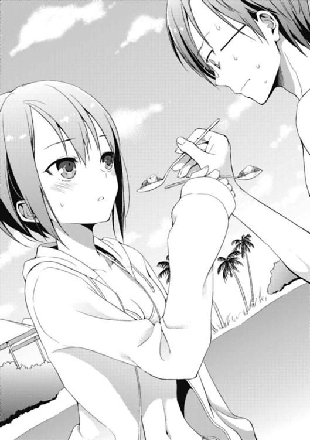
「か............」
あるに違いなくて──？
「か、か、辛過ぎる!! 甘いのに、辛い!! な、なんだ、これは!?」
「なっ!?」
瞬間、冥が絶叫した。
辛い......だと......？
おいおい、どうなってんだよ、花菱。お前は兄貴のために、ちゃんと激甘な料理を作ったんじゃなかったのか!?
「............そんな馬鹿な」
花菱がギギッと顔を引き攣らせた。
間違いなく、花菱の頭の中でも、冥に食べさせた麻婆豆腐は激甘で兄貴好みな一品だったに違いない。先程までのクールな佇まいを崩壊させ、悶絶する兄貴の無様な姿に、花菱はむしろ本人以上に悲しげな眼差しを携えて、その光景を呆然と見つめている。
が、次の瞬間。
「............あ、」
花菱の口から、決定的な言葉が飛び出した。
──それは、あまりに古典的でお約束とも言えるメシマズシチュエーションのド王道。
「............調味料を間違えた、かもしれない」
そして、言った。
「多分、メイプルシロップとかバニラエッセンスを入れるつもりが、手癖であたし用に置いてあったデスソースをぶちまけてしまったのではないかと思う。ごめんなさい」
花菱が頭を下げ、そして冥が崩れ落ちた。
結局、これ以上ないほど最悪のオチで、冥と花菱の兄妹騒動は幕を閉じることになってしまうのだった。
◇ ◇ ◇ ◇ ◇ ◇
ただ、ここでもう一つの困り事を解決せずに終わることなど出来ないわけで。
「......えーと」
姉さん達が言うには、この辺りにいるらしいが......？
「うう......」
「あ」
いた。
俺はオーシャンエリアの端、人工ビーチの片隅、植えられた椰子の木の根元に蹲り、凭れ掛かっている人影を発見した。
相手は、こちら側に背面を向けていて、まだ俺が現れたことに気付いていなかった。
白い背中がくるりと丸まり、妙に艶めかしい曲線を描いている。落ち着いた赤色の水着のラインとのコントラストが目に毒だ。
──紅緒だ。
一瞬、その扇情的な色合いに気圧されて、どう話し掛けていいモノかと困惑する部分もあった。けれど、近寄ってみると、それ以外にハッとさせられる点があることに気付く。
「ああああ......」
どうも紅緒は相当に落ち込んでいるようだ。
その有り様は擬音にすれば「ズーン」以外の何物でもないし、俺がもう紅緒から数メートルの距離まで近付いているのに、全くこちらに気付く気配もない。姉さん達に一度発見された時も、本人はこの調子で全く感知しなかったに違いない。
だが、逆に、あまりに落ち込んでいるせいで、話し掛けにくい──というのは分からなくもない。
どんよりとした闇の威圧感が紅緒の周囲には渦巻いてて、軽薄な態度でこの領域に侵入するのは随分と覚悟がいるように思えた。見かねた姉さん達にそのまま放置されて、回収するようにと姉の下僕的存在な俺が呼び出されたのも無理はないかもしれない。
さて、どうするべきか。
......とはいえ、どちらにしろ、このまま手を拱いて見ているだけではどうにもならないのだから、声を掛けるしかあるまい。
よし。行こう。
「おい、紅──」
瞬間、跳ね上げるような物凄い勢いで、紅緒が俺の方を振り向いた。
ギュンッと擬音が付いて、ついでに背後を取られたヒットマン宜しく、そのまま銃弾が飛んできてヘッドショットされてもおかしくないようなスピードだ。
「よ、葉介！」
「は......お、おお......？」
あまりに紅緒の反応が過剰だったせいで、俺の中では「困惑」というより「ビビリ」の感情が何よりも先んじて発現していた。けれども紅緒は俺が非常に狼狽えまくっていることには気付かなかったらしく、縋るような表情で、
「ど、ど、どうしよう！ 葉介！」
「おわっ!?」
俺の胸に飛び込んで来たのだ。
──とんでもなく柔らかな感触が、肌に触れて、弾ける。
以前も似たようなシチュエーション（姉さんを納得させる料理を紅緒が作ろうとしていた時だ）に遭遇したことがあったが、今回はその時と決定的に違う点がある。
衣服──お互いが水着姿であるということ。
薄布一枚だけを隔てて、ダイレクトに伝わる感触。触れる角度によっては、ゼロ距離での接触にすらなりかねない、大変危険な状態だ。
「あっ......ご、ごめん......！」
実際、取り乱しまくっていた紅緒も、すぐさま事態を認識したらしい。
パッと、反発した磁石のように身体をこちらから離し、手持ち無沙汰な様子で両手を彷徨わせた挙げ句、最終的に腰の後ろへと回して、俺の方を見つめ返した。
瞬間、互いの視線に、熱が混じる。
じりじりと、焦がれるような温度。完全な燃焼には至らぬ生焼けの。
「お、おう......」
「うん......え、えと......」
意味のない単語の応酬。
互いにその後に続く言葉が出て来ない。音声ではなく、身体的な接触が先に来てしまったのが一番の問題だった。
咄嗟に本来の距離感を超えた触れ合いから会話がスタートしたせいで、俺も紅緒も自分と相手の立ち位置に混乱して、なんというか「バタバタ」してしまっている。
けれど。
「............ど、どうしよう」
──そんな紅緒の一言で、俺は本来の目的に立ち返ることが出来た。
そうだ。
俺は冥にビンタをカマしてしまって、頰を張られた本人以上に動転してしまっている紅緒を回収しに来たはずだ。こんな風にドギマギしている場合では、ない。
「......とりあえず、冥は全然怒ってなかったぞ」
「えっ......そ、そうなの？」
「ああ」
むしろ殴られたことに感謝していたくらいだ──と言い掛けて、止める。
これではまるで冥が叩かれることに悦びを覚える怪しい趣味の人みたいではないか。語弊があるにもほどがある。ええと、もっと健全な言い方は......と。
「あのおかげで、眼が醒めた的な......そんな感じだったっぽい」
「そう、なんだ......」
「つっても、叩いちまったことに変わりはないわけだから、まず謝らねぇとな」
言うと、紅緒が強く頷きながら、
「そ、そうだよね！ うん、謝らないと......ダメだよね......」
僅かに視線を伏せた。
この動作にどういう意味があるのか、俺は考えた。
謝るのがイヤ、というわけではないはずだ。紅緒は自分の行動を深く反省しているようだし、後悔もしている。だとすれば──
「謝るのが、怖かったりするか？」
「！」
剝き出しの紅緒の肩がピクンと動いた。僅かな逡巡。けれど、沈黙はすぐに明けた。紅緒が小さくコクンと一度、首を縦に振った。
「............そ、そうかも」
恐怖。
人を叩いたことなんて、紅緒は今まで一度もなかったはずだ。それが今回、唐突に手が出てしまったわけだ。本人としても、それは相当な衝撃だったに違いない。
けれど、咄嗟に他人を自分の手で傷付けてしまったのは紛れもない事実。
普段から相当な優等生で通っている紅緒だ。自分の仕出かしてしまったことに、愕然として、色々なことが怖くなってしまっても無理はないと思う。
──では、紅緒は間違ったことをしたのか？
結果だけ見れば、それはノーだ。
紅緒の行動で、間違いなくあの閉塞していた状況は動いた。もしも手を出していたのが紅緒ではなく俺だったとしたら、ああいう終わり方は迎えなかったように思う。
ただ、紅緒自身がどう思っているかは別問題だろう。紅緒は自分自身の行動が許せないはずだし、とんでもないことをしてしまったと思っているはずだ。
──そんなこと大して気にする必要がないなんて、紅緒以外は皆知っているはずなのに。
「......仕方ねぇなぁ」
自然と身体が動いていた。
俺はスッと手を伸ばして紅緒の手を取って、強引に歩き始める。
ここでゴチャゴチャ言っていても始まらない。無理矢理にでも、紅緒を冥の前に連れて行ってしまうのが一番話が早いと思ったからだった。
「えっ......ええっ!? よ、葉介！ 手！ 手が！」
「......手が、なんだよ。一緒に謝りに行ってやるから、黙って付いて来いって」
ズンズン歩きながら、横目で紅緒の様子を窺う............やはりというか何というか、紅緒は眼を白黒させ、とても驚愕しているようだった。
そりゃあ、そうだろう。
衝動的に紅緒の手を握ってしまった俺自身が自分の行動に驚いているのだから、そうされた本人が驚かないわけがない。俺のことを下手すれば俺以上によく知っている紅緒だけに、尚更の話だ。
けれど──俺は、黙っているわけにはいかないと思った。一秒でも早く、紅緒の表情から不安の色を消し去ってやりたいと思ったのだ。
そうするしかないと思った。
「............う、うん」
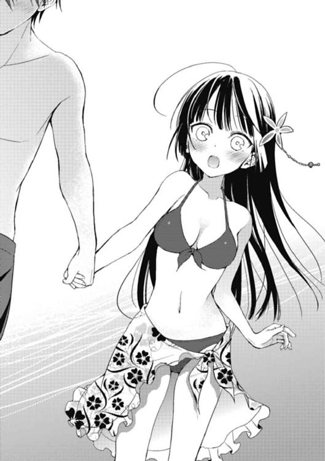
小さく、紅緒が頷いた。
そして。
「っ......」
──キュッ、と。
伝わる感触。熱。握り返して来た指。
ついさっき紅緒に抱きつかれてしまった時と比べて、触れ合った皮膚の面積は限りなく小さかった。けれど、掌から返って来る体温は、あの時よりもずっと熱くて──
「なぁ、紅緒。言い忘れてたことがあるんだけどさ」
「......な、なに」
俺は、その衝動に揺り動かされるまま、胸に抱えていた「とある想い」を紅緒に打ち明けてしまうのだった。
「スゲェ、似合ってる。その水着」
「......え」
「ああ、いや。それだけじゃ足りねぇよな......なんつーか、その、メチャクチャ可愛いと思う。うん。ウサギの着ぐるみなんかより、断然」
文化祭の時は、場を取り繕うように発言した言葉だったが、今回は気が付くと勝手にその言葉は飛び出していた。
「初めて、葉介に可愛いって言って貰えたなぁ......」
俺の手を握ったまま、紅緒が何故だか遠い目をして、ドームに覆われた空を仰ぐように見つめる。すると、雨粒のように自然と次の言葉が落ちて来た。
「私ね。リリィとか華凪ちゃんが羨ましかったんだ。ずっと心の中で『いいなぁ』って思ってた。だって華凪ちゃんは葉介に何度も可愛いって言って貰えるから......私は葉介から見て、可愛くないのかなぁって思ったりもしたんだ」
「......！」
「ん。元気、出て来た」
紅緒がじんわりと口元を緩めて、俺と繫いでいた手をパッと放した。
──熱が消失する。
肌に触れた二十八度の空気の冷たさに引きずられるように、俺も紅緒の手を放す。紅緒が明朗に笑いながら言った。
「ありがとう、葉介。これなら藤見川君に謝りに行けそうだよ。大丈夫、私一人でいい」
強い意志を秘めた大きな瞳がこちらを真っ直ぐに見つめていた。
俺は小さく一つ、頷いた。
「......そっか」
「うん。龍子さん達と待ってて。私は先に藤見川君達のところに行って来るから」
「......分かった。ちゃんとやれよ」
「もちろん！」
そう言って、紅緒は俺に背を向けて歩き出した。けれど──数十歩進んで、声を張らなくては届かないぐらいの距離が開いた辺りでクルリと身体を翻すと、
「そうだっ。私も、言い忘れてたこと、思い出した！」
左手でメガホンを作って、言い放ったのだ。
「今日、お弁当作って来たんだ！」
その言葉を聞いた瞬間、何故か俺の口から「ふはっ」という妙な笑い声が漏れていた。
どうして、俺は笑ったのだろう。
自分でも分からない。けれど、ここで紅緒が弁当......いや、違う。「料理」の話題を出してくれたことに、俺が堪らなくホッとしていたことだけは確かだった。
「どうせ紅緒の料理だからマズいんだろうなぁ」
「そんなことないよ！ 自信作だもん！」
今まで、何度となく繰り返して来たやり取り。
──俺は思うのだ。
こんな会話をしている間は、まだ戻ることが出来る、と。
曖昧なままでいることが出来る、と。
変化しないで、済む。
「メシマズ」という概念が「幼馴染み同士」という日常に、俺達を踏み止まらせてくれているのだから。
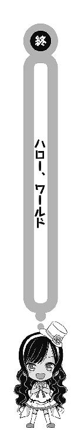
『ルルルルルルル』
「ん」
シーデルタから家に帰って来た俺は、扉を開けるや否や、家の電話が鳴り響いていることに気付いた。
──あの後、紅緒は冥に謝りに行った。
ところが、色々なことを気負って突撃した紅緒とは対照的に、殴られた当人である冥はなんと、ものの二秒で紅緒を許したどころか、『委員長のおかげで大切なことに気付かされた。俺を殴ってくれてありがとう』と聞く人が聞いたら、とんでもない誤解をされそうな台詞と共に、紅緒に感謝の言葉を告げたらしい。
その後、今までの鬱憤を晴らすかのようにシーデルタで楽しそうに遊びまくる花菱達尻目に、俺は紅緒の作った弁当に苦悶していた。
いつも通り、紅緒のメシはマズかった。
さすがに「ユンケル炊き込みご飯弁当」などという、ユンケルの効用で体力が回復した瞬間、その酷過ぎる味に回復した分も含めて体力を奪われてしまうような想像を絶する一品を繰り出されては堪らない。いくらイチローが毎日飲んでいるのと同じ一本数千円もする高価なユンケルを使用しているとか言われても、マズいものはマズいのである。
「と──俺が取るしかねぇよな」
今、家には俺一人しかいない。
花菱兄妹はもうしばらく遊んでいくとかで、まだシーデルタにいるはずだし、紅緒達は夕食の準備があるからと商店街で買い物中なのだ。
特にやることのない俺だけが一人さっさと帰宅した、というわけ。
「はい、もしもし。愛内ですが」
靴を脱ぎ、家に上がった俺はすぐさま受話器を取った。すると、
『あ、葉介？ 久しぶりー。お母さんですよ！』
「............」
『アレ？ 聞こえてません？ 葉介？ 別に詐欺とかじゃないですよー？』
「......お袋かよ。分かってるっつーの。相変わらずだな」
──俺を産んだ人間の声がした。
要するに、電話の主は愛内京佳だった。
つまり、イギリスからの国際電話というわけだ。
日本とイギリスの時差は今だと八時間なので、向こうの時間は......って、そもそも今が何時か分かんねぇ。
まぁいいや。あっちが何時だろうと関係ねーし。
『葉介。親に向かって、その口の利き方は良くないと思いますよ』
「別にいいじゃねぇかよ。つーか、何だよ。いきなり電話掛けて来るとか」
『ああ、そうですね！ ええと、出来れば龍子ちゃんか、リリィちゃんに替わって貰えると有り難いのですけども』
姉さんか、リリィ。
俺には関係ないが、この二人と絡む話......結構、重要な話題か？
「わりぃ。どっちもいねぇ。俺も今帰って来たとこだし、えーと伝言にするか......？」
『いないんですか。なら、葉介でもいいです。あのですね。時期的には十二月......ちょっと先の話です。お母さんもお父さんも日本に帰るのは難しいんですけど──』
お袋が言った。
『クリスマス、イギリスで過ごしませんか？』
「............は」
クリスマス......イギリス......!?
『ああ、もちろん。紅緒ちゃんも一緒に連れて、です。色々とお世話になってるみたいですし、一度直接お礼を言いたいと思っていたんです。それに──』
そして、お袋が決定的な台詞を吐き出したのである。
『一緒に二人のお誕生日会もやってしまうというのはどうでしょう。葉介の誕生日が十二月二十四日で、紅緒ちゃんの誕生日が十二月二十五日じゃないですか。丁度いいタイミングだと思うんですよね。リリィちゃんも一度ぐらい里帰りしたいでしょうし』
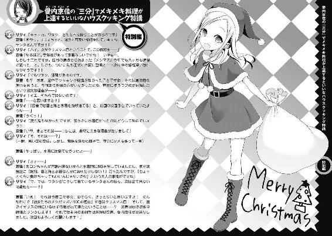
あとがき
あとがきを書いている時と出版される時の時間差がどうにかならないものかな、と常々思っています。
具体的に言えば去年の今頃、一巻のカバー袖コメントに「千葉ロッテがパリーグの一位です！」と書いた結果、実際に本が出た頃には四位になっていて、その後もアホみたいに負けまくって散々な結果に終わったりしたことなんて、まさに顕著な例でして。全然、近況が報告出来ないなぁと思っていたわけです。
あ、そうだ。でもコレは凄く近況報告っぽいかも。
──「艦これ」やってます。
元々ソーシャル的なゲームとしてはパズドラをやっていたのですが（ツイッターのアイコンもずっとパズドラ風にデコっていますし。今は表紙のカロンを闇属性で）、界隈のムーブメントに乗じて「艦これ」にも手を出してみました。重巡の摩耶がお気に入りです。
さてさて本編の方は、ついに四巻。カロン巻です。
カロンと麻婆豆腐の話は実は応募時の原稿の大半を占めていたエピソードでして、実際の一巻では脱線し過ぎだったのでカットになった部分でもあります。こうして復活させることが出来たのは、何となく嬉しい感じがしますね。はい。
また、既に本編をお読みになられている方はお気付きだと思うのですが、今回思わせぶりに作中で「体育祭」の話題を出しておきながら、結局そのままスルーしております。
これは、どういうことなのか。
実は四巻と同月発売になっている『Ｓ ＷＨＩＴＥ スニーカー文庫25周年記念アンソロジー』にて、この体育祭に関する短編を書かせて貰っているのです！
短編のタイトルは「秋季限定パン食い競争事件」。
名が体を表すとは、まさにこのこと──と言うしかない、そのまんまな内容です。
ちなみに、どこかで聞き覚えのあるタイトルだと言われても知りません。
きっと気のせいでしょう。唐突ですが、自分はいちごタルトとトロピカルパフェと栗きんとんならば、トロピカルパフェが一番好きです。本当に、全く関係ありませんが。
こちらの短編も、是非ともよろしくお願いします。
それでは最後になりましたが、この本の刊行に携わって頂いた全ての方に謝辞を。
また月刊「少年エース」の方では毎号ｒｉｎ先生の描かれる漫画版が連載中です。つい先日発売された最新号は、なんと既に原作一巻のラストまで進んでおります。非常にテンポの良い素敵なコミカライズでして、次号からは原作二巻の内容に突入します！
ぶっちゃけ、最初にコミカライズの話を頂いた時は『ライトノベルのコミカライズって原作一巻が大体漫画だと三冊分くらいだし、うちもそうなるのかなぁ』などと漠然と思っていたのですが、この進度の速さはまさに嬉しい誤算でした。
サラサラッと読める方が、やはりこの作品にはピッタリじゃないかなと思いますし。毎月、非常に楽しみにさせて頂いております。
それにしても三ヶ月スパンで刊行を続け、ついにこれでデビュー一周年。色々と感慨深いモノがあります。おそらく次にこれ以上の達成感を味わうであろう時は、このシリーズの最終巻になるのではないかな、と思います。
次は五巻。
大きな転換点になる巻です。
葉介と紅緒の物語に、もう少しだけ、お付き合い頂けたら幸いです。それでは、ご縁がありましたら是非とも、また。
高野 小鹿
カバー・口絵・本文イラスト／たいしょう田中
カバー・口絵・本文デザイン／伸童舎
彼女たちのメシがマズい100の理由4
高野小鹿
平成25年9月1日 発行
(C)2013 Koroku Takano, Taisyou Tanaka
本電子書籍は下記にもとづいて制作しました
角川スニーカー文庫『彼女たちのメシがマズい100の理由4』
平成25年9月1日初版発行
発行者 三坂泰二
発 行 株式会社ＫＡＤＯＫＡＷＡ
〒102-8177 東京都千代田区富士見2-13-3
電話 0570-002-301（カスタマーサポート・ナビダイヤル）
受付時間 9：00～17：00（土日 祝日 年末年始を除く）
http://www.kadokawa.co.jp/